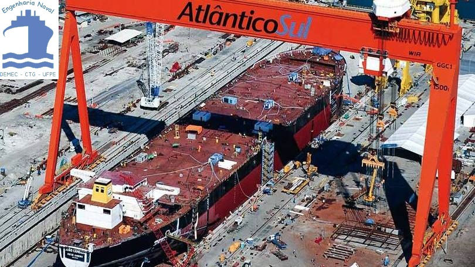
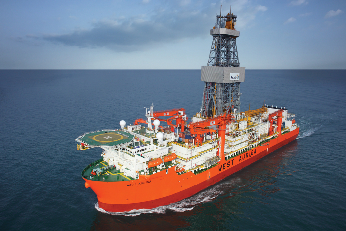
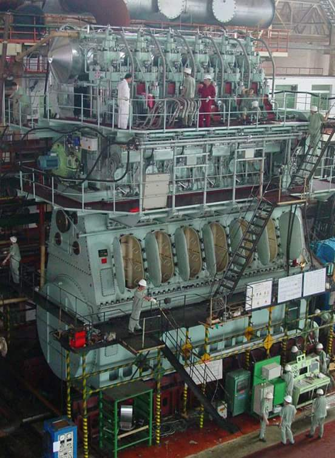

O engenheiro naval é o principal responsável por projetos e pela construção, inspeção e manutenção de embarcações e unidades offshore. Suas áreas de conhecimento abrangem principalmente mecânica dos fluidos, mecânica dos sólidos, termodinâmica e logística. Como projetista ele é o responsável desde o desenho da forma da embarcação, até dimensionamento dos equipamentos, realização da análise estrutural e cálculos de estabilidade. Pode atuar na inspeção da construção tanto com Armador, Construtor ou na Sociedade Classificadora tendo escopos diferentes em cada uma dessas.

São unidades de perfuração com cascos similares aos de navios. Possuem uma torre de perfuração no centro que atravessa uma abertura no casco denominada moonpool. Com um sistema de propulsão através de thruters tem maior velocidade de trânsito além de ótima capacidade de carga e estocagem.

Rated Power: 22920 bhp
Cylinder Bore: 700 mm
Piston Stroke: 2674 mm
Speed: 91 rpm
BSFC: 169g/kwh
Weight: 722 t
Rated Power: 22920 bhp
Cylinder Bore: 700 mm
Piston Stroke: 2674 mm
Speed: 91 rpm
BSFC: 169g/kwh
Weight: 722 t
Carga Longitudinal
O efeito da carga resultante da massa total de um embarcação é reduzido pelo empuxo gerado pela água. Assim a carga atuante, conhecida como carga líquida, é igual a soma destas da massa com o empuxo.
Esforços Longitudinais
O efeito da carga resultante da massa total de um embarcação é reduzido pelo empuxo gerado pela água. Assim a carga atuante é igual a subtração destas duas e que é conhecida como carga líquida.
Círculo de Mohr
Digite um número!
Digite um número!
Digite um número!
Digite um número!
Na mecânica do contínuo tensões são reações internas em um corpo material agindo em um plano imaginário devido a ação de forças externas aplicadas ao corpo. Através do cálculo do tensor tensão atuante em determinado ponto do corpo é possível- encontrar as tensões atuantes em qualquer direção através do Círculo de Mohr.
Dicionário Técnico
| English | Português |
|---|---|
| 2 CYCLE MOTOR | MOTOR DE 2 TEMPOS |
| 3-PHASE | TRIFÁSICO |
| 3-WAY VALVE MANIFOLD | VÁLVULA COLETORA DE 3 PASSAGENS |
| A/H | AMP/HORA |
| ABAFT | A RÉ |
| ABAFT | MAIS A RÉ DO QUE |
| ABAFT | PELA POPA |
| ABAFT | POR ANTE A RÉ DE |
| ABEAM | PELO TRAVÉS |
| ABOARD | A BORDO |
| ABROAD | NO ESTRANGEIRO |
| ABSORBER | ABSORVEDOR |
| AC | CA (CORRENTE ALTERNADA) |
| AC GENERATOR | ALTERNADOR |
| AC GENERATOR | GERADOR DE CORRENTE ELÉTRICA |
| ACCELERATING RELAY | RELÊ ACELERADOR |
| ACCELERATOR | ACELERADOR |
| ACCESS | ACESSO |
| ACCESSORIES | ACESSÓRIOS |
| ACCOMMODATION | ACOMODAÇÃO |
| ACCOMMODATION LADDER | ESCADA DE PORTALÓ |
| ACCOUNTING OFFICE | CONTADORIA |
| ACCUMULATION | ACUMULAÇÃO |
| ACCURACY | PRECISÃO |
| ACETYLENE | ACETILENO |
| ACETYLENE WELDING | SOLDA DE ACETILENO |
| ACIDITY | ACIDEZ |
| ACOUSTIC | ACÚSTICO |
| ACTION | AÇÃO |
| ACTIVE ANTI-ROLLING | BOLINA ATUADA |
| ACTUATING ROD | HASTE DE ACIONAMENTO |
| ACTUATING VALVE | VÁLVULA PILOTO |
| ADAPTER | ADPATADOR |
| ADJUST | AJUSTAR |
| ADJUSTING | AJUSTAGEM |
| ADJUSTING KNOB | BOTÃO DE AJUSTAGEM |
| ADMIRALTY BRASS | LATÃO DO TIPO ALMIRANTADO |
| ADRIFT | À DERIVA |
| AERATION | AREJAMENTO |
| AERATOR | AREJADOR |
| AERIAL | ANTENA (RÁDIO) |
| AERIAL | ELETRON |
| AERIAL RADAR | RADAR AÉREO |
| AFLOAT | FLUTUANTE |
| AFT | À RÉ |
| AFT BODY | CORPO DE POPA |
| AFT CRAFT | CALADO NA POPA |
| AFT MAST | MASTRO DE RÉ |
| AFT PEAK TANK | TANQUE DE COLISÃO A RÉ |
| AFTER BODY | CORPO DE POPA |
| AFTER COOLER | RESFRIADOR DE SAÍDA |
| AFTER PEAK TANK | TANQUE DE COLISÃO À RÉ |
| AFTER TURRET | TORRE DE RÉ |
| AFTERMOST | MAIS A RÉ |
| AFTERMOST | POSTERIOR |
| AGITATOR | AGITADOR |
| AGROUND | ENCALHADO |
| AHEAD | À VANTE |
| AHEAD | PELA PROA |
| AHEAD TURBINE | TURBINA DE MARCHE AVANTE |
| AIR | AR |
| AIR CASING | ENVÓLUCRO DE AR |
| AIR CHAMBER | RESERVATÓRIO DE AR |
| AIR CIRCUIT BREAK | DISJUNTOR A AR |
| AIR CIRCUIT BREAKER | INTERRUPTOR DE CIRCUITO DE AR |
| AIR COCK | TORNEIRA DE AR |
| AIR COMPRESSOR | COMPRESSOR DE AR |
| AIR CONDITIONER | CONDICIONADOR DE AR |
| AIR CONDITIONER ROOM | COMPARTIMENTO DE CONDICIONADOR DE AR |
| AIR CONDITIONING | AR CONDICIONADO |
| AIR CONSUMPTION | CONSUMO DE AR |
| AIR CONTROL | CONTROLE DE AR |
| AIR COOLER | RESFRIADOR DE AR |
| AIR CRAFT CARRIER | NAVIO PORTA-AVIÕES |
| AIR CUSHION | COLCHÃO DE AR |
| AIR DISCHARGE | DESCARGA DE AR |
| AIR DOOR | PORTA DE AR (REGISTRO DE AR) |
| AIR DUCT | CONDUTO DE AR |
| AIR EJECTOR | EJETOR DE AR |
| AIR ENCASED BOILER | ENVÓLUCRO DA CALDEIRA |
| AIR ESCAPE PIPE | SUSPIRO |
| AIR FILTER | FILTRO DE AR |
| AIR FLASK | AMPÔLA DE AR |
| AIR FLASK | FRASCO DE AR |
| AIR FLOW METER | MEDIDOR DE FLUXO DE AR |
| AIR FUEL RATIO | RAZÃO AR COMBUSTÍVEL |
| AIR GAP | ENTREFERRO / ESPAÇO LIBRE |
| AIR HEATER | AQUECEDOR DE AR |
| AIR HOLE | ORIFÍCIO DE AR |
| AIR HORN | BUZINA A AR |
| AIR HOSE | MANGUEIRA DE AR |
| AIR INJECTION | INJEÇÃO PNEUMÁTICA |
| AIR INLET | ENTRADA DE AR |
| AIR INTAKE | ENTRADA DE AR |
| AIR LEAKAGE | FUGA DE AR |
| AIR LEAKAGE | VAZAMENTO DE AR |
| AIR MOTOR | MOTOR A AR |
| AIR PIPE | SUSPIRO |
| AIR PORT | VIGIA |
| AIR PUMP | BOMBA DE AR |
| AIR RESERVOIR | RESERVATÓRIO DE AR |
| AIR SCAPE PIPE | TUBO DE SUSPIRO |
| AIR SCOOP | PORTA AXIAL DO REGISTRO DE AR |
| AIR SET | FILTRO REGULADOR DE AR COMPRIMIDO |
| AIR SPACE | ESPAÇO DE AR |
| AIR START VALVE | VÁLVULA DE AR DE PARTIDA |
| AIR STARTING SYSTEM | SISTEMA DE PARTIDA DE AR |
| AIR SUPPLY | SUPRIMENTO DE AR |
| AIR SWITCH | CHAVE SECA |
| AIR TEST | PROVA DE AR |
| AIR TIGHT | FECHADO AO AR |
| AIR TIGHT | HERMÉTICO |
| AIR TYPHONE | BUZINA A AR |
| AIR VENT | SUSPIRO |
| AIR VENT VALVE | VÁLVULA DE SUSPIRO DE AR |
| AIR VOIDS | ESPAÇOS DE AR |
| AIR VOLUME | VOLUME DE AR |
| AIR-COOLED | RESFRIADO A AR |
| AIRING | AREJAMENTO |
| AIRING | VENTILAÇÃO |
| AIRPLANE OBSTRUCTION LIGHT | LUZ DE AVIAÇÃO |
| AIRPORT | AEROPORTO |
| AIRTIGHT | ESTANQUE A AR |
| AIRTIGHT DOOR | PORTA ESTANQUE À AR |
| ALARM | ALARME |
| ALARM BELL | CAMPAINHA DE ALARME |
| ALARM INDICATOR | INDICADOR DE ALARME |
| ALARM PANEL | PAINEL DE ALARME |
| ALARM RELAY | RELÊ DE ALARME |
| ALARM SIGNAL | CONTATO DO ALARME |
| ALARM SOURCE | ALIMENTAÇÃO DO ALARME |
| ALARM SWITCH | CHAVE DE ALARME |
| ALIGN | ALINHAR |
| ALIGNMENT | ALINHAMENTO |
| ALINKER PLATING | CHAPEAMENTO TRINCADO |
| ALIVE | VIVO, ALIMENTADO |
| ALIVE PANEL | PAINEL ALIMENTADO |
| ALKALINE | ALCALINO |
| ALKALINE BATTERY | BATERIA ALCALINA |
| ALLEY | PASSAGEM |
| ALLEY-WAY | CORREDOR |
| ALLOWANCE | FOLGA |
| ALLOY | LIGA (DE AÇO, METAIS, ETC...) |
| ALLOY STEEL | AÇO LIGA |
| ALL-WAVE SUPER | RECEPTOR PARA TODAS AS FREQUÊNCIAS |
| ALONGSHORE | AO LONGO DA COSTA |
| ALONGSIDE | ATRACADO A CONTRABORDO |
| ALONGSIDE | ENCOSTADO OU ATRACADO AO CAIS |
| ALTERNATING CURRENT | CORRENTE ALTERNADA |
| ALTERNATING CURRENT MOTOR | MOTOR DE CORRENTE ALTERNADA |
| ALTERNATOR | ALTERNADOR |
| ALTITUDE | ALTURA |
| ALUMINIUM | ALUMÍNIO |
| AMMETER | AMPERÍMETRO |
| AMPERAGE | INTENSIDADE DE CORRENTE |
| AMPERE | AMPERE |
| AMPLIFIER | AMPLIFICADOR |
| ANCHOR | ÂNCORA |
| ANCHOR (TO) | FUNDEAR |
| ANCHOR BOLT | PARAFUSO DE ENCORAGEM |
| ANCHOR CABLE | AMARRA DE FUNDEIO |
| ANCHOR DAVIT | TURCO DE ÂNCORA |
| ANCHOR HANDLING AND MOORING ARRGT | ARRANJO DE APARELHO DE FUNDEAR E SUSPENDER |
| ANCHOR LAMP | LUZ DE ÂNCORA |
| ANCHOR LIGHT | LUZ DE ÂNCORA |
| ANCHOR LIGHT | LUZ DE FUNDEIO |
| ANCHOR PILE | ESTACA DE ANCORAGEM |
| ANCHORAGE | ANCORADOURO |
| ANEMOMETER | ANEMÔMETRO |
| ANEROID | ANERÓIDE |
| ANGLE | ÂNGULO |
| ANGLE BAR | CANTONEIRA |
| ANGLE GLOBE VALVE | VÁLVULA GLOBO EM ÂNGULO |
| ANNEAL (TO) | RECOZER |
| ANNEALING | RECOZIMENTO |
| ANNULUS | ESPAÇO ANULAR |
| ANODE | ANODO |
| ANSI | AMERICAN NATIONAL STANDARDS INSTITUTE |
| ANTENNA | ANTENA |
| ANTENNA COUPLER | ACOPLADOR DE ANTENA |
| ANTENNA CURRENT | CORRENTE DE ANTENA |
| ANTENNA MULTICOUPLER | ANTENA MULTICOMUTADORA |
| ANTI-CLOCKWISE | NO SENTIDO CONTRÁRIO AO DOS PONTEIROS DO RELÓGIO |
| ANTI-FREEZING | ANTICONGELANTE |
| ANTI-FREEZING THERMOSTAT | TERMOSTATO ANTI-CONGELANTE |
| ANTI-FRICTION | ANTIFRICÇÃO |
| ANTI-KNOCK | ANTIDETONANTE |
| ANTIMONY | ANTIMÔNIO |
| ANVIL | BIGORNA |
| APERTURE | ABERTURA |
| APPARATUS | APARELHO |
| APPENDAGES | APÊNDICES DO CASCO |
| APPLIANCE | APARELHO |
| APPLICATION | APLICAÇÃO |
| APPRENTICE | APRENDIZ |
| APPURTENANCES | ACESSÓRIOS |
| APRON | PAINEL DO TORNO |
| ARBOR | EIXO |
| ARC | ARCO |
| ARC FURNACE | FORNO A ARCO |
| ARC RECTIFIER | RETIFICADOR POR ARCO VOLTAICO |
| ARC SHIELD | ABAFADOR DE CENTELHA |
| ARC WELD | SOLDA A ARCO |
| ARC WELDING | SOLDA ELÉTRICA |
| AREA | ÁREA |
| AREA RATIO | COEFICIENTE DE ÁREA |
| ARM | BRAÇO |
| ARMATUR COIL | BOBINA DE INDUZIDO |
| ARMATURE | ARMADURA |
| ARMATURE | INDUZIDO |
| ARMER | COURAÇA |
| ARMOURED | ARMADO (CABO ELÉTRICO) |
| ARRANGEMENT | ARRANJO |
| ARRANGEMENT (OF) | DISPOSITIVO (DE) |
| ARRANGEMENT OF COMMUNICATION | ARRANJO DO SISTEMA DE COMUNICAÇÃO |
| ARRESTING DEVICE | DISPOSITIVO DE BLOQUEIO |
| ARTIFICIAL | ARTICIFIAL |
| ARTIFICIAL AERIAL | ARTIFICIAL AERIAL |
| ARTIFICIAL ISLAND | ILHA ARTIFICIAL |
| ARTUCULATED PLATFORM | TORRE ARTICULADA |
| ASA | AMERICAN STANDARDS ASSOCIATION |
| ASBESTO | AMIANTO |
| ASBESTOS FELT | FELTRO DE AMIANTO |
| ASBESTOS SHEET | PAPELÃO DE AMIANTO |
| ASH | CINZA |
| ASH CONTENT | TEOR DE CINZA |
| ASH PAN | DEPÓSITO PARA CINZA |
| ASHORE | EM TERRA FIRME |
| ASPHALT | ASFALTO |
| ASSEMBLY | CONJUNTO |
| ASSEMBLY | MONTAGEM |
| ASTERN | A RÉ |
| ASTERN | PELA POPA |
| ATHWART | DE TRAVÉS |
| ATHWARTSHIP | TRANSVERSALMENTE À LINHA DE CENTRO |
| ATMOSPHERE | ATMOSFERA |
| ATMOSPHERIC ZONE | ZONA ATMOSFÉRICA |
| ATOMIZER | MAÇARICO |
| ATOMIZER NOZZLE | PORCA DISTRIBUIDORA DO MAÇARICO |
| ATOMIZER TIP | BICO DE MAÇARICO |
| ATTACHED | ANEXO |
| AUDIO FREQUENCY | AUDIOFREQUÊNCIA |
| AUGER | BROCA |
| AUGER | PUA |
| AUTO-ALARM ANTENNA | ANTENA AUTO-ALARME |
| AUTOMATIC | AUTOMÁTICO |
| AUTOMATIC CONTROLLER | CONTROLADOR AUTOMÁTICO |
| AUTOMATIC OPERATION | OPERAÇÃO AUTOMÁTICA |
| AUTOMATIC STARTER | ARRANQUE AUTOMÁTICO |
| AUTOMATIC TRANSFER SWITCH | CHAVE DE TRANSFERÊNCIA AUTOMÁTICA |
| AUTOMATIC VOLTAGE REGULATOR | REGULADOR AUTOMÁTICO DE VOLTAGEM |
| AUTO-PILOT | PILOTO AUTOMÁTICO |
| AUXILIARY | AUXILIAR |
| AUXILIARY BOILER | CALDEIRA AUXILIAR |
| AUXILIARY CONDENSER | CONDENSADOR AUXILIAR |
| AUXILIARY ENGINE | MÁQUINA AUXILIAR |
| AUXILIARY EXHAUST LINE | REDE DE DESCARGA DOS AUXILIARES |
| AUXILIARY STEAM LINE | REDE DE VAPOR AUXILIAR |
| AUXILIARY SWITCHBOARD | QUADRO DE MANOBRA AUXILIAR |
| AUXILIARY VALVE | VÁLVULA AUXILIAR |
| AVERAGE | MÉDIA |
| AWASH | À TONA D'ÁGUA |
| AWNING | TOLDO |
| AWNING STONCHION | FERRO DE TOLDO |
| AX, AXE | MACHADO |
| AXIAL | AXIAL |
| AXIAL FLOW | FLUXO AXIAL |
| AXIAL FLOW PUMP | BOMBA DE FLUXO AXIAL |
| AXIS, AXIE | EIXO |
| AZIMUTH | AZIMUTE |
| BABBIT METAL | METAL PATENTE |
| BACK | ATRAS |
| BACK LASH | FOLGA LATERAL |
| BACK PRESSURE | CONTRAPRESSÃO |
| BACK PRESSURE VALVE | VÁLVULADE CONTRA-PRESSÃO |
| BACK WALL | PAREDE DE FUNDO (CALDEIRA) |
| BACKBOARD | GUARDA-PATRÃO (DE UM BARCO) |
| BACKELITE | BAQUELITE |
| BACKLASH | FOLGA EM ENGRENAGEM |
| BACKSTAY | BRANDAL |
| BACK-UP SPRING | MOLA DE RECUPERAÇÃO |
| BAFFLE | DEFLETOR |
| BAFFLE | DIAFRAGMA |
| BAFFLE PLATE | CHAPA DEFLETORA |
| BAFFLE PLATE | DIAFRAGMA |
| BAFFLE-DOOR | GUARDA-FOGO |
| BAG | SACO |
| BAKED | COZIDO |
| BAKERY | PADARIA |
| BAKING OVEN | FORNO PARA PÃO |
| BALANCE | BALANÇA |
| BALANCE | EQUILÍBRIO |
| BALANCED RUDDER | LEME COMPENSADO |
| BALE | FARDO |
| BALE CUBIC CAPACITY | CAPACIDADE DE CARGA EM FARDOS |
| BALL | ESFERA |
| BALL BEARING | MANCAL DAS ESFERAS |
| BALL BEARING | ROLAMENTO DE ESFERAS |
| BALL BEARING | ROLIMÃ |
| BALL REAMER | ALARGADOR ESFÉRICO |
| BALLAST | LASTRO |
| BALLAST PUMP | BOMBA DE LASTRO |
| BALLAST TANK | TANQUE DE LASTRO |
| BALLAST WATER TANK | TANQUE DE LASTRO |
| BALLISTIC | BALÍSTICO |
| BALLASTING | LASTREAMENTO |
| BALLOON | BALÃO |
| BAND | BRAÇADEIRA |
| BAND | FAIXA |
| BAND SAW | SERRA DE FITA |
| BAND WIDTH | LARGURA DA FAIXA (RÁDIO) |
| BAR | BARRA |
| BAR KEEL | QUILHA MACIÇA |
| BAR KEEL | QUILHA DE BARRA |
| BAR STEM | RODA DE PROA MACIÇA |
| BARB | REBARBAR |
| BARBER | BARBEIRO |
| BARBER'S SHOP | BARBEARIA |
| BARE | DESCOBERTO |
| BARE | LISO |
| BARE | NU |
| BARE | SEM REVESTIMENTO |
| BARE SURFACE | SUPERFÍCIE NUA |
| BARE WIRE | ARAME NU |
| BARE WIRE | FIO SEM ISOLAMENTO |
| BARGE | ALVARENGA |
| BARGE | BARCAÇA |
| BARGE | CHATA |
| BARGE BUMPER | DEFENSA DE PERNAS |
| BARNACLE | CARACA |
| BAROMETER | BARÔMETRO |
| BARREL | BARRICA |
| BARREL | BARRIL DE MADEIRA. |
| BARREL | CANO DE ARMA |
| BARREL | TAMBOR |
| BARRIER | BARREIRA |
| BARRIER | OBSTÁCULO |
| BASE | BASE |
| BASE | JAZENTE |
| BASE LINE | LINHA BASE |
| BASIN | BACIA |
| BASIN | DOCA |
| BASKET | CESTA |
| BATCH | BATELADA |
| BATCH | CARGA |
| BATCH | FORNADA |
| BATCH | LOTE |
| BATH | BANHO |
| BATH-ROOM | BANHEIRO |
| BATH-TUB | BANHEIRA |
| BATTEN | SARRAFO |
| BATTEN | SARRETA |
| BATTEN | VIROTE |
| BATTEN GRATING | ESTRADO |
| BATTER | INCLINAÇÃO |
| BATTERY | BATERIA |
| BATTERY CHARGER | APARELHO DE CARGA DE BATERIAS |
| BATTERY CHARGING BOARD | QUADRO DE CARGA PARA BATERIAS |
| BATTERY LOAD | CARGA DE BATERIA |
| BATTERY PANEL | PAINEL DE BATERIA |
| BATTERY ROOM | COMPARTIMENTO DAS BATERIAS |
| BATTERY SWITCHBOARD | QUADRO DE INTERRUPTORES DE BATERIA |
| BATTLE | BATALHA |
| BATTLE SHIP | ENCOURAÇADO |
| BAY | BAÍA |
| BDV (BREAKDOWN VOLTAGE) | BDV (VOLTAGEM DE DESARME) |
| BEACON | FAROL |
| BEAD | CORDÃO DE SOLDA |
| BEAD | REBORDO |
| BEAM | VAU |
| BEAM | VIGA |
| BEAM KNEE | BORBOLETA DE VAU |
| BEARER | APOIO |
| BEARER | BASE |
| BEARER | SUPORTE |
| BEARING | MANCAL |
| BEARING | MARCAÇÃO |
| BEARING | ROLAMENTOS (DE) |
| BEARING REPEATER | REPETIDORA DE MARCAR |
| BEARING SHELL | TELHA DO MANCAL |
| BECKET | TRAMBOLHO |
| BED | BANCADA |
| BED | BASE |
| BED | BELICHE |
| BED | CAMA |
| BED CURTAIN | CORTINA DE BELICHE |
| BED LAMP | LUMINÁRIA DE CABECEIRA |
| BED PLATE | BERÇO |
| BED PLATE | CHAPA - APOIO |
| BED ROOM | CAMAROTE |
| BELAYING PIN | MALAGUETA |
| BELL | CAMPAINHA |
| BELL | SINO |
| BELL CRANK | ALAVANCA EM ÂNGULO |
| BELL METER | CAMPÂNULA |
| BELL METER | MEDIDOR TIPO SINO |
| BELL MOUTH | BOCA DE SINO |
| BELLED FOUNDATION | ESTACA DE BASE ALARGADA |
| BELLED PILE | ESTACA DE BASE ALARGADA |
| BELLOWS | FOLE |
| BELT | CINTURÃO |
| BELT | CORREIA |
| BELT DRIVEN | ACIONADO POR CORREIA |
| BENCH | BANCADA |
| BENCH | BANCO (DE SENTAR) |
| BEND (TO) | CURVAR |
| BENDABLE | DOBRÁVEL |
| BENDER | MÁQUINA DE CURVAR |
| BENDING | FLEXÃO |
| BENDING MOMENT | MOMENTO FLETOR |
| BENDING ROLLER | ROLO DE CURVA CHAPAS (CALANDRA) |
| BENDING TEST | PROVA DE FLEXÃO |
| BERTH | ANCORADOURO |
| BERTH | BELICHE |
| BERTH | BERÇO |
| BERTHING | ATRACAÇÃO |
| BETWEENDECK | COBERTA |
| BETWEENDECK | CONVÉS INTERMEDIÁRIO |
| BEVEL | BISEL |
| BEVEL | CHANFRO |
| BEVEL | EM ÂNGULO |
| BEVEL GEAR | ENGRENAGEM CÔNICA |
| BEVELLED OFF | CHANFRADO |
| BIGHT | ENSEADA |
| BILGE | BOJO |
| BILGE | PORÃO |
| BILGE AND BALLAST | ESGOTO E LASTRO |
| BILGE AND COFFERDAM | PORÃO E COFERDAM |
| BILGE BOARD | TABUADO DA CALHA DO PORÃO |
| BILGE BRACKET | BORBOLETA DE CAVERNA |
| BILGE CHEST | CAIXA DE VÁLVULA DE BOMBA DE ESGOTO |
| BILGE EDUCTOR | EDUTOR DE PORÃO |
| BILGE EJECTOR SUPPLY | SUPRIMENTO DO EJETOR DO PORÃO |
| BILGE KEEL | BOLINA |
| BILGE PUMP | BOMBA DE ESGOTO |
| BILGE STRAKE | FIADA DO BOJO |
| BILGE SUCTION PIPE | TUBO DE ASPIRAÇÃO DO PORÃO |
| BILGE WATER | ÁGUA ACUMULADA NO PORÃO |
| BILGE WAYS | LONGARINAS DE CARRO DE LANÇAMENTO |
| BILGE WELL | POCETO DO PORÃO |
| BILGE WELL FOR DRY CARGE HOLD | POCETE DE PORÃO DE CARGA |
| BILGEWAY | PRÓDIGO (DE CARREIRA) |
| BILGING | ROMBO |
| BILL | LISTA |
| BILL OF MATERIAL | LISTA DE MATERIAL |
| BILLET | TARUGO |
| BIN | DEPÓSITO |
| BIN | ESCANINHO |
| BIN | SILO |
| BINNACLE | BITÁCULA (AGULHA) |
| BINOCULAR | BINÓCULO |
| BINOCULAR TELESCOPE | BINÓCULO |
| BIT | FERRAMENTA DE TORNO |
| BITT | CABEÇO |
| BITUMASTIC | BETUMINOSO |
| BLADE | LÂMINA |
| BLADE | PÁ |
| BLADE | PALHETA |
| BLANKED OFF | COM FLANGE CEGO |
| BLANKET | COBERTOR |
| BLAS | POLARIZAÇÃO |
| BLAST FURNACE | ALTO FORNO |
| BLOCK | BLOCO |
| BLOCK | CADERNAL |
| BLOCK | CATARINA |
| BLOCK | MOITÃO |
| BLOCK COEFFICIENT | COEFICIENTE DE BLOCO |
| BLOW BOTTOM | EXTRAÇÃO DO FUNDO (CALDEIRA) |
| BLOW PIPE | MAÇARICO |
| BLOW-DOWN | EXTRAÇÃO (CALDEIRA) |
| BLOW-DOWN VALVE | VÁLVULA DE EXTRAÇÃO DO FUNDO |
| BLOWER | VENTILADOR |
| BLOWER | VENTOINHA |
| BLOWER MOTOR FOR COOKING RANGE | MOTOR DE VENTOINHA DO FOGÃO |
| BLOW-FUSE | QUEIMA DE FUSÍVEL |
| BLOW-OFF | EXTRAÇÃO |
| BLOW-OFF VALVE | VÁLVULA DE EXTRAÇÃO |
| BLOW-OUT | ESCAPE |
| BLUFF BOWED | DE PROA BOJUDA |
| BOARD | BORDA |
| BOARD | PAINEL |
| BOARD | PRANCHA |
| BOARD | QUADRO |
| BOAT | BARCO |
| BOAT | BOTE |
| BOAT | EMBARCAÇÃO |
| BOAT DAVIT | TURCO DE EMBARCAÇÃO |
| BOAT DECK | CONVÉS DAS EMBARCAÇÕES |
| BOAT LANDING | ANCORADOURO |
| BOAT WINCH | GUINCHO DE EMBARCAÇÃO |
| BOATSWAIN (BOSUN) | CONTRAMESTRE |
| BOATSWAIN (BOSUN) | MESTRE |
| BOATSWAIN'S STORE | PAIOL DO MESTRE |
| BOBBIN | BOBINA |
| BOBBIN | CARRETEL |
| BODY | CASCO (DO NAVIO) |
| BODY | CORPO |
| BODY PLAN | PLANO DE BALISAS |
| BOILER | CALDEIRA |
| BOILER | PANELÃO |
| BOILER CASING | ENVÓLUCRO DA CALDEIRA |
| BOILER DRUM | TUBULAÇÃO DE CALDEIRA |
| BOILER FLAT | ESTRADO DA CALDEIRA |
| BOILER FORE SIDE | LADO DE VANTE DA CALDEIRA |
| BOILER FRONT | FRENTE DA CALDEIRA |
| BOILER MAN | CARVOEIRO |
| BOILER OPENING | ABERTURA DA CALDEIRA |
| BOILER ROOM | PRAÇA DE CALDEIRAS |
| BOILER SEAT (BEARER) | BERÇO DA CALDEIRA |
| BOILING | EBOLIÇÃO |
| BOILING OUT | BARRELA |
| BOILING POINT | PONTO DE EBULIÇÃO |
| BOLLARD | CABEÇO |
| BOLLARD | CABEÇO DE AMARRAÇÃO |
| BOLLARD | MOIRÃO |
| BOLSTER | ALMOFADA |
| BOLSTER | GOLA DE ESCOVEM |
| BOLT | ESTOJO |
| BOLT | PARAFUSO |
| BOLT | PINO |
| BONDED STOREROOM | PAIOL ALFANDEGADO |
| BONDED STOREROOM | PAIOL DE ALFANDEGA |
| BONDED STORES | MERCADORIAS ALFANDEGADAS |
| BOND-LOCKER | PAIOL DE CANTINA |
| BONNET | CAPA DE CHAMINÉ |
| BONNET | CAPOTA |
| BOOK CASE | ESTANTE PARA LIVROS |
| BOOSTER | RECALQUE (BOMBA) |
| BOOSTER PLATFORM | PLATAFORMA DE BOMBEIO |
| BOOSTER PUMP | BOMBA DE RECALQUE |
| BOOTTOPPING | FAIXA DE LINHA D'ÁGUA |
| BORE | FURO |
| BORE | ORIFÍCIO |
| BORE DIAMETER | DIÂMETRO DE FURO |
| BORING (TO) | BROQUEAR |
| BORING (TO) | FURAR |
| BORING (TO) | MADRILHAR |
| BORING MACHINE | MÁQUINA DE BROQUEAR |
| BOSOM PIECE | TAPA-JUNTA EM CANTONEIRA |
| BOSS | BOSSO |
| BOTTLE | GARRAFA |
| BOTTLE ROOM | COMPARTIMENTO DAS AMPOLAS |
| BOTTOM CLEANING | LIMPEZA DO FUNDO DO CASCO DO NAVIO |
| BOTTOM DEAD CENTER | PONTO MORTO INFERIOR (PMI) |
| BOTTLE LEG | PERNA ALARGADA |
| BOTTOM LOG | ODÔMETRO DE FUNDO |
| BOTTOM REAR | PARTE TRASEIRA EXTERNA |
| BOTTOM SHELL | CHAPEAMENTO DO FUNDO |
| BOTTOM STRAKE | FIADA DE FUNDO |
| BOTTON | FUNDO |
| BOTTON CEILING | COBRO |
| BOUNDARY LIGHT | LUZ INDICADORA DE LIMITE |
| BOUYED CHANNEL | CANAL BALIZADO |
| BOW | PROA |
| BOW & BUTTOCK | LINHA DE ALTO |
| BOW CONSTRUCTION | CONSTRUÇÃO DA PROA |
| BOW HOLD TOOP'S QUARTERS | AVANTE |
| BOW HOLD TOOP'S QUARTERS | COBERTA DE TROPA |
| BOW LIGHT | LUZ DE PROA |
| BOW LINE | ESPIA DE PROA |
| BOWER ANCHOR | ÂNCORA DE PROA |
| BOWL (COMPASS) | CUBA (AGULHA MAGNÉTICA) |
| BOX | CAIXA |
| BOX GIRDER DECK | CONVÉS TIPO VIGA-CAIXÃO |
| BRACE | ESTAI |
| BRACING | TRAVA DE REFORÇO |
| BRACING | CONTRAVENTO |
| BRACKET | BORBOLETA |
| BRACKET | CONSOLE |
| BRACKET | SUPORTE |
| BRACKET FAN | VENTILADOR COM BRAÇO |
| BRACKET FAN | VENTILADOR DE ANTEPARA |
| BRACKET FLOOR | HASTILHA ABERTA |
| BRACKET LAMP | LUMINÁRIA COM BRAÇO |
| BRAKE | FREIO |
| BRAKE HORSE POWER (BHP) | POTÊNCIA NO FREIO (BHP) |
| BRAKE PEDAL | PEDAL DOS FREIOS |
| BRAKE SHOE | SAPATA DO FREIO |
| BRANCH | DERIVAÇÃO |
| BRANCH | RAMIFICAÇÃO |
| BRANCH | RAMO |
| BRANCH BOX | CAIXA DE DERIVAÇÃO |
| BRANCH BOX | CAIXA DE DISTRIBUIÇÃO |
| BRANCH-FEEDER | DERIVAÇÃO DO ALIMENTADOR |
| BRANCH-OFF (TO) | DERIVAR |
| BRANCH-OFF (TO) | RAMIFICAR |
| BRAND | MARCA (COMERCIAL) |
| BRASS | LATÃO |
| BRASS BUSHES | BUCHAS DE LATÃO |
| BRASS PLATE | CHAPA DE LATÃO |
| BRAZE, BRAZING | SOLDA FORTE |
| BREADTH | BOCA DE NAVIO |
| BREADTH | LARGURA |
| BREADTH MOULDED | BOCA MOLDADA |
| BREAK (TO) | QUEBRAR |
| BREAKDOWN | AVARIA |
| BREAKDOWN | DESSARANJO |
| BREAKER | DISJUNTOR |
| BREAKER | INTERRUPTOR |
| BREAK-IN RELAY | RELÊ INTERRUPTOR |
| BREAKWATER | QUEBRA-MAR |
| BREAST | BORDO |
| BREAST | COSTADO |
| BREAST | LADO |
| BREAST HOOK | BUÇARDA |
| BREATHER | SUSPIRO |
| BREATHER VALVE | VÁLVULA DE DESCOMPRESSÃO |
| BRICK | TIJOLO |
| BRICKWORK | CONSTRUÇÃO DE TIJOLOS |
| BRIDGE | PASSADIÇO |
| BRIDGE | PONTE |
| BRIDGE DECK | CONVÉS DO PASSADIÇO |
| BRIDGE DECK | CONVÉS SUPERIOR |
| BRIDGE HOUSE | CASA DO LEME |
| BRINE | SALMOURA |
| BRINE PUMP | BOMBA DE SALMOURA |
| BRITTLE | QUEBRADIÇO |
| BRITTLENESS | FRAGILIDADE |
| BROILER | GRELHA |
| BROKER STOWAGE | PERDA DE ESPAÇO DE CARGA |
| BROKER STOWAGE | QUEBRA DE ESTIVA |
| BROW | PESTANA DE VIGIA |
| BRUSH | ESCOVA |
| BUBBLE | BOLHA |
| BUCKLE (TO) | EMPENAR |
| BUCKLE (TO) | ENTORTAR |
| BUCKLE (TO) | FLAMBAR |
| BUCKLING | EMPENO |
| BUCKLING | FLAMBAGEM |
| BUFF | FELTRO |
| BUFF | RODA DE POLIR COM DISCOS DE PANO OU COURO |
| BUFF (TO) | POLIR COM CAMURÇA |
| BUFFER | AMORTECEDOR |
| BUFFER | PARA-CHOQUE |
| BUFFER PLATE | CHAPA DE AMORTECIMENTO |
| BUFFER SCREW | PARAFUSO AMORTECEDOR |
| BUFFER SPRING | MOLA DO AMORTECEDOR |
| BUILD-UP (TO) | COMPOR |
| BUILD-UP (TO) | MONTAR |
| BULB | BULBO |
| BULB | LÂMPADA |
| BULB ANGLE | CANTONEIRA COM BULBO |
| BULB PLATE | CHAPA DE BULBO |
| BULBOUS BOW | PROA BULBOSA |
| BULD BAR | BARRA COM BULBO |
| BULGING | ABAULADO |
| BULGING | ABOBADO |
| BULK CARGO | CARGA A GRANEL |
| BULK CARRIER | NAVIO GRANELEIRO |
| BULKHEAD | ANTEPARA |
| BULKHEAD GIRDER | ESCOAS |
| BULKHEAD LAMP | LUMINÁRIA DE ANTEPARA |
| BULWARK | BORDA FALSA |
| BULWARK PLATING | CHAPEAMENTO DA BORDA FALSA |
| BULWARK PORT | SAÍDA D' ÁGUA |
| BULWARK STAY | ESTAI DA BORDA FALSA |
| BUMPER | PARA-CHOQUE |
| BUMPER | BATENTE |
| BUNDLE | FEIXE |
| BUNK | BELICHE |
| BUNKER | CARVOEIRA |
| BUNKER | PAIOL DE CARVÃO |
| BUNKER OPENING | AGULHEIRO |
| BUOY | BÓIA |
| BUOYANCY | EMPUXO |
| BUOYANCY CHAMBER | CÂMARA DE FLUTUAÇÃO |
| BUOYANCY TANK | TANQUE DE FLUTUAÇÃO |
| BURNER | MAÇARICO |
| BURNER SHUT-OFF VALVE | VÁLVULA DE FECHAMENTO MAÇARICO |
| BURR | REBARBA |
| BUS BAR | BARRA DE DISTRIBUIÇÃO |
| BUSH | BUCHA |
| BUTT | TOPO |
| BUTT STRAP | TAPA JUNTA |
| BUTT WELD | SOLDA A TOPO |
| BUTTECK LINE | LINHA DE ALTO |
| BUTTERFLY NUT | PORCA DE BORBOLETA |
| BUTTON | BOTÃO |
| BUTT-WELD | SOLDA DE TOPO |
| BUZZER | CIGARRA |
| BY-PASS | CONTORNO |
| BY-PASS | DERIVAÇÃO |
| BY-PASS | DESVIO |
| BY-PASS VALVE | VÁLVULA DE CONTORNO |
| CABIN | CAMAROTE |
| CABIN ACCOMMODATION | ACOMODAÇÃO DE CAMAROTE |
| CABIN FAN | VENTILADOR DE CAMAROTE |
| CABINET | GABINETE |
| CABINET LIGHT | LUMINÁRIA DE MESA |
| CABLE | AMARRA DE FUNDEIO |
| CABLE | CABO |
| CABLE | ESPIA |
| CABLE | UNIDADE NÁUTICA DE COMPARTIMENTO |
| CABLE CHAIN (=CHAIN CABLE) | AMARRA DE CORRENTE |
| CABLE CHAIN (=CHAIN CABLE) | AMARRA DE FUNDEIO |
| CABLE HANGER | SUPORTE DE FIAÇÃO |
| CABLE HOLDER | COROA DE MOLINETE (OU COROA DE BARBOTIN) |
| CABLE LIFTER | COROA DE MOLINETE |
| CABLE RACK, CABLE SHELF | SUPORTE DE FIAÇÃO |
| CABLE SHACKLE | MANILHA DE AMARRA |
| CABLE SHOT | QUARTEL DE AMARRA |
| CABLE SIZE | DIMENSÃO DO CABO |
| CABLE STTOPER | MORDENTE DE AMARRA |
| CABLE'S LENGTH | COMPRIMENTO DE AMARRA DE UM NAVIO. |
| CADET | CADETE |
| CAISSEN | PORTA-BATEL |
| CAISSON | CAIXÃO |
| CALCULATION | CÁLCULO |
| CALIBRATION | CALIBRAGEM |
| CALIPER RULE | PAQUÍMETRO |
| CALK (CAULK) | CALAFETAR |
| CALKING | CALAFETO |
| CALL | CHAMADA |
| CALL SIGNAL | SINAL DE CHAMADA |
| CALLING BELL | CAMPAINHA DE CHAMADA |
| CALLIPER (CALIPER) | COMPASSO DE MEDIDA |
| CALORIFIER | AQUECEDOR |
| CAM | CAME |
| CAM | RESSALTO |
| CAM LIFTER | LEVANTADOR DE VÁLVULA |
| CAM SHAFT | DE COMANDO |
| CAM SHAFT | DE DISTRIBUIÇÃO |
| CAM SWITCH | CHAVE DE CAMES |
| CAM WHEEL | RODA EXCÊNTRICA |
| CAMBER | ABAULAMENTO |
| CAMBER | ARQUEAMENTO |
| CAMBER | CURVATURA |
| CAMSHAFT | EIXO DE CAMES |
| CAN | LATA |
| CAN | TRONCO |
| CAN BUOY | BÓIA CILÍNDRICA |
| CANAL SEARCHLIGHT | HOLOFOTE PARA O CANAL |
| CANDLE | VELA |
| CANDLE POWER | LUMINOSIDADE |
| CANT | ÂNGULO |
| CANT | ARESTA |
| CANT | INCLINAÇÃO |
| CANT FRANES | CAVERNAS INCLINADAS DE POPA |
| CANTEEN | CANTINA |
| CANTILEVER BEAM | VIGA DE BALANÇO |
| CANTILEVERED JACK-UP | PLATAFORMA AUTO ELEVATÓRIA |
| CANVAS | LONAS |
| CAP | CAPA DO MANCAL |
| CAP | TAMPA |
| CAP DRIVER | DESMONTA-TAMPA |
| CAP NUT | CAPA ROSCADA |
| CAP SCREW | PARAFUSO DE CABEÇA |
| CAP SCREW | PARAFUSO SEM PORCA |
| CAPACITANCE | CAPACITÂNCIA |
| CAPACITOR | CONDENSADOR |
| CAPACITY | CAPACIDADE |
| CAPACITY PLAN | PLANO DE CAPACIDADE |
| CAPILARITY | CAPILARIDADE |
| CAPSIZE | EMBORCAR |
| CAPSTAN | CABRESTANTE |
| CAPTAIN | CAPITÃO DE MAR E GUERRA |
| CAPTAIN | COMANDANTE |
| CAPTAIN'S BED ROOM | CAMAROTE DO COMANDANTE |
| CAPTAIN'S DAY ROOM | SALA DE ESTAR DO COMANDANTE |
| CAPTAIN'S LAVATORY | BANHEIRO DO COMANDANTE |
| CAPTAIN'S LOCKER | PAIOL DO COMANDANTE |
| CAPTAIN'S MESS ROOM | REFEITÓRIO DO COMANDANTE |
| CAPTAIN'S TOILET | BANHEIRO DE COMANDANTE |
| CARBIDE | CARBURETO |
| CARBON | CARBONO |
| CARBON | CARVÃO |
| CARBON BRUSH | ESCOVA DE CARVÃO |
| CARBON STEEL | AÇO CARBONO |
| CARBURATOR | CARBURADOR |
| CARE | CUIDADO |
| CARE | PRECAUÇÃO |
| CARGO | CARGA |
| CARGO BATCH | ESCOTILHA DE CARGA |
| CARGO BATTEN | SARRETA |
| CARGO BLOCK | BLOCO DE CARGA |
| CARGO BLOCK | POLEAME DE CARGO |
| CARGO BOOM | LANÇA DE CARGA |
| CARGO BOOM | PAU DE CARGA |
| CARGO FALL | TIRANTE DE CARGA |
| CARGO GEAR | APARELHO DE CARGA |
| CARGO GEAR ARRANGEMENT | ARRANJO DE APARELHO DE CARGA |
| CARGO HOLD | PORÃO DE CARGA |
| CARGO LIGHT | LUZ DE CARGA |
| CARGO LIGHT | LUZ PARA CARGA |
| CARGO OIL PIPE | TUBO DE ÓLEO DE CARGA |
| CARGO OIL TANK | TANQUE DE ÓLEO DE CARGA |
| CARGO OIL WING TANK | TANQUE LATERAL DE ÓLEO DE CARGA |
| CARGO PORT | PORTINHOLA DE CARGA |
| CARGO PUMP | BOMBA DE CARGA |
| CARGO SHIP | NAVIO CARGUEIRO |
| CARGO SPACE | ESPAÇO PARA CARGA |
| CARGO WINCH | GUINCHO DE CARGA |
| CARLING | CHAÇO |
| CARPENTER | CARPINTEIRO |
| CARPENTER SHOP | CARPINTARIA |
| CARRIAGE | CARRO PORTA FERRAMENTA |
| CARRIAGE | PEDESTAL |
| CARRY-OVER | ARRASTAMENTO |
| CART | CARRETA |
| CARTER | CÁRTER |
| CARTRIDGE | CARTUCHO |
| CARTRIDGE FUSE | FUSÍVEL DE CARTUCHO |
| CASE | CAIXA |
| CASE HARDENING | CONCENTRAÇÃO |
| CASE-HARDENED STEEL | AÇO COM |
| CASING | ENVÓLUCRO |
| CASING | TUBO DE REVESTIMENTO |
| CASING WEARING RING | ANEL DE DESGASTE DE CARCAÇA |
| CASK | BARRICA |
| CASK | PIPA |
| CASK | QUARTOLA |
| CASK | TUNEL |
| CAST | FUNDIR |
| CAST BRASS | LATÃO FUNDIDO |
| CAST IRON | FERRO FUNDIDO |
| CAST STEEL | AÇO FUNDIDO |
| CASTING | BLOCO FUNDIDO |
| CASTING PIECE | PEÇA FUNDIDA |
| CASTLE | CASTELO |
| CASTLE NUT | PORCA CASTELADA |
| CASUALTY | ACIDENTE |
| CASUALTY | AVARIA |
| CATCH | LINGUETE |
| CATENARY | CATENÁRIA |
| CATHENARY ANCHOR LEG MOORING | MONOBOIA DE AMARRAS MÚLTIPLAS |
| CATHODIC PROTECTION | PROTEÇÃO CATÓDICA |
| CATWALK | PASSARELA |
| CATWALK | PONTE CENTRAL |
| CAUTION | PRECAUÇÃO |
| CAUTION LIGHT | LUZ DE AVISO |
| CATHENARY ANCHOR LEG MOORING | |
| CEILING | COBRE DO PORÃO |
| CEILING | TETO |
| CEILING FAN | VENTILADOR DE TETO |
| CEILLING LAMP | LUMINÁRIA DE TETO |
| CELL | CÉLULA |
| CELL | PILHA |
| CELLAR DECK | CONVÉS INFERIOR |
| CELL MOTOR | MOTOR DE PARTIDA |
| CELLING LAMP | LÂMPADA DE TETO |
| CEMENT | CIMENTO |
| CENTER | CENTRO |
| CENTER GIRDER (DOUBLE BOTTOM) | LONGARINA CENTRAL (FUNDO DUPLO) |
| CENTER KEELSON | LONGARINA CENTRAL |
| CENTER KEELSON (SINGLE BOTTOM) | QUILHA CENTRAL (FUNDO SIMPLES) |
| CENTER LINE | LINHA DE CENTRO |
| CENTER OF BUOYANCY | CENTRO DE CARENA |
| CENTER OF BUOYANCY | CENTRO DE EMPUXO |
| CENTER OF FLOTATION | CENTRO DE FLUTUAÇÃO |
| CENTER OF GRAVITY | CENTRO DE GRAVIDADE |
| CENTER PUNCH | PUNÇÃO DE CENTRO |
| CENTER TO CENTER | DE CENTRO A CENTRO |
| CENTERING RING | ANEL DE CENTRAGEM |
| CENTRAL UNIT | UNIDADE CENTRAL |
| CENTRIFUGAL | CENTRÍFUGO |
| CENTRIFUGAL FAN | VENTILADOR CENTRÍFUGO |
| CENTRIFUGAL PUMP | BOMBA CENTRÍFUGA |
| CENTRIFUGE | CENTRIFUGADOR |
| CERTIFICATE | CERTIFICADO |
| CHAFING PLATE | CHAPA PROTETORA |
| CHAIN | AMARRA |
| CHAIN | CORRENTE |
| CHAIN BLOCK | TALHA PATENTE |
| CHAIN COMPRESSOR | MORDENTE |
| CHAIN DRIVE | TRANSMISSÃO POR CORRENTE |
| CHAIN DRIVEN | ACIONADO POR CORRENTE |
| CHAIN LOCKER | PAIOL DE AMARRA |
| CHAIN PIPE | GATEIRA |
| CHAIN PIPE | TUBO DE AMARRA |
| CHAIN RIVETING | CRAVAÇÃO EM CADEIA |
| CHAIN RIVETING | REBITAGEM EM CADEIA |
| CHAIN STOPPER | BOCA DE AMARRA |
| CHAIN STOPPER | MORDENTE DE AMARRA |
| CHAIN WASHING | LAVAGEM DE AMARRA |
| CHAMBER | CÂMARA |
| CHAMFER | CHANFRO |
| CHAMFER (TO) | CHANFRAR |
| CHANGE | MUDAR |
| CHANGE | SUBSTITUIÇÃO |
| CHANGE | TROCA |
| CHANGE KNOB | CHAVE SELETORA |
| CHANGEOVER SWITCH | COMUTADOR |
| CHANGE-OVER SWITCH | CHAVE DE TRANSFERÊNCIA |
| CHANNEL | CANAL |
| CHANNEL BAR | VIGA "U" |
| CHANNEL OF STEEL PLATE | VIGA "U" DE CHAPA VIRADA |
| CHARCOAL | CARVÃO VEGETAL |
| CHARGE | CARGA DE BATERIA |
| CHARGE | CUSTO |
| CHARGE | DESPESA |
| CHARGE VALVE | VÁLVULA DE CARGA |
| CHARGER SWITCH | CHAVE DE CARGA |
| CHARGING CURRENT | CORRENTE DE CARGA |
| CHARGING HAND PUMP | BOMBA MANUAL DE ENCHIMENTO |
| CHARGING RESISTANCE | RESISTÊNCIA DE CARGA |
| CHARGING RHEOSTAT | REOSTATO DE CARGA |
| CHARGING SWITCHBOARD | QUADRO DE CARGA |
| CHART | CARTA NÁUTICA |
| CHART | DIAGRAMA |
| CHART | GRÁFICO |
| CHART ROOM | CAMARIM DE NAVEGAÇÃO (OU DE CARTAS) |
| CHART TABLE | MESA DE CARTAS |
| CHART TABLE LAMP | LUMINÁRIA DA MESA DAS CARTAS |
| CHARTER | AFRETAMENTO |
| CHARTER (TO) | FRETAR |
| CHATTER | RANGER |
| CHEATER | TUBO DE FORÇA |
| CHECK | VERIFICAR |
| CHECK VALVE | VÁLVULA DE RETENÇÃO |
| CHECKER | VERIFICADOR |
| CHECKERED PLATE | CHAPA XADREZ |
| CHEMICAL FEED VALVE | VÁLVULA DE TRATAMENTO QUÍMICO |
| CHEST | CAIXA (DE VÁLVULA) |
| CHEVRON | EM "V" |
| CHEVRON PACKING | GAXETAS EM "V" |
| CHIEF | CHEFE |
| CHIEF ENGINEER | CHEFE DE MÁQUINAS |
| CHIEF ENGINEER | MAQUINISTA (1º OFICIAL DE MÁQUINAS) |
| CHIEF ENGINEER'S BED ROOM | CAMAROTE DO 1º MAQUINISTA |
| CHIEF ENGINEER'S DAY ROOM | SALA DE ESTAR DO 1º MAQUINISTA |
| CHIEF ENGINEER'S TOILET | BANHEIRO DO 1º MAQUINISTA |
| CHIEF OFFICER | IMEDIATO |
| CHIEF PETTY OFFICER | SUB-OFICIAL |
| CHIEF PETTY OFFICER'S ROOM | ALOJAMENTO DE SUBOFICIAIS |
| CHIEF PETTY OFFICER'S TOILET | BANHEIRO DO SUB-OFICIAL |
| CHIEF STEWARD | COMISSÁRIO |
| CHIEF STEWARD | DESPACHANTE DE BORDO |
| CHILL | RESFRIAMENTO BRUSCO |
| CHILLED MEAT | CARNE CONGELADA |
| CHILLED WATER | ÁGUA GELADA |
| CHINAWARE | LOUÇA |
| CHINE | ARESTA VIVA DOS CASCOS EM "V" |
| CHIP | CAVACOS |
| CHIP BREAKER | QUEBRA-CAVACOS |
| CHIP FROM LATHE SPINDLE | CAVACOS DE TORNO |
| CHIP OFF | DESBASTAR |
| CHISEL | FORMÃO |
| CHISEL | TALHADEIRA |
| CHOCK | BUZINA |
| CHOCK | CALÇO |
| CHOCK | CUNHO |
| CHOCK | ESBARRO |
| CHOCK PLATE | CHAPA COLAR |
| CHOKE | AFOGADOR |
| CHOKE (TO) | ENTUPIR |
| CHOKE (TO) | ESTRANGULAR |
| CHOPPER | CONTADOR |
| CHOPPER | INTERCEPTADOR |
| CHOPPER | VIBRADOR |
| CHOPPING TABLE | MESA DE COZINHA |
| CHORD | CORDA |
| CHRISTENING | BATISMO DO NAVIO |
| CHROME PLATE | CHAPA CROMADA |
| CHUCK | BUCHA |
| CHUCK | PLACA DE TORNO |
| CHUNK | FRAGMENTO |
| CINDER | CINZA |
| CIRCLE TEST | PROVA DA CURVA DE GIRO |
| CIRCUIT | CIRCUITO |
| CIRCUIT BREAKER | DISJUNTOR |
| CIRCUIT INDICATOR | INDICADOR DE CIRCUITO |
| CIRCULAR PITCH | PASSO CIRCUNFERENCIAL |
| CIRCULATING | DE CIRCULAÇÃO |
| CIRCULATING PUMP | BOMBA DE CIRCULAÇÃO |
| CIRCULATING WATER PUMP | BOMBA DE CIRCULAÇÃO D'ÁGUA |
| CIRCULATION | CIRCULAÇÃO |
| CIRCULLATING WATER | ÁGUA DE CIRCULAÇÃO |
| CLAMP | GRAMPO |
| CLARIFIER | CLARIFICADOR |
| CLASS | CLASSE |
| CLASSIFICATION | CLASSIFICAÇÃO |
| CLAW | GARRA |
| CLAY | ARGILA |
| CLEAN BOTTOM | FUNDO LIMPO |
| CLEANING NEEDLE | AGULHA PARA LIMPEZA |
| CLEAR VIEW SCREEN | VIGIA ROTATIVA |
| CLEARANCE | FOLGA |
| CLEARANCE FIT | AJUSTE COM FOLGA |
| CLEAT | CUNHO |
| CLINKER | ESCÓRIA |
| CLINKER | TRINCADO (CHAPEAMENTO) |
| CLINOMETER | CLINÔMETRO |
| CLOCKWISE | NO SENTIDO DOS PONTEIROS DO RELÓGIO |
| CLOSE | FECHAR |
| CLOSE FAIR LOADER | BUZINA FECHADA |
| CLOTH | PANO |
| CLUTCH | EMBREAGEM |
| CLUTCH ON | LIGAR |
| CLUTCH PEDAL | PEDAL DA EMBREAGEM |
| CO2 BOTTLE ROOM | COMPARTIMENTO DAS AMPOLAS DE CO2 |
| CO2 FIRE EXTINGUISHING ARRGT | ARRANJO DAS REDES DE CO2 CONTRA INCÊNDIO |
| COAL | CARVÃO |
| COAMING | BRAÇOLA |
| COARSE THREAD | ROSCA GROSSA |
| COASTING SERVICE | SERVIÇO DE CABOTAGEM |
| COAT | CAMADA |
| COATING | REVESTIMENTO |
| COCK | MACHO |
| COCK | TORNEIRA |
| COEFFICIENT | COEFICIENTE |
| COFFERDAM | COFERDAM |
| COIL | BOBINA |
| COIL | SERPENTINA |
| COILING LIGHT | LUMINÁRIA DO TETO |
| COLD-ROLLED IRON | FERRO LAMINADO A FRIO |
| COLLAR | COLAR |
| COLLAR PLATE | CHAPA COLAR |
| COLLATION | CONFRONTO PARA AFERIÇÃO |
| COLLECTING TANK | TANQUE COLETOR |
| COLLISION | COLISÃO |
| COLLISION BULKHEAD | ANTEPARA DE COLISÃO |
| COMBUSTION | COMBUSTÃO |
| COMMUTATING POLE | POLO AUXILIAR |
| COMMUTATOR | COLETOR |
| COMMUTATOR | COMUTADOR |
| COMMUTATOR SIDE | LADO DO COLETOR |
| COMMUTATOR SIDE VIEW | VISTA DO LADO DO COLETOR |
| COMPANION WAY | ESCOTILHA COM GAIUTA |
| COMPARTMENT | COMPARTIMENTO |
| COMPASS | AGULHA |
| COMPASS BRIDGE | TIJUPÁ |
| COMPASS BRIDGE DECK | CONVÉS DO TIJUPÁ |
| COMPENSATING MAGNET | IMÃ COMPENSADOR |
| COMPENSATION | COMPENSAÇÃO |
| COMPENSATOR | COMPENSADOR |
| COMPLEMENT | TRIPULAÇÃO |
| COMPLIANT PLATFORM | PLATAFORMA COMPLACENTE |
| COMPOSITION | COMPOSIÇÃO |
| COMPOUND | COMPOSTO |
| COMPRESSED AIR BOTTLE | AMPOLA (GARRAFA) DE AR COMPRIMIDO |
| COMPRESSION TEST | PROVA DE COMPRESSÃO |
| CONCRETE PERFORED WALL PLATFORM | PLATAFORMA DE CONCRETO C/ PAREDE PERFURADA |
| CONCRETE BALLAST | LASTRO DE CONCRETO |
| COMPRESSOR | COMPRESSOR |
| CONDEEP PLATFORM | PLATAFORMA TIPO CONDEEP |
| CONDENSATE | CONDENSADO |
| CONDENSATE PUMP | BOMBA DE CONDENSADO |
| CONDENSER | CONDENSADOR |
| CONDENSING CHAMBER | CÂMARA DE CONDENSAÇÃO |
| CONDUCTOR GUIDE | GUIA DO CONDUTOR |
| CONDUCTOR BRACING | QUADRO DE GUIAS |
| CONDUCTOR PIPE | CONDUTOR |
| CONE | CONE |
| CONE CUTTER | CORTADOR CÔNICO |
| CONNECTION | LIGAÇÃO |
| CONNECTION BOX | CAIXA DE DERIVAÇÃO |
| CONNECTION DIAGRAM | DIAGRAMA DE CONEXÕES |
| CONNECTION ROD | BIELA |
| CONNECTION ROD | CONECTORA |
| CONSENT | TOMADA DE CORRENTE |
| CONSENT AND PLUG | TOMADA DE CORRENTE COM TAMPA |
| CONSENT FOR TELEPHONE | TOMADA PARA TELEFONE |
| CONSTRUCTION | CONSTRUÇÃO |
| CONSTRUCTION BARGE | BALSA GUINDASTE |
| CONSUMPTION | CONSUMO |
| CONTACT | CONTATO |
| CONTACT ARM | BRAÇO DE CONTATO |
| CONTACT CLEANER | LIMPADOR DE CONTATO |
| CONTACT CLIP | GARRA DE CONTATO |
| CONTACT PIECE | PEÇA DE CONTATO |
| CONTACT SEGMENT | SEGMENTO DE CONTATO |
| CONTACT TIP | PONTA DE CONTATO |
| CONTACTOR | CONTATOR |
| CONTAINER | CONTAINER |
| CONTAINER | CONTENTOR |
| CONTAINER | RECEPIENTE |
| CONTENTS | CONTEÚDO |
| CONTINUOUS RATING | POTÊNCIA CONTÍNUA |
| CONTROL | CONTROLE |
| CONTROL BOARD | QUADRO DE MANOBRA |
| CONTROL CIRCUIT | CIRCUITO DE CONTROLE |
| CONTROL DAMPER | ABAFADOR |
| CONTROL GEAR | ENGRENAGEM (APARELHO DE CONTROLE) |
| CONTROL LEVER | ALAVANCA DE CONTROLE |
| CONTROL PANNEL | PAINEL DE CONTROLE |
| CONTROL ROOM | PRAÇA DE MANOBRA |
| CONTROL SHAFT | EIXO DE CONTROLE |
| CONTROL SWITCH | CHAVE DE CONTROLE |
| CONTROLLABLE PITCH PROPELLER | HÉLICE DE PASSO CONTROLÁVEL |
| CONTROLLER | CONTROLADOR |
| CONVERTER | CONVERSOR |
| CONVEYOR | TRANSPORTADOR |
| COOK | COZINHEIRO |
| COOKING RANGE | FOGÃO DE COZINHA |
| COOL | RESFRIAR |
| COOLER | RESFRIADOR |
| COOLING | REFRIGERAÇÃO |
| COOLING | RESFRIAMENTO |
| COOLING SYSTEM | SISTEMA DE REFRIGERAÇÃO |
| COOLING WATER | ÁGUA DE RESFRIAMENTO |
| COOLING WATER PUMP | BOMBA DE REFRIGERAÇÃO D'ÁGUA |
| COOPERAGE | SERVIÇO DE FUNILEIRO |
| COPPER | COBRE |
| COPPER PIPE | TUBO DE COBRE |
| COPPER PLATE | CHAPA DE COBRE |
| COPPER SMITH | CALDEIREIRO DE COBRE |
| COPPER WIRE | ARAME DE COBRE |
| COPY | CÓPIA |
| CORD | CORDÃO |
| CORD | FIO |
| CORDAGE | MASSAME |
| CORDAGE ROOM | PAIOL DE MASSAGE |
| CORDAGE STORE | PAIOL DE CABOS |
| CORE | MACHO (FUNDIÇÃO) |
| CORE | NÚCLEO |
| CORK | CORTIÇA |
| CORK GASKET | JUNTA DE CORTIÇA |
| CORK SCREW | SACA-ROLHA |
| CORROSION | CORROSÃO |
| CORROSION RESISTANCE STEEL | AÇO INOXIDÁVEL |
| CORROSIVE | CORROSIVO |
| CORRUGATED | CORRUGADO |
| CORRUGATED | ONDULADO |
| CORRUGATED BULKHEAD | ANTEPARA CORRUGADA |
| CORRUGATED PLATE | CHAPA CORRUGADA |
| CORRUGATED SHEET | CAPA CORRUGADA |
| COTTER | CHAVETA |
| COTTER PIN | CONTRAPINO |
| COTTON | ALGODÃO |
| COUNTER | CONTADOR |
| COUNTER | PAINEL DE POPA |
| COUNTER PIN | CONTRA PINO |
| COUNTER POISE | CONTRA PESO |
| COUNTER WEIGHT | CONTRA PESO |
| COUNTER-BORE (TO) | ABRIR RASGO |
| COUNTER-BORE (TO) | REBAIXAR |
| COUNTER-CLOCKWISE | EM SENTIDO CONTRÁRIO AO DOS PONTEIROS DO RELÓGIO |
| COUNTER-FLOW | CONTRA-FLUXO |
| COUNTER-NUMBER | NÚMERO DE REFERÊNCIA |
| COUNTERSINK | ESCARIAR |
| COUNTERSUNK | ESCARIADO |
| COUNTERSUNK RIVET | REBITE ESCARIADO |
| COUPLE | ACOPLAMENTO |
| COUPLE | CONJUGADO |
| COUPLE | PAR (FORÇAS) |
| COUPLER | ACOPLADOR |
| COUPLING | ACOPLAMENTO |
| COUPLING | LUVA |
| COUPLING | UNIÃO |
| COUPLING TUBE | TUBO DE LIGAÇÃO |
| COURSE | ROTA |
| COURSE | RUMO |
| COURSE OF BRICKS | FIADA DE TIJOLOS |
| COVER | CAPA |
| COVER | TAMPA |
| COVER SIDE | LADO DA TAMPA |
| COVERING | COBERTURA |
| COVERING | REVESTIMENTO |
| COWL | CAPOTA |
| COWL | COBERTURA |
| COWL HEAD VENTILATOR | VENTILADOR TIPO CACHIMBO |
| CPO & LIST SERG. PANTRY | COPA DE SUBOFICIAIS |
| CPP OIL PUMP | BOMBA DE ÓLEO PARA HÉLICE DE PASSO VARIÁVEL |
| CRACK | FISSURA |
| CRACK | RACHADURA |
| CRACK | TRINCA |
| CRACKING | FISSURAMENTO |
| CRADLE | BERÇO DE CARREIRA |
| CRADLE | CARRO DE LANÇAMENTO |
| CRAFT | EMBARCAÇÃO PEQUENA |
| CRAFT | LANCHA |
| CRAFT | VEÍCULO |
| CRANE PEDESTAL | PEDESTAL DO GUINDASTE |
| CRANE | GUINDASTE |
| CRANK | MANÍCULA |
| CRANK | MANIVELA |
| CRANK PIN | PINO DE MANIVELA |
| CRANK ANGLE | ÂNGULO DE CALAGEM |
| CRANK CASE | CÁRTER |
| CRANK PIN | PINO (MOENTE) DA MANIVELA |
| CRANK WEB | CANHOTA |
| CRANKSHAFT | EIXO DE MANIVELA |
| CRANKSHAFT BEARING | MANCAL DO EIXO DE MANIVELAS |
| CRANKSHAFT JOURNAL | MOENTE DO EIXO DE MANIVELAS |
| CRASH FLOOD | SUBMERSÃO RÁPIDA |
| CRASH STOP | PARADA DE EMERGÊNCIA |
| CREEP | CREEP |
| CREST | CISTA |
| CREST | CUME |
| CREST | TOPO |
| CREVICE | FENDA |
| CREVICE | RACHADURA |
| CREW | GUARNIÇÃO |
| CREW | TRIPULAÇÃO |
| CREWMAN | TRIPULANTE |
| CREW'S LAVATORY | BANHEIRO DA TRIPULAÇÃO |
| CREW'S LIVING QUARTERS | ALOJAMENTO DA GUARNIÇÃO |
| CREW'S LIVING QUARTERS | COBERTA DE TRIPULAÇÃO |
| CREW'S MESS ROOM | REFEITÓRIO DA TRIPULAÇÃO |
| CREW'S SHOWER ROOM | BANHEIRO DA TRIPULAÇÃO |
| CREW'S SPACE | COBERTA DA TRIPULAÇÃO |
| CROOK | GANCHO |
| CROOK | GATO |
| CROSS | CRUZ |
| CROSS BAR | TRAVESSÃO |
| CROSS BEAM | LATA (VAÚ INTERROMPIDO) |
| CROSS CONNECTION | INTERLIGAÇÃO |
| CROSS CURVES | CURVAS ISÓCLINAS |
| CROSS SLIDE | CARRO TRANSVERSAL |
| CROSS WINDING | ENROLAMENTO CRUZADO |
| CROSSHEAD | CRUZETA |
| CROSSHEAD PIN | PINO DE CRUZETA |
| CROSSKEY | CHAVETA TRANSVERSAL |
| CROSS-TIE | ESCORA |
| CROW BAR | ALAVANCA |
| CROW BAR | PÉ DE CABRA |
| CROW'S NEST | NINHO DE PEGA |
| CRUCIBLE | CADINHO |
| CRUDE | CRU |
| CRUDE OIL | ÓLEO CRU |
| CRUISER | CRUZADOR |
| CRUISER STERN | POPA DE CRUZADOR |
| CRUISING RADIUS | RAIO DE AÇÃO |
| CRUISING RANGE | RAIO DE AÇÃO |
| CUBE | CUBO |
| CUBIC METER | METRO CÚBICO |
| CUPBOARD | ARMÁRIO |
| CUPHEADED | DE CABEÇA HEMISFÉRICA |
| CURRENT | CORRENTE |
| CURRENT TAP | TOMADA DE CORRENTE |
| CURRENT TRANSFORMER | TRANSFORMADOR DE CORRENTE |
| CURRENT TRIP | INTERRUPTOR AUTOMÁTICO DE CORRENTE |
| CURTAIN | CORRENTE |
| CURVE | CURVA |
| CUSHION | ALMOFADA |
| CUSHION | COLCHÃO (DE AR) |
| CUT (TO) | CORTAR |
| CUT OFF | DESLIGAR |
| CUT OFF | INTERRUPTOR AUTOMÁTICO |
| CUT-IN (TO) | COMUNICAR |
| CUTLERY | CUTELARIA |
| CUT-OFF | INTERRUPTOR AUTOMÁTICO |
| CUT-OUT (TO) | INTERROMPER |
| CUT-OUT (TO) | ISOLAR |
| CUT-OUT VALVE | VÁLVULA DE FECHAMENTO |
| CUTTER | CORTADOR |
| CUTTER | FERRAMENTA DE CORTE |
| CUTTING | CORTE AUMOTÁTICO |
| CUTTING MACHINE | MÁQUINA DE CORTE |
| CWT | QUINTAL (100 LIBRAS) |
| CYCLE | CICLO |
| CYLINDER | CILINDRO |
| CYLINDER BLOCK | BLOCO DE CILINDROS |
| CYLINDER COVER | TAMPA DO CILINDRO |
| CYLINDER HEAD | CABEÇOTE DO CILINDRO |
| CYLINDER JACKET | JAQUETA DE CILINDROS |
| CYLINDER LINER | CAMISA DO CILINDRO |
| CYLINDER LOCK | FECHADURA DO CILINDRO |
| CYLINDER NUMBER | NÚMERO DO CILINDRO |
| DAGGER SKIRT | SAIA COM PONTAS |
| DAMAGE | AVARIA |
| DAMAGE CONTROL | CONTROLE DE AVARIA |
| DAMAGE SURVEY | VISTORIA DE AVARIAS |
| DAMP (TO) | AMORTECER |
| DAMPER | ABAFADOR |
| DAMPER | AMORTECEDOR |
| DAMPING | AMORTECIMENTO |
| DANGER | PERIGO |
| DANGEROUS | PERIGOSO |
| DARK | ESCURO |
| DARK ROOM | CÂMARA ESCURA |
| DASHPOT | AMORTECEDOR DE ÊMBOLO |
| DATA | DADOS |
| DATA BUOY | BOIA DE DADOS AMBIENTAIS |
| DATE | DATA |
| DATUM | NÍVEL DE REFERÊNCIA |
| DAVIT | TURCO (DE MEBARCAÇÕES) |
| DAY | DIA |
| DAY ROOM | SALA DE ESTAR |
| DEAD CENTER | PONTA FIXA |
| DEAD FRONT | FRENTE MORTA (QUADRO ELÉTRICO) |
| DEAD LIGHT | OLHO DE BOI |
| DEAD LIGHT | TAMPA DE COMBATE (VIGIAS) |
| DEAD RESISTANCE | RESISTÊNCIA MORTA (DESLIGADA) |
| DEAD RISE | ALTURA DE FUNDO |
| DEAD WEIGHT METER | BALANÇA HIDROSTÁTICA |
| DEADWEIGHT | PESO MORTO |
| DEADWEIGHT | PORTE BRUTO |
| DEADWEIGHT SCALE | ESCALA DE PORTE BRUTO |
| DEADWEIGHT TONNAGE | TONELADAS PORTE BRUTO |
| DEAERATION | DESAREJAMENTO |
| DECK | CONVÉS |
| DECK BARGE | BALSA DE SERVIÇO |
| DECK BEAM | VAU DE CONVÉS |
| DECK BEAMS | VAUS |
| DECK CLEARANCE | PÉ DIREITO DO CONVÉS |
| DECK COMPOSITION | COMPOSIÇÃO PARA CONVÉS |
| DECK CRANE | GUINDASTE DE CONVÉS |
| DECK CREW | TRIPULAÇÃO DE CONVÉS |
| DECK DEPARTMENT | DEPARTAMENTO DE CONVÉS |
| DECK GIRDERS | SICORDAS |
| DECK HOUSE | SUPERESTRUTURA |
| DECK OUTFIT | EQUIPAMENTO DE CONVÉS |
| DECK PLANKING | TABOADO DO CONVÉS |
| DECK STORE | PAIOL DO CONVÉS |
| DECK STOREROOM | PAIOL DO CONVÉS |
| DECORATION | DECORAÇÃO |
| DECREASE | DIMINUIÇÃO |
| DEEP | PROFUNDO |
| DEEP BEAM | VAU REFORÇADO |
| DEEP FRAME | CAVERNA REFORÇADA |
| DEEP TANK | TANQUE PROFUNDO |
| DEFLECTION | DEFLEXÃO |
| DEFLECTOR | DEFLETOR |
| DEFROST | DEGELO |
| DEFROST LINE | CANALIZAÇÃO DE DEGELO |
| DEFROST SYSTEM | SISTEMA DE DEGELO |
| DEFROST VALVE | VÁLVULA DE DEGELO |
| DEGREE | GRAU |
| DEHIDRATOR CHECK (Y) | DESIDRATADOR |
| DEHIDRATOR CHECK (Y) | SECADOR |
| DELAY | ATRASO |
| DELAY | RETARDAMENTO |
| DELIVERY | DESCARGA |
| DELIVERY | ENTREGA |
| DENSE | DENSO |
| DENSITY | DENSIDADE |
| DENTAL OFFICE | GABINETE DENTÁRIO |
| DEPARTMENT | DEPARTAMENTO |
| DEPARTURE | PARTIDA |
| DEPTH | PONTAL |
| DEPTH | PROFUNDIDADE |
| DEPTH GAUGE | CALIBRE DE PROFUNDIDADE |
| DEPTH MOULDED | PONTAL MOLDADO |
| DERRICK | TORRE |
| DERRICK | CONJUNTO DA LANÇA DE CARGA |
| DERRICK BARGE | BALSA GUINDASTE |
| DERRICK LAY BARGE | BALSA GUINDASTE DE LANÇAMENTO DE DUTO |
| DERRICK BOOM | LANÇA DO PAU DE CARGA |
| DERRICK BOON | LANÇA DE CARGA |
| DERRICK POST | MASTRO DE CARGA |
| DERRICK POST | PESCADOR (ARRANJO PARA CARGA) |
| DERRICK POST ARRANGEMENT | ARRANJO DOS MASTROS DE CARGA |
| DESCALING | DECAPAGEM |
| DESIGN | CONSTRUÇÃO |
| DESIGN | DESENHO |
| DESIGN | PROJETO |
| DESIGNER | PROJETISTA |
| DESK | ESCRIVANINHA |
| DESK | MESA |
| DESK LAMP | LÂMPADA DE MESA |
| DESK LAMP | LUMINÁRIA DE MESA |
| DESUPERHEATER | DESSUPERAQUECEDOR |
| DETAIL | DETALHE |
| DETECTING | DETEÇÃO |
| DETECTOR | DETETOR |
| DEVIATION | AFASTAMENTO |
| DEVIATION | DESVIO |
| DEVICE | DISPOSITIVO |
| DEW POINT | PONTO DE ORVALHO |
| DIAGONAL | DIAGONAL |
| DIAGRAM | DIAGRAMA |
| DIAL | MOSTRADOR |
| DIAL SWITCH | INTERRUPTOR DO DIAL |
| DIAMETER | DIÂMETRO |
| DIAMETRAL PITCH | PASSO DIAMETRAL |
| DIAMOND PLATE | CHAPA DIAMANTE |
| DIAMOND PLATE | CHAPA EM LOSANGO |
| DIAPHRAGM | DIAFRAGMA |
| DIATHERMY | DIATERMIA |
| DIATOMACEOUS EARTH | TERRA DIATOMÁCEA |
| DIE | MATRIZ |
| DIE | TARRACHA |
| DIE-CAST | FUNDIÇÃO-ESTAMPA |
| DIE-FORGED | FORJADO NA ESTAMPA |
| DIESEL | DIESEL |
| DIESEL ENGINE | MOTOR DIESEL |
| DIESEL FUEL OIL | ÓLEO COMBUSTÍVEL DIESEL |
| DIE-STOCK | DESANDADOR |
| DIFFERENCE | DIFERENÇA |
| DIFFERENTIAL GEAR | ENGRENAGEM DIFERENCIAL |
| DIFFUSOR | DIFUSOR |
| DIMENSION | DIMENSÃO |
| DIMMER | AMORTECEDOR DE LUZ |
| DIMMER | OBSCURO |
| DIMMER SWITCH | INTERRUPTOR DE LUZ GRADATIVA |
| DINGHY | BOTE |
| DINGHY | EMBARCAÇÃO PEQUENA |
| DINING SALOON | REFEITÓRIO |
| DIOXIDE | DIÓXIDO |
| DIP-ROD | VARETA DE MEDIÇÃO (CARTER) |
| DIP-STICK | VARETA DE MEDIÇÃO (CARTER) |
| DIRECT | DIRETO |
| DIRECT ACTION | COMANDO DIRETO |
| DIRECT CURRENT | CORRENTE CONTÍNUA |
| DIRECT REVERSIBLE | COM REVERSÃO DIRETA |
| DIRECTION FINDER | RÁDIO-GONIÔMETRO |
| DIRT | SUJEIRA |
| DIRT | SUJO |
| DISABLE | AVARIAR |
| DISASSEMBLY | DESMONTAGEM |
| DISC | DISCO |
| DISCHARGE | DESCARGA |
| DISH | PRATO |
| DISHWASHER | LAVADOR DE PRATOS |
| DISK CLUTCH | EMBREAGEM DE DISCOS |
| DISMANTLE | DESMONTAR |
| DISMANTLING | DESMONTAGEM |
| DISPENSER | DISTRIBUIDOR |
| DISPLACEMENT | DESLOCAMENTO |
| DISPLACEMENT TONNAGE | TONELADAS DE DESLOCAMENTO |
| DISPONSARY | DISPENSÁRIO |
| DISTANCE INDICATOR | INDICADOR DE DISTÂNCIA |
| DISTILL | DESTILAR |
| DISTILLED WATER | ÁGUA DESTILADA |
| DISTILLING PLANT | GRUPO DESTILATÓRIO |
| DISTRESS SIGNAL | SINAL DE PERIGO |
| DISTRIBUTION BOX | CAIXA DE DISTRIBUIÇÃO |
| DISTRIBUTION PANEL | PAINEL DE DISTRIBUIÇÃO |
| DISTRIBUTION SWITCHBOARD | QUADRO DE DISTRIBUIÇÃO |
| DISTRIBUTOR | DISTRIBUIDOR |
| DITTO | IDEM |
| DIVER | ESCAFANDRISTA |
| DIVER | MERGULHADOR |
| DIVIDER | COMPASSO (DE NAVEGAÇÃO) |
| DIVIDER | DIVISOR |
| DIVING BELL | SINO DE MERGULHADOR (HIDRÁULICO) |
| DIVISION BULKHEAD | ANTEPARA DIVISÓRIA |
| DOCK | DIQUE |
| DOCK | DOCA |
| DOCK FLOATING | DIQUE FLUTUANTE |
| DOCK GATE | COMPORTA DO DIQUE |
| DOCK GATE | PORTA BATEL |
| DOCK MASTER | MESTRE DE DIQUE |
| DOCKING KEEL | QUILHA DE DOCAGEM |
| DOCKING PLAN | PLANO DE DOCAGEM |
| DOCKING SURVEY | VISTORIA EM SECO |
| DOCKYARD | ESTALEIRO |
| DOCTOR | MÉDICO |
| DOCTOR'S OFFICE | CONSULTÓRIO MÉDICO |
| DONKEY | CALDEIRINHA |
| DONKEY BOILER | CALDEIRA AUXILIAR |
| DONKEY MAN | FOGUISTA |
| DOOR | PORTA |
| DOUBLE | DUPLO |
| DOUBLE ACTING | AÇÃO DUPLA |
| DOUBLE ACTING | DUPLO EFEITO |
| DOUBLE BLOCK | CADERNAL DE DOIS GORNES |
| DOUBLE BOTTOM | DUPLO FUNDO |
| DOUBLE EFFECT | DUPLO EFEITO |
| DOUBLE END | DE DUAS FRENTES |
| DOUBLE FLOW | FUNDO DUPLO |
| DOUBLE PLATE | CHAPA-REFORÇO |
| DOUBLE PLATE RUDDER | LEME HIDRODINÂMICO |
| DOUBLE POLE | POLO DUPLO |
| DOUBLE POLE SWITCH | INTERRUPTOR BIPOLAR |
| DOUBLE POPPET VALVE | VÁLVULA DE SEDE DUPLA |
| DOUBLE RIVET | CRAVAÇÃO DUPLA |
| DOUBLER | CHAPA-REFORÇO |
| DOUGH MIXER | MASSEIRA |
| DOUGH MIXER | MISTURADOR DE MASSA |
| DOVE-TAILED | COM ENCAIXE TIPO RABO DE ANDORINHA |
| DOWEL | CAVILHA |
| DOWEL | ESPIGÃO |
| DOWEL | TARUGO |
| DOWEL PIN | PINO-GUIA |
| DOWNSTREAM | A JUSANTE |
| DRAFT (DRAUGHT) | CALADO |
| DRAFT (DRAUGHT) | TIRAGEM |
| DRAFT GAUGE COMPRESSOR | COMPRESSOR DE INDICADOR DE CALADO |
| DRAFT GAUGE CONTROL PANEL | PAINEL DE CONTROLE DO INDICADOR DE CALADO |
| DRAFT GAUGE INDICATOR | INDICADOR DE CALADO |
| DRAFT MARKS | MARCAS DE CALADO |
| DRAFTSMAN | DESENHISTA |
| DRAG | DRENAGEM |
| DRAG | RESISTÊNCIA AO AVANÇO |
| DRAG | TRIM DE PROJETO |
| DRAG FORCE | FORÇA DE ARRASTO |
| DRAIN | DRENAGEM |
| DRAIN | DRENO |
| DRAIN | PURGAÇÃO |
| DRAIN COCK | TORNEIRA DE DRENAGEM |
| DRAIN COCK | TORNEIRA DE DRENO |
| DRAIN COCK | TORNEIRA DE PURGAÇÃO |
| DRAIN PLUG | BUJÃO DE DRENAGEM |
| DRAIN PUMP | BOMBA DE DRENO |
| DRAIN REGULATOR | PURGADOR AUTOMÁTICO |
| DRAIN REGULATOR | REGULADOR DE DRENAGEM |
| DRAIN TRAP | PURGADOR DE DRENO |
| DRAIN VALVE | VÁLVULA DE DRENAGEM |
| DRAINAGE | DRENAGEM |
| DRAINAGE | ESGOTO |
| DRAUGHT | CALADO |
| DRAWGEAR | TIRANTE |
| DRAWING | DESENHO |
| DRAWING | ESTIRAMENTO |
| DRAWING | PLANO (GERAL) |
| DRAWING | REVENIMENTO (METALURGIA) |
| DRAWING | TREFILAÇÃO |
| DRAWING ROOM | SALA DE DESENHO |
| DRAWN STEEL | AÇO ESTIRADO |
| DRAW-OFF TANK | TANQUE DE SUPRIMENTO |
| DREDGE, DREDGER | DRAGA |
| DRESS (TO) | APARELHAR |
| DRESSERS | MESAS DE PREPARO |
| DRIFT (TO) | ABATER |
| DRIFT (TO) | DERIVAR |
| DRILL | BROCA |
| DRILL (TO) | BROQUEAR |
| DRILL (TO) | FURAR |
| DRILL PRESS | MÁQUINA DE FURAR |
| DRILLED AND GROUTED PILE | ESTACA PERFURADA E CIMENTADA |
| DRILLING DECK | CONVÉS DE PERFURAÇÃO |
| DRILLING MACHINE | MÁQUINA DE FURAR |
| DRILLING FOUNTAIN | BEBEDOURO |
| DRILLING PLATFORM | PLATAFORMA DE PERFURAÇÃO |
| DRILLING RIG | SONDA DE PERFURAÇÃO |
| DRILLING TENDER | NAVIO TENDER |
| DRILLING SHIP | NAVIO SONDA (DRILLSHIP) |
| DRILLING UNIT | UNIDADE DE PERFURAÇÃO |
| DRILLED PILE | ESTACA CRAVADA E PERFURADA |
| DRINKING FOUNTAIN | BEBEDOURO |
| DRINKING WATER | ÁGUA POTÁVEL |
| DRIP PROOF | À PROVA DE RESFRIAMENTO |
| DRIP PROOF | À PROVA DE RESPINGOS |
| DRIP-PAN | BANDEJA (DE SOBRAS) |
| DRIVE (TO) | ACIONAR |
| DRIVE (TO) | CONDUZIR |
| DRIVE (TO) | GUIAR |
| DRIVE CHAIN | CORRENTE DE TRANSMISSÃO |
| DRIVE GEAR | ENGRENAGEM DE ACIONAMENTO |
| DRIVE LEVER | ALAVANCA MOTRIZ |
| DRIVE SHAFT | EIXO DE TRANSMISSÃO |
| DRIVEN | ACIONADO A .... |
| DRIVING PUNCH | SACA-PINO |
| DROP | GOTA |
| DROP | QUEDA |
| DROP-FORGING | FORJAMENTO POR PERCUSSÃO |
| DROP-OUT (TO) | DESARME (ELETR.) |
| DRUM | TAMBOR |
| DRUM | TUBULAÇÃO |
| DRUM PRESSURE GAUGE VALVE | VÁLVULA DE MANÔMETRO DE TUBULÃO |
| DRUM VENT VALVE | VÁLVULA DE AR DE TUBULÃO |
| DRY | SECO |
| DRY (TO) | SECAR |
| DRY CARGO | CARGA SECA |
| DRY CELL | PILHA SECA |
| DRY DOCK | DIQUE SECO |
| DRY LIME | CAL EXTINTO |
| DRY PROVISION STORE | PAIOL DE MANTIMENTOS SECOS |
| DRY ROOM | COMPARTIMENTO DE SECAGEM |
| DRYER | SECADOR |
| DRYING ROOM | COMPARTIMENTO DE SECAGEM DE ROUPAS |
| DRYING TUMBLER | SECADOR ROTATIVO |
| DRY WELDING | SOLDAGEM A SECO |
| DUAL | DUAL |
| DUAL | DUPLO |
| DUAL CONTROL | CONTROLE DUPLO |
| DUAL PRESSURE CONTROL SWITCH | CHAVE DE CONTROLE DUPLO DE PRESSÃO |
| DUCT | CONDUTO |
| DUCT | DUTO |
| DUCTILE | DUCTIL |
| DUCTILITY | DUCTIBILIDADE |
| DULL | DESAFIADO |
| DULL | FOSCO |
| DULL | ROMBUDO |
| DUMMY PISTON | EMBOLO COMPENSADOR |
| DUNNAGE | PROTEÇÃO DA CARGA |
| DUPLEX | DUPLO |
| DUPLEX STRAINER | RALO DUPLO |
| DURABILITY | DURABILIDADE |
| DURAL | DURALUMÍNIO |
| DUST | POEIRA |
| DUSTPROOF | À PROVA DE POEIRA |
| DUTCH TYPE DOOR | PORTA SUBDIVIDIDA HORIZONTALMENTE |
| DUTY | CAPACIDADE |
| DUTY | DEVER |
| DUTY | IMPOSTO (ADUANEIRO) |
| DYE | CORANTE |
| DYNAMIC POSITIONING | POSICIONAMENTO DINÂMICO |
| DYNAMO | DÍNAMO |
| EARLY PRODUCTION SYSTEM | SISTEMA DE PRODUÇÃO ANTECIPADA (SPA) |
| EARTH | TERRA |
| EARTH LAMP | LÂMPADA DE TERRA |
| EARTHED | LIGADO À TERRA |
| EAST | LESTE |
| EBB | VAZANTE (MARÉ) |
| EBONITE | EBONITE |
| ECCENTRIC | EXCÊNTRICO |
| ECHO | ECO |
| ECHO SOUNDER | ECOBATÍMETRO |
| ECHO SOUNDER | ECO-SONDADOR |
| ECONOMICAL RATING | POTÊNCIA EM OPERAÇÃO ECONÔMICA |
| ECONOMIZER | ECONOMIZADOR |
| ECONOMIZER VENT VALVE | VÁLVULA DE AR ECONOMIZADOR |
| EDDY | TURBILHONAMENTO |
| EDGE | ARESTA |
| EDUCTOR | EDUTOR |
| EFFICIENCY | EFICIÊNCIA |
| EFFICIENCY | RENDIMENTO |
| EJECTOR | EJETOR |
| EJECTOR VALVE | VÁLVULA DE EJETOR |
| ELASTIC LIMIT | LIMITE ELÁSTICO |
| ELASTICITY | ELASTICIDADE |
| ELECTRIC | ELÉTRICO |
| ELECTRIC ARC FURNACE | FORNO DE ALTO VOLTAICO |
| ELECTRIC CABLE | CABO ELÉTRICO |
| ELECTRIC CAPACITY | CAPACIDADE ELÉTRICA |
| ELECTRIC CONNECTION | CONEXÃO ELÉTRICA |
| ELECTRIC HEATING | AQUECIMENTO ELÉTRICO |
| ELECTRIC LIGHT | LUZ ELÉTRICA |
| ELECTRIC MIXER | LIQUIDIFICADOR |
| ELECTRIC MOTOR DRIVEN | ACIONADO POR MOTOR ELÉTRICO |
| ELECTRIC POWER | POTÊNCIA ELÉTRICA |
| ELECTRIC PROPULSION | PROPULSÃO ELÉTRICA |
| ELECTRIC REVOLUTION INDICATOR | INDICADOR DE ROTAÇÕES ELÉTRICO |
| ELECTRIC ROOM | PAIOL DE ELETRICIDADE |
| ELECTRIC STARTING | PARTIDA ELÉTRICA |
| ELECTRIC STORE | PAIOL DE ELETRICIDADE |
| ELECTRIC WELDING | SOLDA ELÉTRICA |
| ELECTRIC WIRING TRUNK | CONDUTO DE FIAÇÃO ELÉTRICA (ELETRODUTO) |
| ELECTRODE | ELETRODO |
| ELECTROLYTE | ELETROLÍTICO |
| ELECTRONIC REPAIR SHOP | OFICINA ELETRÔNICA |
| ELEMENT | ELEMENTO |
| ELETRIC APLLIANCE | APARELHO ELÉTRICO |
| ELETRICIAN | ELETRICISTA |
| ELEVATOR | ELEVADOR |
| ELONGATION | ELONGAÇÃO |
| EMERGENCY | EMERGÊNCIA |
| EMERGENCY AIR COMPRESSOR | COMPRESSOR DE AR DE EMERGÊNCIA |
| EMERGENCY GENERATOR ROOM | COMPARTIMENTO DO GERADOR DE EMERGÊNCIA |
| EMERGENCY RUN | PARTIDA DE EMERGÊNCIA |
| EMERGENCY START | PARTIDA DE EMERGÊNCIA |
| EMERGENCY STOP | PARADA DE EMERGÊNCIA |
| EMERGENCY STOP BUTTON | BOTÃO DE PARADA DE EMERGÊNCIA |
| EMERGENCY SWITCHBOARD | QUADRO ELÉTRICO DE EMERGÊNCIA |
| EMERY | ESMERIL |
| EMERY CLOTH | LIXA DE ESMERIL (PANO) |
| EMERY PAPER | LIXA DE ESMERIL (PAPEL) |
| EMERY WHEEL | REBOLO |
| EMISSION | EMISSÃO |
| EMPTY | VAZIO |
| EMULSION | EMULSÃO |
| ENCLOSE | ENCERRAR |
| ENCLOSED FUSE | FUSÍVEL BLINDADO |
| END SHACKLE | MANILHÃO |
| ENDURANCE | DURAÇÃO |
| ENDURANCE | RAIO DE AÇÃO |
| ENDURANCE | RESISTÊNCIA |
| ENDURANCE LIMIT | LIMITE DE FADIGA |
| ENERGIZE (TO) | ENERGIZAR |
| ENGINE | MÁQUINA |
| ENGINE | MOTOR |
| ENGINE CASE | GAIUTA DE MÁQUINA |
| ENGINE CASING | GAIUTA DA MÁQUINA |
| ENGINE CREW | TRIPULAÇÃO DA MÁQUINA |
| ENGINE DEPARTMENT | DEPARTAMENTO DE MÁQUINAS |
| ENGINE FLAT | PLATAFORMA DA PRAÇA DE MÁQUINA |
| ENGINE LATHE | TORNO MECÂNICO |
| ENGINE OFFICE | ESCRTÓRIO DE MÁQUINAS |
| ENGINE OPENING | GAIUTA DA MÁQUINA |
| ENGINE ROOM | PRAÇA DE MÁQUINAS |
| ENGINE ROOM STAFF | PESSOAL DO SERVIÇO DE MÁQUINAS |
| ENGINE STOP SIGNAL | SINAL DA PARADA DE MOTOR DA MÁQUINA |
| ENGINE STORE | PAIOL DA MÁQUINA |
| ENGINE TELEGRAPH | TELÉGRAFO DE MÁQUINA |
| ENGINE TELEGRAPH SHEAVE | POLIA DE TELÉGRAFO DA MÁQUINA |
| ENGINEER | ENGENHEIRO |
| ENGINEER | MAQUINISTA |
| ENGINEER'S ALARM PANEL | PAINEL DE ALARME DE MÁQUINA |
| ENGINEER'S LAVATORY | BANHEIRO DOS MAQUINISTAS |
| ENTRANCE | ENTRADA |
| EQUALIZER | EQUALIZADOR |
| EQUIPMENT | EQUIPAMENTO |
| ERECTION | MONTAGEM |
| ESCAPE | ESCAPAR |
| ESCAPE PIPE | ESCAPE |
| ESCAPE PIPE | TUBO DE DESCARGA |
| ESCAPE TRUNK | SAÍDA DE EMERGÊNCIA |
| ETCHING | GRAVAÇÃO |
| EVACUATION | EVACUAÇÃO |
| EVACUATION SIREN | SIRENE DE EVACUAÇÃO |
| EVAPORATOR | VAPORIZADOR |
| EVEN | IGUAL |
| EVEN | NIVELADO |
| EVEN KEEL | EM QUILHA PARALELA |
| EVEN NUMBER | NÚMERO PAR |
| EXCHANGER | PERMUTADOR |
| EXCITER | EXCITADOR |
| EXECUTIVE OFF'S ROOM | COMPARTIMENTO DO IMEDIATO |
| EXHAUST | DESCARGA |
| EXHAUST | EXTRAÇÃO |
| EXHAUST FAN | VENTILADOR DE EXTRAÇÃO |
| EXHAUST GAS | GÁS DE DESCARGA |
| EXHAUST GAS HEATER | AQUECEDOR DE GÁS DE DESCARGA |
| EXHAUST PRESSURE | PRESSÃO DE DESCARGA |
| EXHAUST SIDE | LADO DA DESCARGA |
| EXHAUST VALVE | VÁLVULA DE DESCARGA |
| EXPANDED METAL | TELA |
| EXPANDER | EXPANSOR |
| EXPANDER | MANDRIL |
| EXPANSION | EXPANSÃO |
| EXPANSION JOINT | JUNTA DE EXPANSÃO |
| EXPANSION MARGIN | MARGEM PARA EXPANSÃO |
| EXPANSION TANK | TANQUE DE EXPANSÃO |
| EXPANSION TRUNK | ESCOTILHA DE EXPANSÃO |
| EXPANSION VALVE | VÁLVULA DE EXPANSÃO |
| EXPLOSION PROOF | À PROVA DE EXPLOSÃO |
| EXPLOSION PROOF LIGHTING FIXTURE | APARELHO DE ILUMINAÇÃO À PROVA DE EXPLOSÃO |
| EXTENSION JOINT | JUNTA DE EXTENSÃO |
| EXTENSION WRENCH | EXTENSÃO PARA CHAVE (FERRAMENTA) |
| EXTINGUISH | EXTINGUIR |
| EXTINGUISHER | EXTINTOR |
| EXTREME BREADTH | BOCA MÁXIMA |
| EXTREME LENGTH | COMPRIMENTO DE RODA À RODA |
| EXTRUSION | EXTRUSÃO |
| EYE | OLHAL |
| EYE BOLT | OLHAL ROSCADO |
| EYE PLATE | CHAPA COM OLHAL |
| EYEBOLT | OLHAL ROSCADO |
| EYEBROWS | PESTANAS |
| EYE-PIECE | OCULAR (BINÓCULO) |
| FACE (TO) | FACEAR |
| FACE BAR | BARRA DE FACE |
| FACE PLATE | BARRA DE REFORÇO |
| FACE PLATE | CHAPA FACE (ESTRUTURA) |
| FACE PLATE | PLACA |
| FACE PLATE | PLACA DE TORNO |
| FACING | FACEAMENTO |
| FACTOR | FATOR |
| FACTORY | FÁBRICA |
| FADING | DESVANECIMENTO (RÁDIO) |
| FAIR (TO) | ELIMINAR IRREGULARIDADE |
| FAIR LEADER (OPEN - CLOSE) | CUNHO DE RETORNO (ABERTO - FECHADO) |
| FAIRING | CARENAGEM (LINHAS) |
| FAIRING | ELIMINAR IRREGULARIDADES |
| FAIRLEAD | BUZINA (CABO) |
| FAIRLEAD | CUNHO |
| FAIRLEAD | RECLAMO |
| FAIRLEAD | RETORNO (CABO) |
| FAIRLEADER | BUZINA COM ROLETE |
| FAIRLEADER | RECLAMO COM ROLETE |
| FALL | QUEDA |
| FALT BOTTOM | FUNDO CHATO |
| FAN | VENTILADOR |
| FAN MOTOR | MOTOR DO VENTILADOR |
| FAN ROOM | PRAÇA DE VENTILAÇÃO |
| FANTAIL | CONVÉS A RÉ |
| FANTAIL | NA POPA |
| FASTEN | APERTAR |
| FASTEN | FIXAR |
| FASTENER | FIXADOR |
| FATHOMETER | ECOBATÍMETRO |
| FATIGUE | FADIGA |
| FATIGUES | MACACÃO |
| FATIGUES | UNIFORME DE FAXINA |
| FAUCET | TORNEIRA |
| FAULT | DEFEITO |
| FAULT | FALHA |
| FAULTY | DEFEITUOSO |
| FAYING SURFACE | SUPERFÍCIE DE CONTATO |
| FEATHER KEY | CAVALETE |
| FEATHER KEY | CHAVETA |
| FEATURE | ASPECTO |
| FEATURE | CARACTERÍSTICO |
| FEATURE | DISPOSITIVO |
| FEED | ALIMENTAÇÃO |
| FEED CHECK VALVE | VÁLVULA DE RETENÇÃO DA ALIMENTAÇÃO |
| FEED PUMP | BOMBA DE ALIMENTAÇÃO |
| FEED PUMP FOR LP STEAM GENERATOR | BOMBA DE ALIMENTAÇÃO PARA O GERADOR DE VAPOR BP |
| FEED REGULATOR | REGULADOR AUTOMÁTICO DE ALIMENTAÇÃO |
| FEED ROD | VARA |
| FEED STOP VALVE | VÁLVULA DE ALIMENTAÇÃO |
| FEED WATER | ÁGUA DE ALIMENTAÇÃO |
| FEED WATER HEATER | AQUECEDOR DE ÁGUA DE ALIMENTAÇÃO |
| FEED WATER TANK | TANQUE DE ÁGUA DE ALIMENTAÇÃO |
| FEEDBACK | REALIMENTAÇÃO |
| FEEDBACK | RETORNO |
| FEED-BACK SWITCH | CHAVE DE "FEED-BACK" |
| FEEDER | ALIMENTADOR |
| FEEDER CIRCUIT | CIRCUITO ALIMENTADOR |
| FEEDER PANEL | PAINEL DE ALIMENTAÇÃO |
| FEELER-GAUGE | CALIBRE-APALPADOR |
| FEET VALVE | VÁLVULA DE PÉ |
| FELT | FELTRO |
| FELT-RING | ANEL DE FELTRO |
| FEMALE COUPLING | UNIÃO FÊMEA |
| FENDER | DEFENSA |
| FENDER | VERDUGO |
| FERRULE | VIROLA |
| FERRY BOAT | BARCA DE PASSAGEM |
| FERRY-BOAT | BALSA DE TRAVESSIA |
| FIBER GLASS | LÃ DE VIDRO |
| FIELD | CAMPO |
| FIELD COIL | BOBINA DE CAMPO |
| FIELD REGULATOR | REGULADOR DE CAMPO |
| FIELD TERMINAL PLATFORM | PLATAFORMA CENTRAL |
| FILAMENT | FILAMENTO |
| FILE | ARQUIVO |
| FILE | FICHÁRIO |
| FILE | LIMA |
| FILLER PLATE | PLACA CEGA |
| FILLER PLUG | BUJÃO DE ENCHIMENTO |
| FILLET | FILETE |
| FILLET WELD | SOLDA DE ÂNGULO |
| FILLET WELD | SOLDA EM FILETE |
| FILLET-WELD JOINT | JUNTA SOLDADA EM FILETE |
| FILLING PIPE | TUBO DE ENCHIMENTO |
| FILTER | FILTRO |
| FILTER INLET | ADMISSÃO DO FILTRO |
| FILTER OUTLET | DESCARGA DE FILTRO |
| FIN | ALETA |
| FINENESS | AFINAMENTO |
| FINENESS | FINURA |
| FINISH | ACABAMENTO |
| FINISH | ARREMATE |
| FINISHED PLAN | PLANO DEFINITIVO |
| FINNED TUBE | TUBO COM ALETAS |
| FIRE | FOGO |
| FIRE | INCÊNDIO |
| FIRE & BUTTERWORTH PUMP | BOMBA DE INCÊNDIO E BUTTERWORTH |
| FIRE ALARM | ALARME DE INCÊNDIO |
| FIRE AND BALLAST PUMP | BOMBA DE INCÊNDIO E LASTRO |
| FIRE AND BILGE | BOMBA DE INCÊNDIO E ESGOTO |
| FIRE AND FLUSHING | BOMBA DE INCÊNDIO E SANITÁRIA |
| FIRE BRICK | TIJOLO REFRATÁRIO |
| FIRE CLAY | BARRO REFRATÁRIO |
| FIRE DETECTOR | DETETOR DE INCÊNDIO |
| FIRE DRILL | EXERCÍCIO DE INCÊNDIO |
| FIRE EQUIPMENT | EQUIPAMENTO DE INCÊNDIO |
| FIRE EXTINGUISHER | EXTINTOR DE INCÊNDIO |
| FIRE FIGHTER | BOMBEIRO |
| FIRE FIGHTING | COMBATE À INCÊNDIO |
| FIRE FIGHTING MATERIAL STORE | PAIOL DE MATERIAL DE COMBATE A INCÊNDIO |
| FIRE FIGHTING SYSTEM | SISTEMA DE COMBATE A INCÊNDIO |
| FIRE HOSE | MANGUEIRA DE INCÊNDIO |
| FIRE LAMP | LÂMPADA DE INCÊNDIO |
| FIRE MAIN | REDE DE INCÊNDIO |
| FIRE PLUG | TOMADA DE INCÊNDIO |
| FIRE POINT | PONTO DE IGNIÇÃO |
| FIRE PUMP | BOMBA DE INCÊNDIO |
| FIRE ROOM | PRAÇA DE CALDEIRAS |
| FIRE SENSIBLE COIL | BOBINA SENSÍVEL A FOGO |
| FIRE TILE | TELHA REFRATÁRIA |
| FIRE TUBE BOILER | CALDEIRA FLAMA-TUBULAR |
| FIREBOX | FORNALHA |
| FIREMAN | BOMBEIRO, FOGUISTA |
| FIRING | QUEIMA |
| FIRING ORDER | ORDEM DE IGNIÇÃO |
| FIRING ORDER | ORDEM DE QUEIMA |
| FIRING ORDER | ORDEM DE QUEIMA (MOTOR) |
| FIRING SEQUENCE | SEQUÊNCIA DE IGNIÇÃO |
| FIRST AID KIT | CAIXA DE PRIMEIROS SOCORROS |
| FIRST OFFICER | IMEDIATO |
| FISHING BOAT | BARCO DE PESCA |
| FIT | AJUSTE |
| FIT | INSTALAR |
| FITTER | LIMADOR |
| FITTER | MONTADOR |
| FITTING | ACESSÓRIO |
| FITTING | PERTENCE |
| FITTING FOR MOORING | ACESSÓRIOS PARA AMARRAÇÃO |
| FITTING WORK | APARELHAMENTO |
| FIX | FIXAR |
| FIX | TRAVAR |
| FIXED LIGHT | OLHO DE BOI |
| FIXED PLATFORM | PLATAFORMA FIXA |
| FIXTURE | ACESSÓRIO FIXO |
| FIXTURE | SUPORTE |
| FLAG | BANDEIRA |
| FLAG LOCKER | ARMÁRIO DE BANDEIRAS |
| FLAG LOCKER | BOLSA DE SINAIS |
| FLAG RACK | BOLSA DE SINAIS |
| FLAME | CHAMA |
| FLAMEPROOF | À PROVA DE CHAMAS |
| FLANGE | FLANGE |
| FLANGE COUPLING | ACOPLAMENTO À FLANGE |
| FLAP | ABA |
| FLAP VALVE | VÁLVULA BORBOLETA |
| FLAPPER | PALHETA |
| FLARE | ENGROSSAMENTO |
| FLARE | QUEIMADO DE TOCHA |
| FLARE | FOGUETE DE SINALIZAÇÃO |
| FLARE BOOM | LANÇA DO QUEIMADOR OU LAÇA DE TOCHA |
| FLARE BRIDGE | PONTE DO QUEIMADOR DE TOCHA OU PONTE DA TOCHA |
| FLARE STACK | TORRE DO QUEIMADOR OU TORRE DA TOCHA |
| FLARE (TO) | AFUNILAR |
| FLARE (TO) | ALARGAR |
| FLAREBACK | RETROCESSO DE CHAMA |
| FLARING | ALARGAMENTO |
| FLASH | FACHO |
| FLASH | LÂMPEJO |
| FLASH | RELÂMPAGO |
| FLASH PLATING | CHAPEAMENTO LISO |
| FLASH POINT | PONTO DE FULGOR |
| FLASH WELD | SOLDA POR CONTATO |
| FLASHLIGHT | LANTERNA DE MÃO |
| FLAT | CHATO |
| FLAT | LISO |
| FLAT | PLANO |
| FLAT | PLATAFORMA |
| FLAT BAR | BARRA CHATA |
| FLAT CHECK VALVE | VÁLVULA DE RETENÇÃO DE DISCO |
| FLAT KEEL | QUILHA HORIZONTAL |
| FLAT PLATE KEEL | QUILHA CHATA |
| FLAW | FALHA |
| FLAX | LINHO |
| FLEXIBLE | FLEXÍVEL |
| FLEXIBLE CORD | CORDA FLEXÍVEL |
| FLICKER | CINTILAR |
| FLINDER | BARRA FLINDER |
| FLOAT | BÓIA |
| FLOAT (TO) | FLUTUAR |
| FLOAT CHAMBER | CÂMARA DE BÓIA |
| FLOAT OUT | TRANSPORTE AUTO FLUTUANTE |
| FLOAT SWITCH | CHAVE BÓIA |
| FLOAT SWITCH | CHAVE DE BÓIA |
| FLOATING CRANE | CÁBREA FLUTUANTE |
| FLOATING SURVEY | VISTORIA FLUTUANDO |
| FLOOD (TO) | ALAGAR |
| FLOODABLE LENGTH | COMPRIMENTO ALAGÁVEL |
| FLOODING | ALAGAMENTO |
| FLOODING SYSTEM | SISTEMA DE ALAGAMENTO |
| FLOOR | ASSOALHO |
| FLOOR | ESTRADO |
| FLOOR | HASTILHA |
| FLOOR | PISO |
| FLOOR PLATE | CHAPA DE ESTRADO |
| FLOOR PLATE | HASTILHA |
| FLOTATION | FLUTUAÇÃO |
| FLOTATION BARGE | BALSA DE FLUTUAÇÃO |
| FLOTATION CAN | CAMARÂ DE FLUTUAÇÃO |
| FLOTATION HOSE | MANGOTE FLUTUANTE |
| FLOW | ESCOAMENTO |
| FLOW | FLUXO |
| FLOW | VAZÃO |
| FLOW FAN | VENTILADOR DE FLUXO AXIAL |
| FLUE | CONDUTO (FUMAÇA) |
| FLUID DRIVE | TRANSMISSÃO HIDRÁULICA |
| FLUKE | PATA (DA ÂNCORA) |
| FLUME | CALHA |
| FLUORESCENT LIGHT | LUZ FLUORESCENTE |
| FLUSH | À FACE |
| FLUSH | DESCARGA |
| FLUSH | NIVELADO COM... |
| FLUSH (TO) | LAVAR |
| FLUSH DECK | CONVÉS CORRIDO |
| FLUSH MOUNTING SWITCH | INTERRUPTOR EMBUTIDO |
| FLUSH TYPE | TIPO A FACE |
| FLUSHING PIPING | REDE SANITÁRIA |
| FLUSHING PUMP | BOMBA SANITÁRIA |
| FLUX | FUNDENTE |
| FLY-ASH | FULIGEM |
| FLYING BRIDGE DECK | CONVÉS DO PASSADIÇO |
| FLYWHEEL | VOLANTE (MOTOR) |
| FOAM | ESPUMA |
| FOAM EXTINGUISHER | EXTINTOR DE ESPUMA |
| FOAM RUBBER | ESPUMA DE BORRACHA |
| FOAMING | FORMAÇÃO DE ESPUMA |
| FOG | NEBLINA |
| FOG | NEVOEIRO |
| FOG HORN | BUZINA DE NEBLINA |
| FOIL | FOLHA (DE METAL) |
| FOLDING TABLE | MESA REBATÍVEL |
| FOLLOW | SEGUIR |
| FOLLOW REST | LUNETA MÓVEL |
| FOLLOWER | PROLONGADOR |
| FOLLOWER REST | LUNETA MÓVEL |
| FOLLOW-UP | ACOMPANHADOR AUTOMÁTICO |
| FOOD ELEVATOR | ELEVADOR DE COMIDA |
| FOOT-POUND | LIBRA-PÉ |
| FOOTING | SAPATA |
| FORCE | FORÇA |
| FORCE FIT | AJUSTAGEM FORÇADA |
| FORCED DRAFT | TIRAGEM FORÇADA |
| FORCED DRAFT FAN MOTOR | MOTOR DE VENTILADOR DE TIRAGEM FORÇADA |
| FORCED LUBRICATION | LUBRIFICAÇÃO FORÇADA |
| FORCED WATER COOLING | RESFRIAMENTO DE ÁGUA A PRESSÃO |
| FORE | ANTERIOR |
| FORE BODY | CORPO DE PROA |
| FORE DRAFT | CALADO NA PROA |
| FORE MAST | MASTRO DE VANTE |
| FORE PART | PARTE DE VANTE |
| FORE PEK TANK | TANQUE DE COLISÃO DE VANTE |
| FORE STAY | ESTAI DE VANTE |
| FORECASTLE | CASTELO DE PROA |
| FOREFOOT | TALHAMAR (RODA DE PROA) |
| FOREMAN | CONTRA MESTRE |
| FORESCATLE DECK | CONVÉS DO CASTELO |
| FORGE (TO) | FORJA |
| FORGE (TO) | FORJAR |
| FORGED STEEL | AÇO FORJADO |
| FORGING | FORJAMENTO |
| FORK LIFT | EMPILHADEIRA |
| FORWARD | AVANTE (AV) |
| FORWARD | DE VANTE |
| FOULING | INCRUSTAÇÃO NO FUNDO |
| FOUNDATION | JAZENTE |
| FOUNDER | A PIQUE |
| FOUNDER (TO) | IR À PIQUE |
| FOUNDER (TO) | SOÇOBAR |
| FOUNDRY | FUNDIÇÃO |
| FOUR-SHEAVE BLOCK | CADERNAL DE QUATRO GORNES |
| FRAME | ARMAÇÃO |
| FRAME | CAVERNA |
| FRAME | GUARNIÇÃO |
| FRAME SPACING | ESPAÇAMENTO ENTRE CAVERNAS |
| FREE AIR | DESCARGA DE AR |
| FREE BOARD DECK | CONVÉS DE BORDA LIVRE |
| FREE FIT | AJUSTE LIVRE |
| FREEBOARD | BORDA LIVRE |
| FREEBOARD DECK | CONVÉS DA BORDA LIVRE |
| FREE-CUTTING STEEL | AÇO DE FÁCIL USINAGEM |
| FREEING PORT | SAÍDA D'ÁGUA (NA BORDA FALSA) |
| FREEZE (TO) | CONGELAR |
| FREIGHT | FRETE |
| FREON | FREON |
| FREQUENCY | FREQUÊNCIA |
| FREQUENCY METER | FREQUENCÍMETRO |
| FRESH AIR | AR FRESCO |
| FRESH WATER | ÁGUA DOCE |
| FRESH WATER PUMP | BOMBA DE ÁGUA DOCE |
| FRESH WATER PUMP MOTOR | MOTOR DA BOMBA DE ÁGUA DOCE |
| FRESH WATER TANK | TANQUE DE ÁGUA DOCE |
| FRICTION | ATRITO |
| FRICTION CLUTCH | EMBREAGEM DE FRICÇÃO |
| FRICTION COUPLING | ACOPLAMENTO DE FRICÇÃO |
| FRONT | FRENTE |
| FRONT VIEW | VISTA DE FRENTE |
| FUEL GAS PIPE | TUBO DE GÁS DE COMBUSTÃO |
| FUEL OIL | ÓLEO COMBUSTÍVEL |
| FUEL OIL BURNING PUMP | BOMBA DE QUEIMA DE OC |
| FUEL OIL HEATER | AQUECEDOR DE ÓLEO COMBUSTÍVEL |
| FUEL OIL PUMP | BOMBA DE ÓLEO COMBUSTÍVEL |
| FUEL OIL SERVICE PUMP | BOMBA DE SERVIÇO DE OC |
| FUEL OIL SETTLING TANK | TANQUE DE SEDIMENTAÇÃO DE ÓLEO COMBUSTÍVEL |
| FUEL OIL SPRAY PUMP | BOMBA DE BORRIFO DE OC |
| FUEL OIL TRANSFER PUMP | BOMBA DE TRANSFERÊNCIA DE OC |
| FULL | CHEIO |
| FULL LOAD | CARGA MÁXIMA |
| FULL PARTICULARS | DETALHES COMPLETOS |
| FULL SIZE | ESCALA NATURAL |
| FULL SPEED | VELOCIDADE MÁXIMA |
| FULL SPEED (AHEAD, ASTERN) | TODA FORÇA (ADIANTE, ATRÁS) |
| FULLY LOADED | TOTALMENTE CARREGADO |
| FUME | FUMAÇA |
| FUME TIGHT | ESTANQUE À FUMAÇA |
| FUMES | EMANAÇÃO |
| FUNNEL | CHAMINÉ |
| FUNNEL | FUNIL |
| FUNNEL TOP SIDE | PARTE SUPERIOR DA CHAMINÉ |
| FURNACE | FORNALHA DE CALDEIRA |
| FURNACE | FORNO |
| FURNITURE | MOBILIA |
| FUSE | FUZÍVEL |
| FUSE BOARD | QUADRO DE FUSÍVEIS |
| FUSE CASE | CAIXA DE FUSÍVEIS |
| FUSE SUPPORT | PORTA-FUZÍVEL |
| FUSION | FUSÃO |
| FUSION WELD | SOLDA POR FUSÃO |
| FUSO TESTER | APARELHO PARA TESTAR FUSÍVEIS |
| FW SUPPLY | ABASTECIMENTO DE ÁGUA DOCE |
| GAGE (GAUGE) | APARELHO DE MEDIDA |
| GAGE (GAUGE) | CALIBRE |
| GAIN | GANHO (ELETRÔNICA) |
| GALE | RAJADA DE VENTO |
| GALE | VENTANIA |
| GALLEY | COZINHA (DE BORDO) |
| GALVANIC PROTECTION | PROTEÇÃO GALVÂNICA OU P/ ANODO DE SACRIFÍCIO |
| GALVANIZED IRON | FERRO GALVANIZADO |
| GANGBOARD | PRANCHA DE PORTALÓ |
| GANGWAY | LUZ DO PORTALÓ |
| GANGWAY | PRANCHA (DE ACESSO) / PASSARELA |
| GANTRY CRANE | GUINDASTE PÓRTICO |
| GAP | ABERTURA |
| GAP | FOLGA |
| GAP | INTERVALO |
| GARBAGE | LIXO |
| GARBAGE CHUTE | LATA DE LIXO |
| GARBOARD | RESBORDO |
| GARBOARD STRAKE | FIADA DO RESBORDO |
| GAS EJECTOR | EJETOR DE GÁS |
| GAS WELD | SOLDA A GÁS |
| GASPROOF | À PROVA DE GÁS |
| GATE | COMPORTA |
| GATE | PORTÃO |
| GATE VALVE | VÁLVULA DE GAVETA |
| GEAR | APARELHAGEM |
| GEAR | ENGRENAGEM |
| GEAR DRIVEN | ACIONADO POR ENGRENAGEM |
| GEAR WHEEL | RODA DENTADA |
| GENERAL ARRANGEMENT | ARRANJO GERAL |
| GENERAL SERVICE PUMP | BOMBA DE SERVIÇO GERAL |
| GENERATOR | GERADOR |
| GET UNDER WAY (TO) | PARTIDA DO NAVIO |
| GET UNDER WAY (TO) | SUSPENDER (AS AMARRAS) |
| GIG | BALEEIRA |
| GIG | BOTE PEQUENO |
| GIMBAL | BALANCEIRO (DA AGULHA) |
| GIMLET | PUA |
| GIMLET | VERRUMA |
| GIRDER | LONGARINA |
| GIRDER | SICORDA |
| GIRDTH | CONTORNO |
| GLAND | SOBREPOSTA DE ENGACHETAMENTO |
| GLAND | SOBREPOSTA DE PRENSA CABOS |
| GLAND EXPANSION VALVE | VÁLVULA DE EXP. DA SELAGEM DE ENGAXETAMENTO |
| GLAND STEAM | VAPOR DE ENGAXETAMENTO |
| GLASS | VIDRO |
| GLASSY | VITREO |
| GLAZED | VIDRADO |
| GLOBE | GLOBO |
| GLOBE VALVE | VÁLVULA GLOBO |
| GLOW (TO) | BRILHAR |
| GLOW LAMP | LÂMPADA PILOTO |
| GLUE | COLA |
| GOGGLES | ÓCULOS (PROTETORES) |
| GOOSE NECK | PESCOÇO DE GANSO |
| GOUGE | FORMÃO |
| GOUGE | GOIVA |
| GOVERNOR | REGULADOR |
| GOVERNOR PUMP | MOTOR DE REGULADOR |
| GRAB | APOIO |
| GRAB | CAÇAMBA |
| GRAB | GRAMPO |
| GRAB | PRENDEDOR |
| GRADE | GRAU |
| GRAIN | GRÃO |
| GRAPH | GRÁFICO |
| GRAPPLING ANCHOR | ARPÉU |
| GRAPPLING ANCHOR | FATEIRA |
| GRATE | GRELHA |
| GRATING | ESTRADO |
| GRAVEL | CASCALHO |
| GRAVING DOCK | DIQUE SECO |
| GRAVITY STORAGE PLATFORM | PLATAFORMA DE GRAVIDADE PARA ARMAZENAMENTO |
| GRAVITY STRUCTURE | PLATAFORMA DE GRAVIDADE |
| GRAVITY TANK | TANQUE DE GRAVIDADE |
| GRAVITY TYPE DAVIT | TURCO TIPO GRAVIDADE |
| GREASE | GRAXA |
| GREASE (TO) | ENGRAXAR |
| GREASE NIPPLE | NIPLE PARA GRAXA |
| GREAT COASTING TRADE | NAVEGAÇÃO DE GRANDE CABOTAGEM |
| GRIDING MACHINE | MÁQUINA DE RETIFICAR |
| GRIND (TO) | ESMERILHAR |
| GRINDER | ESMERIL |
| GRINDING MACHINE | RETIFICADORA |
| GRINDING STONE | REBOLO |
| GRINDING WHEEL | PEDRA DE ESMERIL |
| GRINDING WHEEL | REBOLO |
| GRIP | GARRA |
| GRIP | UNHA |
| GRIT | GRANALHA |
| GRIT BLASTING | JATEAMENTO COM GRANALHA |
| GROAST, GROMMET | GARRUNCHO |
| GROAST, GROMMET | ILHÓ |
| GROOVE | CANAL |
| GROOVE | RANHURA |
| GROOVE | REBAIXO |
| GROSS TONNAGE | TONELAGEM BRUTA |
| GROSS WEIGHT | PESO BRUTO |
| GROUND | ESMERILHADO |
| GROUND | FUNDO |
| GROUND | TERRA |
| GROUND TACKLE | APARELHO DE FUNDEAR |
| GROUNDED | ENCALHADO |
| GROUNDED | LIGADO À TERRA (ELETR.) |
| GROUNDING | ATERRAMENTO (DE CIRCUITO ELÉTRICO) |
| GROUNDING | ENCALHE (DE NAVIO) |
| GROUPING | AGRUPAMENTO |
| GROUPING | MONTAGEM |
| GROUT PIPE | LINHA DE CIMENTAÇÃO |
| GUARD | GUARDA |
| GUARD | PROTEÇÃO |
| GUARD RAIL | PROTEÇÃO DE TRILHOS |
| GUARD RAIL | TRILHO DE PROTEÇÃO |
| GUDGEON | FÊMEA DO LEME |
| GUDGEON PIN | PINO DO LEME |
| GUIDE | GUIA |
| GUIDE BASE | BASE GUIA |
| GUIDE VANES | ALHETAS FIXAS |
| GUIDED MISSILE | PROJÉTIL DIRIGIDO |
| GUN | GOMA |
| GUN BRONZE | BRONZE NAVAL |
| GUN METAL | BRONZE PARA CANHÃO |
| GUSSET | NESGA DE CHAPA PARA REFORÇAR COSTURAS |
| GUTTER | CALHA |
| GUTTER WATERWAY | CALHA DE ÁGUA |
| GUY PENDANT | GUARDIM |
| GUY PURCHASE | TALHA DO GUARDIM |
| GUYED TOWER | TORRE ESTAIADA |
| GYPSY | MOLINETE |
| GYRO (COMPASS) | AGULHA GIROSCÓPICA |
| GYRO (COMPASS) ROOM | COMPARTIMENTO DA AGULHA GIROSCÓPICA |
| GYRO REPEATER | REPETIDORA DE AGULHA GIROSCÓPICA |
| HACH SAW | SERRA MECÂNICA |
| HACKSAW | SERRA DE ARCO |
| HAFT | CABO DE FERRAMENTA |
| HAFT | PUNHO |
| HALF SPEED | MEIA FORÇA |
| HALYARD (SIGNAL) | ADRIÇA (DE SINAIS) |
| HAND | MÃO |
| HAND | PUNHO |
| HAND HOLE | PORTA (PEQUENA) DE INSPEÇÃO |
| HAND REEL | SARILHO |
| HAND RESET | REARME MANUAL |
| HAND TOOL | FERRAMENTA MANCAL |
| HAND WHEEL | VOLANTE |
| HANDLE | MANÍCULA |
| HANDLE | PUNHO |
| HANDLE | VOLANTE |
| HANDRAIL | CORRIMÃO |
| HANDRAIL STANCHION | BALAUSTRE DE CORRIMÃO |
| HANDWORK | TRABALHO MANUAL |
| HANGER | CABIDE |
| HANGER | SUPORTE |
| HARBOUR | PORTO |
| HARBOUR TUG | REBOCADOR DE PORTO |
| HARDENED STEEL | AÇO ENDURECIDO |
| HARDENED STEEL | CIMENTADO |
| HARDENING | ENDURECIMENTO |
| HARD-OVER Lº DEGREES | LEME CARREGADO Lº GRAUS |
| HARDWARE | FERRAGEM |
| HARDWOOD | MADEIRA DE LEI |
| HARDWOOD | MADEIRA DURA |
| HATCH | ESCOTILHA |
| HATCH BEAM | LATA |
| HATCH BEAM | LATA |
| HATCH BEAM | VAU DE ESCOTILHA |
| HATCH END BEAM | VAU DE CONTRABRAÇOLA |
| HATCH END BEAM | VAU DE EXTREMO DA ESCOTILHA |
| HATCHE | MACHADO |
| HATCHWAY | VAU DA ESCOTILHA |
| HAULING | CARRETO |
| HAULING | REBOQUE |
| HAWSE | ESCOVÉM |
| HAWSE PIPE | TUBO DE ESCOVÉM |
| HAWSER | ESPIA |
| HAWSER REEL | SARILHO DE ESPIA |
| HEAD | ALTURA |
| HEAD | CABEÇA |
| HEADER | CABEÇOTE |
| HEADER | COLETOR |
| HEADER | DISTRIBUIDOR |
| HEADER PIPING | CONDUTO DISTRIBUIDOR |
| HEADSTOCK | CABEÇOTE FIXO |
| HEAT EXCHANGER | PERMUTADOR DE CALOR |
| HEAT EXCHANGER | TROCADOR DE CALOR |
| HEAT TREATMENT | TRATAMENTO TÉRMICO |
| HEATING PIPE | TUBO DE AQUECIMENTO |
| HEAVING | ARFAGEM |
| HEAVY DIESEL OIL | ÓLEO COBUSTÍVEL DIESEL PESADO |
| HEAVY OIL | ÓLEO PESADO |
| HELICAL GEAR | ENGRENAGEM HELICOIDAL |
| HELICOPTER PLATFORM | PLATAFORMA DE HELICÓPTERO |
| HELIDECK | HELIPONTO |
| HELIPAD | HELIPONTO |
| HELMET | CAPACETE |
| HELMSMAN | TIMONEIRO |
| HEMP | CÂNHAMO |
| HERMAPHRODITE CALIPERS | COMPASSO HERMAFRODITA |
| HEXAGON HEAD | CABEÇA SEXTAVADA |
| HEXAGON NUT | PORCA SEXTAVADA |
| HIGH AND DRY | ENCALHADO EM SECO |
| HIGH CARBON STEEL | AÇO DE ALTO TEOR DE CARBONO |
| HIGH FREQUENCY | ALTA FREQUÊNCIA |
| HIGH FREQUENCY TRANSMITTER | TRANSMISSOR DE ALTA FREQUÊNCIA |
| HIGH PRESSURE | ALTA PRESSÃO |
| HIGH PRESSURE SIDE | LADO DA ALTA PRESSÃO |
| HIGH SPEED | ALTA VELOCIDADE |
| HIGH SPEED STEEL | AÇO RÁPIDO |
| HINGE | DOBRADIÇA |
| HINGE | GONZO |
| HOGGING | ALQUEBRAMENTO |
| HOISTING GEAR | APARELHO DE IÇAR |
| HOISTING MOTOR | MOTOR DE IÇAR |
| HOLD BUNKER | CARVOEIRA INFERIOR |
| HOLDER | FIXADOR |
| HOLDER | SUPORTE |
| HOLE | FURO |
| HOLE | ORIFÍCIO |
| HOLLOW | CÔNCAVO |
| HOLLOW | ÔCO |
| HOOD | CACHIMBO |
| HOOD | CAPUZ |
| HOOD | TAMPA |
| HOOK | GANCHO |
| HOOK | GATO |
| HOOK SPANNER | CHAVE DE GANCHO (MANGUEIRA) |
| HOOK UP | INTERLIGAÇÃO |
| HOOP | ARO |
| HOOP | BRAÇADEIRA |
| HORIZONTAL BULKHEAD STIFFENER | TRAVESSA |
| HORM | CORNETA |
| HORN | BUZINA |
| HORSE-SHOE | FERRADURA |
| HOSE | MANGUEIRA |
| HOSE CANVAS | MANGUEIRA DE LONA |
| HOSE CLAMP | BRAÇADEIRA PARA MANGUEIRA |
| HOSE COUPLING | UNIÃO PARA MANGUEIRA |
| HOSE TEST | TESTE COM MANGUEIRA |
| HOSE VALVE | VÁLVULA DE TOMADA DE INCÊNDIO |
| HOSPITAL TOILET | BANHEIRO DA ENFERMARIA |
| HOT | QUENTE |
| HOT DIPPING | BANHO À QUENTE |
| HOT PLATE | CHAPA DE FOGÃO |
| HOT WATER RETURN | RETORNO DE ÁGUA QUENTE |
| HOT WELL | CISTERNA |
| HOT WELL | POÇO (MÁQUINA) |
| HOUSING | ALOJAMENTO |
| HOUSING | CAIXA |
| HOUSING | CARCAÇA |
| HUB RATIO | FRAÇÃO DO BOSSO |
| HULL | CASCO |
| HULL FITTINGS | ACESSÓRIOS DE CASCO |
| HULL PART | PARTE DO CASCO |
| HUMIDIFICATION | UMIDIFICAÇÃO |
| HUMIDITY | UMIDADE |
| HYBRID PLATFORM | PLATAFORMA HIBRIDA |
| HYDRANT | HIDRANTE |
| HYDRANT | TOMADA DE INCÊNDIO |
| HYDRANT BOX | CAIXA DE TOMADA DE INCÊNDIO |
| HYDRANT MAIN | REDE DE INCÊNDIO |
| HYDRANT PIPE ARRANGEMENT | ARRANJO DAS TOMADAS DA REDE DE INCÊNDIO |
| HYDRAULIC BRAKE | FREIO HIDRÁULICO |
| HYDRAULIC DRIVE | TRANSMISSÃO HIDRÁULICA |
| HYDRAULIC JACK | MACACO HIDRÁULICO |
| HYDRAULIC POWER | POTÊNCIA HIDRÁULICA |
| HYDRAULIC PRESS | PRENSA HIDRÁULICA |
| HYDRAULIC RAM | JUNÇO HIDRÁULICO |
| HYDRODYNAMICS FORCES | FORÇAS HIDRODINÂMICAS |
| HYDROPHORO PRESSURE TANK | TANQUE DE PRESSÃO DO TIPO HIDRÓFORO |
| HYDROSTATIC CURVES | CURVAS HIDROSTÁTICAS |
| HYDROSTATIC TEST | TESTE HIDROSTÁTICO |
| HYPERBARIC CHAMBER | CÂMARA HIPERBÁRICA |
| HIBERBARIC WELDING | SOLDAGEM HIPERBÁRICA |
| I BEEM | DUPLO T |
| I BEEM | VIGA I |
| I.H.P. | POTÊNCIA INDICADA |
| ICE | GELO |
| ICE BOX | GELADEIRA |
| ICE BREAKER | NAVIO QUEBRA-GELO |
| ICE CUBE | CUBO DE GELO |
| ICE POINT | PONTO DE CONGELAMENTO |
| ICE STRENGTHENING | REFORÇO CONTRA GELO |
| ICE WATER | ÁGUA GELADA |
| IDLE | INATIVO |
| IDLE | ISOLADO |
| IDLE | LOUCO |
| IDLE GEAR | ENGRENAGEM LOUCA |
| IDLE SPEED | VELOCIDADE DE "RALENTI" |
| IDLING | MARCHA LENTA |
| IGNITION | INGNIÇÃO |
| IGNITION COIL | BOBINA DE IGNIÇÃO |
| IGNITION POINT | PONTO DE IGNIÇÃO |
| IGNITION SWITCH | CHAVE DE IGNIÇÃO |
| ILLUMINATION | ILUMINAÇÃO |
| IMPACT | IMPACTO |
| IMPEDANCE | IMPEDÂNCIA |
| IMPELLER | IMPELIDOR |
| IMPELLER | LEQUE |
| IMPERVIOUS | IMPERMEÁVEL |
| IMPRESSED CURRENT PROTECTION | PROTEÇÃO CATÓDICA P/ CORRENTE IMPRESSA |
| IMPULSE TURBINE | TURBINA DE AÇÃO |
| IN AND OUT PLATING | CHAPEAMENTO DENTRO E FORA |
| INBOARD | DENTRO DO NAVIO (TAMBÉM INDICA POSIÇÃO RELATIVA À LINHA DE CENTRO) |
| INBOARD | NO INTERIOR DO NAVIO |
| INCH | POLEGADA |
| INCLINATION | INCLINAÇÃO |
| INCLINING TEST | PROVA DE INCLINAÇÃO |
| INCRUSTATION | INCRUSTAÇÃO |
| INDEX | ÍNDICE |
| INDICATOR | INDICADOR |
| INDICATOR DIAGRAM | DIAGRAMA DE INDICADOR |
| INDUCTANCE | INDUTÂNCIA |
| INDUCTION | INDUÇÃO |
| INDUCTION COIL | BOBINA DE INDUÇÃO |
| INERTIA | INÉRCIA |
| INERTIA | INÉRCIA |
| INERTIAL FORCES | FORÇAS DE INÉRCIA |
| INEXIDIZABLE | INOXIDÁVEL |
| INFILTRATION | INFILTRAÇÃO |
| INFLOW | AFLUÊNCIA |
| INFLOW | INFLUXO DE AR |
| INFRA-RED LAMP | LÂMPADA INFRA-VERMELHA |
| INGOT | LINGOTE |
| INJECTION | INJEÇÃO |
| INJECTION PUMP | BOMBA DE INJEÇÃO |
| INJECTOR | INJETOR |
| INJECTOR VALVE | VÁLVULA DE INJEÇÃO |
| INLET | ADMISSÃO |
| INLET | ENTRADA |
| INLET VALVE | VÁLVULA DE ADMISSÃO |
| INNER | INTERIOR |
| INNER | INTERNO |
| INNER BOTTOM | TETO DE DUPLO FUNDO |
| INNER RACE | ANEL INTERNO EM MANCAIS DE ROLAMENTO |
| INPUT | ALIMENTAÇÃO |
| INPUT | ENTRADA |
| INSERT | INSERIR |
| INSERT PILE | ESTACA INSERIDA |
| INSHORE | PRÓXIMO À COSTA |
| INSIDE | INTERNO |
| INSPECTION | INSPEÇÃO |
| INSTALLATION | INSTALAÇÃO |
| INSTRUCTION | INSTRUÇÃO |
| INSTRUCTION BOOK | LIVRO DE INSTRUÇÃO |
| INSTRUCTION HANDBOOK | MANUAL DE INSTRUÇÃO |
| INSTRUMENT | INSTRUMENTO |
| INSTRUMENT RACK | PRATELEIRA DE INSTRUMENTOS |
| INSULATE (TO) | ISOLAR |
| INSULATING BRICK | TIJOLO ISOLANTE |
| INSULATING MATERIAL | MATERIAL ISOLANTE |
| INSULATION | ISOLAMENTO |
| INSULATOR | ISOLADOR |
| INTAKE | ADMISSÃO |
| INTAKE | ASPIRAÇÃO |
| INTERCHANGEABLE | INTERCAMBIÁVEL |
| INTERCONECTION BRIDGE | PONTE DE LIGAÇÃO |
| INTERCOOLER | RESFRIADOR INTERMEDIÁRIO |
| INTERCOOLER | RRESFRIAMENTO ENTRE ESTÁGIOS |
| INTERCOSTAL | INTERCOSTAL |
| INTERFERENCE | INTERFERÊNCIA |
| INTERFERENCE FIT | AJUSTE COM INTERFERÊNCIA |
| INTERIOR COMMUNICATION | COMUNICAÇÕES INTERIORES |
| INTERLOCK | INTERLIGAÇÃO |
| INTERMEDIATE | INTERMEDIÁRIO |
| INTERMEDIATE SHAFT | EIXO INTERMEDIÁRIO |
| INTERMITTENT | INTERMITENTE |
| INTERNATIONAL LOAD LINE REGULATION | REGULAMENTO INTERNACIONAL DE BORDA LIVRE |
| INTERNET | REDE INTERNA DE TELEFONES |
| INTERPOLE | POLO AUXILIAR |
| INTERPOLE COIL | BOBINA INTERPOLAR |
| INTERVAL | INTERVALO |
| INVENTORY | INVENTÁRIO |
| INVENTORY OF OUTFIT | INVENTÁRIO DO EQUIPAMENTO |
| INVERTER | INVERSOR |
| INVERTOR | INVERSOR |
| INVESTOR | INVESTIDOR |
| INVOICE | FATURA |
| INVOLUTE | ENVOLVENTE (CURVA) |
| IONIZATION | IONIZAÇÃO |
| IRON | FERRO |
| IRON CARBIDE | CARBONETO DE FERRO |
| IRON CORE | NÚCLEO DE FERRO |
| ISOLATION WARD | ENFERMARIA DE ISOLAMENTO |
| ISSUE | EXPEDIÇÃO |
| ITEM | ÍTEM |
| ITEM NUMBER | NÚMERO DO ITEM |
| JACK | CATRACA |
| JACK | MACACO |
| JACK BOX | CAIXA DO JAQUE |
| JACK PLUG | PINO |
| JACK PLUG | PINO PARA TOMADA |
| JACK - UP PLATFORM | PLATAFORMA AUTO ELEVATÓRIA |
| JACKET | JAQUETA |
| JACKET TUBE | MANGA (DO QUEIMADOR) |
| JACKING GEAR | CATRACA |
| JACKSCREW | MACACO TIPO PARAFUSO |
| JACKSTAY | VERGUEIRO |
| JACOB'S LADDER | ESCADA DE QUEBRA-PEITO |
| JAIL | BAILÉU |
| JAIL | CADEIA |
| JAM (TO) | EMPERRAR |
| JAM NUT | CONTRA PORCA |
| JAMMED | AVARIADO |
| JAMMING | BLOQUEIO |
| JAMMING | EMPENO |
| JAW | GARRA |
| JAW CLUTCH | EMBREAGEM DE DENTES |
| JERK | PANCADA |
| JERK | SACUDIDELA |
| JET | JATO |
| JETTY | QUEBRA-MAR |
| JIB | LANÇA DE GUINDASTE |
| JIB CRANE | GUINDASTE COMUM |
| JIG | GABARITO |
| JIG | MATRIZ |
| JOGGLE | REBAIXAR |
| JOGGLED PLATING | CHAPEAMENTO COM REBAIXO |
| JOINER | MARCENEIRO |
| JOINER PLAN | PLANO DE ACESSÓRIOS EM MADEIRA |
| JOINER WORK | SERVIÇO DE MARCENARIA |
| JOINER WORK | TRABALHO DE MARCENEIRO |
| JOINT | JUNÇÃO |
| JOINT | JUNTA |
| JOINT | LIGAÇÃO |
| JOIST | PEÇA DE ENTARUGAMENTO |
| JOIST | TRAVE |
| JOIST | VIGA |
| JOURNAL BEARING | MOENTE DO MANCAL |
| JUMPER | MACACÃO |
| JUMPER LINE | LINHA DE CONTORNO |
| JUNCTION BOX | CAIXA DE JUNÇÃO |
| JUNCTION SWITCH BOX | CAIXA DE JUNÇÃO COM CHAVES |
| JUNIOR OFFICER | OFICIAL MODERNO |
| JUTE | JUTA |
| KEDGE | ANCOROTE |
| KEDGE ANCHOR | ANCOROTE |
| KEEL | QUILHA |
| KEEL BLOCKS | PICADEIROS |
| KEELSON | LONGARINA |
| KEEP (TO) | CONSERVAR |
| KEEP OFF | MANTER-SE AFASTADO |
| KEEP ON | CONTINUAR |
| KEG | BARRICA |
| KETTLE | PANELÃO |
| KEY | CHAVE |
| KEY | CHAVETA |
| KEY HANGER | QUADRO DE CHAVES |
| KEY HOLE | RASGO DE CHAVETA |
| KEY POINT | PONTO VITAL |
| KEY WAY | RASGO DE CHAVETA |
| KICKBACK | CONTRA-GOLPE |
| KICKBACK | RETROCESSO |
| KIDDIE SYSTEM AIR EXHAUST VALVE | VÁLVULA DE DESCARGA DE AR DO SIST. "KIDDIO" |
| KILOMETER | QUILÔMETRO |
| KIND | ESPÉCIE |
| KINETIC | CINÉTICO |
| KING POST | MASTRO DE CARGA |
| KINGPOST | PESCADOR (PARA PAU DE CARGA) |
| KINGSTON VALVE | VÁLVULA DE FUNDO (KINGSTON) |
| KINGSTON VALVE | VÁLVULA KINGSTON |
| KINK | COCA (DE CABO) |
| KIT | ESTOJO |
| KITCHEN | COZINHA |
| KLIN | ESTUFA |
| KLIN | FORNO DE CALCINAÇÃO |
| KLIN | FORNO OU ESTUFA DE SECAGEM |
| KNEE | CURVA |
| KNIFE | FACA |
| KNIFE SWITCH | CHAVE DE FACA |
| KNOB | BOTÃO |
| KNOB | MAÇANETA |
| KNOCK | BATIDA |
| KNOCK | PANCADA |
| KNOT | NÓ |
| KNUCKLE | ARESTA VIVA |
| KNURLED | RECARTILHADO |
| L.O TRANSFER PUMP | BOMBA DE TRANSFERÊNCIA DE OL |
| LABEL | RÓTULO |
| LABOR | MÃO DE OBRA |
| LABOR | TRABALHO |
| LABYRINTH | LABIRINTO (TURBINA) |
| LABYRINTH PACKING | ENGACHETAMENTO DE LABIRINTO |
| LACING | COSTURA |
| LACQUER | VERNIZ |
| LADDER | ESCADA |
| LADING | CARGA |
| LADING | FRETE |
| LADLE | CONCHA |
| LADLE | PANELA (FUNDIÇÃO) |
| LAG | ATRASO |
| LAGGING | REVESTIMENTO (TÉRMICO) |
| LAGOON | LAGOA |
| LAGOON | LAGUNA |
| LAMP | LÂMPADA |
| LAMP | LUMINÁRIA |
| LAMP CORD | FIO DE LÂMPADA |
| LAMP STORE | PAIOL DE LÂMPADAS |
| LAMP STORE | PAIOL DE LUZES |
| LAMPSHADE | ABAJUR |
| LAMPSHADE | QUEBRA LUZ |
| LANDING | DESEMBARQUE |
| LANDING BOOM | PAU DE CARGA PARA DESEMBARQUE |
| LANDING CRAFT | EMBARCAÇÃO DE DESEMBARQUE |
| LANTERN | LANTERNA |
| LANTERN RING | ANEL-LANTERNA |
| LAP | SOBREPOSIÇÃO |
| LAP JOINT | JUNTA SOBREPOSTA |
| LAP WINDING | ENROLAMENTO IMBRICADO |
| LAP-RIVETING | CRAVAÇÃO COM SOBREPOSIÇÃO |
| LAPSTRAKE | SOBREPOSTA TRINCADA |
| LAP-WELDING | SOLDA COM SOBREPOSIÇÃO |
| LASHING | PEIA |
| LATCH | TRINCO |
| LATHE | TORNO DE BANCADA |
| LATHE BED | BANCO DE TORNO |
| LATHE DOG | GRAMPO PARA PLACA DE ARRASTO |
| LATHE MANDREL | ÁRVORE DO TORNO |
| LAUNCH | LANCHA |
| LAUNCH SURVERY | LANCHA HIDROGRÁFICA |
| LAUNCHING | LANÇAMENTO |
| LAUNCHING BARGE | BALSA DE LANÇAMENTO |
| LAUNCHING OPERATION | OPERAÇÃO DE LANÇAMENTO |
| LAUNCHING RUNNER | VIGA DE LANÇAMENTO |
| LAUNCHING WAY | CARREIRA DE CONSTRUÇÃO |
| LAVATORY | BANHEIRO |
| LAY | COCHA (TORÇÃO DOS FIOS DE CABOS) |
| LAYER | CAMADA |
| LAYER OF FROST | CAMADA DE GELO |
| LEAD | CHEFE |
| LEAD | CHUMBO |
| LEAD | TERMINAL |
| LEAD COVERED | RECOBERTO DE CHUMBO |
| LEAD SCREW | FUSO |
| LEADING BLOCK | GUIA DE RE聴ORNO |
| LEADING EDGE | ARESTA DIANTEIRA (HÉLICE) |
| LEADMAN PLATFORM | PLATAFORMA PARA SONDAGEM |
| LEADMAN'S PLATFORM | PLATAFORMA DE SONDAGEM |
| LEAK | VAZAR |
| LEAK TEST | PROVA DE ESTANQUEIDADE |
| LEAKAGE | VAZAMENTO |
| LEATHER | COURO |
| LEATHER PACKING | ENGAXETAMENTO DE COURO |
| LEDGE | BORDA |
| LEDGE | SALIÊNCIA |
| LEEWARD | SOTAVENTO |
| LEFT | ESQUERDO |
| LEG | PERNA |
| LEGGINGS | PERNEIRAS |
| LENGHT | COMPRIMENTO |
| LENGHT BETWEEN PERPENDICULARS | COMPRIMENTO ENTRE PERPENDICULARES |
| LENGHTWAYS | LONGITUDINALMENTE |
| LENGTHENING | ALONGAMENTO |
| LENS | LENTE |
| LEVEL | NÍVEL |
| LEVEL GAUGE | INDICADOR DE NÍVEL |
| LEVEL LINE | LINHA DE NÍVEL |
| LEVEL LUFFING CRANE | GUINDASTE DE ALCANCE - VARIÁVEL A NÍVEL CONSTANTE |
| LEVER | ALAVANCA |
| LEVER ARM | BRAÇO DE ALAVANCA |
| LEVERAGE | BRAÇO DE ALAVANCA |
| LIABILITIES | OBRIGAÇÕES |
| LID | TAMPA |
| LIFE | VIDA |
| LIFE BELT | CINTO SALVA-VIDAS |
| LIFE BOAT | BALEEIRA |
| LIFE JACKET | COLETE SALVA-VIDAS |
| LIFEBOAT | BARCO SALVA-VIDAS |
| LIFE-BOAT HOISTING & LOWERING | APARELHO DE MANOBRA DOS BOTES SALVA-VIDAS |
| LIFEBOAT HOISTING & LOWERING ARRGT | ARRANJO APARELHO DE MANOBRA DOS BARCOS SALVA-VIDAS |
| LIFEBUOY | BÓIA SALVA-VIDAS |
| LIFT | IÇAR |
| LIFTING BEAM | VIGA DE IÇAR |
| LIFTING BOAM | VIGA DE IÇAR,LANÇA DE GUINDASTE |
| LIFTING GEAR | APARELHO DE IÇAR |
| LIFTING WINCH | GUINCHO DE IÇAR |
| LIGHT BUOY | BÓIA LUMINOSA |
| LIGHT DIESEL OIL | ÓLEO COMBUSTÍVEL LEVE |
| LIGHTENING HOLE | FURO DE ALÍVIO (DE PESO) |
| LIGHTER | EMBARCAÇÃO PARA O TRANSBORDO DE CARGA |
| LIGHTHOUSE | FAROL |
| LIGHTING PANEL | PAINEL DE LUZ |
| LIGHTINING ARRESTER | PÁRA-RAIO |
| LIGHT-UP (TO) | ACENDER |
| LIGHTWEIGHT (LIGHTSHIP) | PESO DO NAVIO LEVE |
| LIGNUM VITAE | PAU DE PESO |
| LIGTH | LEVE |
| LIGTH | LUZ |
| LIMBER | DALA DO PORÃO |
| LIMBER BOARD | TÁBUA DOS BOEIROS |
| LIMBER HOLE | BOEIRO |
| LIME | CAL |
| LIME | CALCÁRIO |
| LIMESTONE | CALCÁREO |
| LIMIT | LIMITE |
| LIMIT SWITCH | CHAVE LIMITADORA |
| LIMIT SWITCH | CHAVE LIMITE |
| LIMITER | LIMITADOR |
| LINCHPIN | CHAVETA |
| LINE | LINHA |
| LINE LENGHT | COMPRIMENTO DA LINHA |
| LINE RE-CHECK | LINHA PARA VERIFICAÇÃO |
| LINE SHAFT | EIXO INTERMEDIÁRIO |
| LINE SHAFTING | LINHA DE EIXOS |
| LINE TRANSFORMER | TRANSFORMADOR DE IMPEDÂNCIA |
| LINE VOLTAGE | VOLTAGEM NA LINHA |
| LINEN LOCKER | ARMÁRIO DE ROUPA DE CAMA E MESA |
| LINER | CALÇO |
| LINER | CAMISA |
| LINER | TRANSATLÂNTICO |
| LINING | FORRO |
| LINING-UP | ALINHAMENTO |
| LINK | ELO |
| LINKAGE | ARTICULAÇÃO |
| LINSEED OIL | ÓLEO DE LINHAÇA |
| LIQUID | LÍQUIDO |
| LIST | BANDA (INCLINAÇÃO) |
| LIST | LISTA |
| LIST OF MATERIAL | LISTA DE MATERIAL |
| LIST OF SPARE PART | LISTA DE SOBRESSALENTES |
| LITER (US), LITRE (UK) | LITRO |
| LIVE | VIVO |
| LIVE CENTER | PONTA MÓVEL |
| LIVE STEAM | VAPOR VIVO |
| LIVING SPACES | ALOJAMENTO |
| LLOYD RULES | REGRAS DO LLOYD |
| LOAD | CARGA |
| LOAD DRAFT | CALADO CARREGADO |
| LOAD LINE | LINHA D' ÁGUA CARREGADA |
| LOAD LINE REGULATION | REGULAMENTO DE BORDA LIVRE |
| LOAD WATER LINE | CARREGADO |
| LOAD WATER LINE | LINHA CARGA MÁXIMA |
| LOAD WATER LINE | LINHA D'ÁGUA |
| LOADING | CARREGAMENTO |
| LOBBY | ANTE-PRAÇA |
| LOBBY | VESTÍBULO |
| LOCATION | LOCALIZAÇÃO |
| LOCK | COMPORTA |
| LOCK | FECHADURA |
| LOCK | TRANCA |
| LOCK | TRAVA |
| LOCK NUT | CONTRAPORCA |
| LOCK WASHER | ARRUELA DE PRESSÃO |
| LOCK WASHER | ARRUELA DE SEGURANÇA |
| LOCKER | ARMÁRIO |
| LOCKER | PAIOL |
| LOCKING | TRAVAMENTO |
| LOFT | OFICINA |
| LOFT | SALA |
| LOG | REGISTRO |
| LOG-BOOK | LIVRO DE REGISTRO |
| LOLL | ATRASO DE ENDIREITAMENTO |
| LOLL | BALANÇO NÃO RECUPERADO |
| LONG TON | TONELADA INGLESA (2240 LBS - 1016 KG) |
| LONGITUDINAL | LONGITUDINAL |
| LOOM | LAÇO |
| LOOP AERIAL | ANTENA DE QUADRO |
| LOOP ANTENNA | ANTENA DE QUADRO |
| LOOSE FIT | AJUSTE FROUXO |
| LOOSEN | FOLGAR |
| LORAN | LORAN |
| LOUDSPEAKER | ALTO-FALANTE |
| LOUNGE PANTRY | COPA DO SALÃO |
| LOW | BAIXO |
| LOW FREQUENCY AUTODYNE RECEIVER | RECEPTOR AUTODINO DE BAIXA FREQUÊNCIA |
| LOW PRESSURE | BAIXA PRESSÃO |
| LOW SPEED RELAY | RELÊ DE BAIXA VELOCIDADE |
| LOWER | ABAIXAR |
| LOWER | INFERIOR |
| LUBRICATE(TO) | LUBRIFICAR |
| LUBRICATING OIL PUMP | BOMBA DE ÓLEO LUBRIFICANTE |
| LUBRICATION | LUBRIFICAÇÃO |
| LUBRIFICANT OIL | ÓLEO LUBRIFICANTE |
| LUG | ALÇA |
| LUG | PRESILHA |
| LUG | RESSALTO |
| LUG | SALIÊNCIA |
| LUGGAGE | BAGAGEM |
| LUMBER | MADEIRA PREPARADA |
| LYE | LIXIVIA |
| MACHINE | MÁQUINA |
| MACHINE SCREW | PARAFUSO DE MÁQUINA |
| MACHINE TOOL | MÁQUINA DE FERRAMENTA |
| MACHINED | USINADO |
| MACHINERY | MAQUINÁRIA |
| MACHINERY CASING | GAIUTA DE MÁQUINA |
| MACHINERY ROOM | PRAÇA DE MÁQUINAS |
| MACHINERY SPACE | COMPARTIMENTO DE MÁQUINAS |
| MACHINERY STORE | PAIOL DE MÁQUINAS |
| MACHINING | USINAGEM |
| MACINABLE | USINÁVEL |
| MAGAZINE | PAIOL DE EXPLOSIVOS |
| MAGAZINE | PAIOL DE MUNIÇÃO |
| MAGAZINE LIGHT | LUZ DO PAIOL DE MUNIÇÃO |
| MAGNET | IMÃ |
| MAGNET | MAGNETO |
| MAGNET COIL | BOBINA MAGNÉTICA |
| MAGNET COMPASS | AGULHA MAGNÉTICA |
| MAGNET VALVE | VÁLVULA MAGNÉTICA |
| MAGNETIC BRAKE | FREIO SOLENÓIDE |
| MAGNETIC COMPENSATOR | COMPENSADOR MAGNÉTICO |
| MAGNETIC CONTACTOR | APARELHO MAGNÉTICO DE CONTATO |
| MAGNETIC STEEL | AÇO MAGNÉTICO |
| MAIDEN VOYAGE | VIAGEM INAUGURAL |
| MAIN | PRINCIPAL |
| MAIN BEARING | MANCAL PRINCIPAL |
| MAIN CONTACT TIP | PONTA DO CONTATO PRINCIPAL |
| MAIN DECK | CONVÉS PRINCIPAL OU SUPERIOR |
| MAIN ENGINE | MÁQUINA PRINCIPAL |
| MAIN ENGINE GIRCER | JAZENTE DO MOTOR PRINCIPAL |
| MAIN PILE | ESTACA PRINCIPAL |
| MAIN POLE | POLO PRINCIPAL |
| MAIN POST | MASTRO GRANDE(PRINCIPAL) |
| MAIN POWER | ALIMENTAÇÃO PRINCIPAL |
| MAIN PUMP | BOMBA PRINCIPAL |
| MAIN SHAFT | EIXO PRINCIPAL |
| MAIN SOURCE | FONTE PRINCIPAL |
| MAIN SPRING | MOLA PRINCIPAL |
| MAIN STEAM | VAPOR PRINCIPAL |
| MAIN STEAM STOP VALVE | VÁLVULA DE COMUNICAÇÃO PRINCIPAL |
| MAIN TERMINAL | TERMINAL PRINCIPAL |
| MAINTENANCE | MANUTENÇÃO |
| MAKER | FABRICANTE |
| MALE | MACHO (FUNDIÇÃO) |
| MALE COUPLING | UNIÃO MACHO |
| MALLEABLE | MALEÁVEL |
| MALLEABLE IRON | FERRO DOCE |
| MALLEABLE IRON | FERRO MALEÁVEL |
| MALLET | MACETE |
| MALLET | MARRETA |
| MANAGE | DIRIGIR |
| MANDREL | FUSO |
| MANDREL | MANDRIL |
| MANEUVERING ALARM | ALARME DE MANOBRA |
| MANGANEZE BRONZE | BRONZE MANGANÊS |
| MANHOLE | GATEIRA |
| MANHOLE | PORTA DE VISITA |
| MANIFOLD | BLOCO DE MONTAGEM |
| MANIFOLD | COLETOR |
| MANIFOLD | PLANO |
| MANIFOLD BAFFLE | DEFLETOR - COLETOR (CALDEIRA) |
| MANIFOLD CENTER | COLETOR CENTRAL |
| MANIFOLD VALVE | PIANO DE VÁLVULAS |
| MANILA ROPE | CABO DE MANILHA |
| MANILA ROPE HANDRAILS | CORRIMÃO DE CABO DE MANILHAS |
| MANNED PLATFORM | PLATAFORMA HABITADA |
| MANOMETER | MANÔMETRO |
| MANOUVERING | MANOBRA |
| MANOUVERING SIDE | LADO DE MANOBRA |
| MARINE FOULING OR MARINE GROWTH | INCRUSTAÇÕES MARINHAS |
| MARINE RISER | CONDUTOR ARTICULADO |
| MANROPE | CABO DE PORTALÓ |
| MANROPE | CABO DE SEGURANÇA |
| MANUAL | MANUAL |
| MANUAL ALARM BOX | CAIXA DE ALARME MANUAL |
| MANUAL OPERATION | OPERAÇÃO MANUAL |
| MANUAL STARTER | APARELHO DE PARTIDA MANUAL |
| MANUFACTURE | FABRICAR |
| MAP | MAPA |
| MARGIN | MARGEM |
| MARGIN PLATE | CHAPA LATERAL DO FUNDO DUPLO |
| MARGIN PLATE | CHAPA MARGINAL |
| MARGIN-LINE | LINHA DE MARGEM |
| MARINE | MARÍTIMO |
| MARINE PLYWOOD | COMPENSADO NAVAL |
| MARINE TELEPHONE | TELEFONE DE BORDO |
| MARINER | MARINHEIRO |
| MARINER | MARÍTIMO |
| MARK | MARCA |
| MARLIN | MERLIN |
| MAST | MASTRO |
| MAST AND RIGGING | MASTRO E APARELHO FIXO |
| MAST HEAD LIGHT | LUZ DO TOPO DO MASTRO |
| MAST LAMP | LÂMPADA DE MASTRO |
| MASTER | COMANDANTE |
| MASTER | MESTRE |
| MASTER | PRINCIPAL |
| MASTER COMPASS | AGULHA PADRÃO |
| MASTER LOG | ODÔMETRO PADRÃO |
| MASTER SWITCH | CHAVE MESTRA |
| MASTHEAD | TOPO DE MASTRO |
| MASTING | MASTREAÇÃO |
| MAST-LAMP | LÂMPADA DE MASTRO |
| MAT | CAPACHO |
| MAT | TAPETE |
| MAT SUPORTED JACK-UP | PLATAFORMA AUTO-ELEVATÓRIA COM APOIO INTEGRAL |
| MATCHED | ACOPLADO |
| MATCHED | PRESO JUNTO |
| MATCHED COUPLE | PAR CASADO |
| MATCHED COUPLE | PAR COMBINADO |
| MATERIAL | MATERIAL |
| MATERIAL LIST | LISTA DE MATERIAL |
| MATRIX | MATRIZ |
| MAXIMUM | MÁXIMO |
| MEAN | MÉDIO |
| MEAN | MEIO |
| MEAN DRAFT | CALADO MÉDIO |
| MEAN WIDTH RATIO | COEFICENTE DE LARGURA DA MÉDIA |
| MEASUREMENT | A MEDIDA |
| MEASUREMENT | MEDIÇÃO |
| MEASURING TAPE | TRENA |
| MEAT ROOM | CÂMARA DE CARNES |
| MECHANICAL VENTILATION | VENTILAÇÃO MECÂNICA |
| MECHANICAL VENTILATION ARRGT | ARRANJO DA VENTILAÇÃO MECÂNICA |
| MECHANICIAN | MECÂNICO |
| MEDAL | MEDALHA |
| MEDICAL LOCKER | ARMÁRIO PARA MEDICAMENTOS |
| MEDICAL LOCKER | ARMÁRIO PARA ROUPAS DE ABRIGO |
| MEDICINE LOCKER | ARMÁRIO DE MEDICAMENTOS |
| MEDIUM | MÉDIO |
| MEDIUM FREQUENCY | FREQUÊNCIA MÉDIA |
| MEDIUM FREQUENCY TRANSMITTER | TRANSMISSOR DE MÉDIA FREQUÊNCIA |
| MEDIUM STEEL | AÇO MÉDIO |
| MELT (TO) | DERRETER |
| MELT (TO) | FUNDIR |
| MELTING | FUSÃO |
| MELTING POINT | PONTO DE FUSÃO |
| MELTING POT | CADINHO (FUNDIÇÃO) |
| MERCHANT MARINE | MARINHA MERCANTE |
| MERCHANT SHIP | NAVIO MERCANTE |
| MESH | MALHA |
| MESHING | ENGRAZAMENTO |
| MESS PANTRY | COPA |
| MESS ROOM | REFEITÓRIO |
| METACENTER | METACENTRO |
| METACENTRIC HEIGHT | ALTURA METACÊNTRICA |
| METAL | METAL |
| METALLIC PACKING | ENGACHETAMENTO METÁLICO |
| METER | MEDIDOR |
| METER | METRO |
| METERING ROD | VARETA MEDIDORA |
| METRIC MEASURE | MEDIDA MÉTRICA |
| METRIC SYSTEM | SISTEMA MÉTRICO |
| METRIC TON | TONELADA MÉTRICA (1000 KG) |
| MICA | MICA |
| MICANITE | MICANITE |
| MICRO | MICRO |
| MICRO-FILTER | MICRO-FILTRO |
| MICROMETER | MICROMETRO |
| MICROMETER CALIPER | CALIBRE DE MICRÔMETRO |
| MICROPHONE | MICROFONE |
| MICROSWITCH | MICROINTERRUPTOR |
| MICRO-TELEPHONE | MICROTELEFONE |
| MIDSHIP | À MEIO NAVIO |
| MIDSHIP SECTION | SEÇÃO MESTRA |
| MIDSHIP SECTION COEFFICIENT | COEFICIENTE DE SEÇÃO MESTRA |
| MIDWAY | MEIO CAMINHO |
| MILD STEEL | AÇO DOCE |
| MILE (NAUTICAL) | MILHA MARÍTIMA (MILHA TERRESTRE - 1609 M) |
| MILE POST | BALISA |
| MILL | LAMINADOR |
| MILL (TO) | LAMINAR |
| MILL SCALE | ESCAMA DE LAMINAÇÃO |
| MILLBOARD | PAPELÃO ENCORPADO |
| MILLER | FREZADORA |
| MILLING CUTTER | FREZA |
| MILLING MACHINE | MÁQUINA DE FRESAR |
| MILLING PLANER | PLAINA-FREZADORA |
| MINERAL WOOL | LÃ MINERAL |
| MINIMUM | MÍNIMO |
| MINIMUM CURRENT RELAY | RELÊ DE CORRENTE MÍNIMA |
| MINING | MINERAÇÃO |
| MIRROR | ESPELHO |
| MIRROR LIGHT | LUMINÁRIA DE ESPELHO |
| MISALIGNMENT | DESALINHAMENTO |
| MISFIRE | FALHA DE IGNIÇÃO |
| MISSILE | PROJÉTIL |
| MIST | NEBLINA |
| MIST | NEVOEIRO |
| MIST | PULVERIZAÇÃO |
| MITER GEAR | ENGRENAGEM CÔNICA |
| MITTER | MEIA ESQUADRIA (45º) |
| MIX | MISTURA |
| MOBILE PLATFORM | PLATAFORMA MÓVEL |
| MOCK-UP | GABARITO |
| MOCK-UP | MAQUETE |
| MOCK-UP | MODELO |
| MODEL | MODELO |
| MODEL BASIN | TANQUE DE PROVA |
| MODIFICATION | MODIFICAÇÃO |
| MODULATOR | MODULADOR |
| MODULE | MÓDULO |
| MODULUS OF ELASTICITY | MÓDULO DE ELASTICIDADE |
| MOISTURE | UNIDADE |
| MOLD LOFT | SALA DO RISCO |
| MOLDED LINE | LINHA MOLDADA |
| MOLTEN | DERRETIDO |
| MOLTEN | FUNDIDO |
| MOMENT | MOMENTO |
| MONITOR (TO) | SUPERVISIONAR |
| MONKEY | PILÃO |
| MONKEY SPANNER | CHAVE INGLESA |
| MONKEY WRENCH | CHAVE INGLESA |
| MONSOON | MONÇÃO |
| MOORING | AMARRAÇÃO |
| MOORING BITT | CABEÇO |
| MOORING BUOY | BÓIA DE AMARRAÇÃO |
| MOORING EQUIPMENT | EQUIPAMENTO DE AMARRAÇÃO |
| MOORING PIPE | BUZINA DE AMARRAÇÃO |
| MOORING ROPE | CABO DE AMARRAÇÃO |
| MOORING SWIVEL | ANILHO DE AMARRAÇÃO |
| MOORING WINCH | GUINCHO DE AMARRAÇÃO |
| MOP | ESFREGÃO |
| MOP | LAMBAZ |
| MORSE SIGNAL LIGHT | LUZ DE SINAIS MORSE |
| MORTAR | ARGAMASSA |
| MORTISE | ENCAIXE (EM MADEIRA) |
| MOTION | MOVIMENTO |
| MOTOR | MOTOR |
| MOTOR | MOTORA |
| MOTOR | MOTRIZ |
| MOTOR (ELECTRIC) | MOTOR ELÉTRICO |
| MOTOR DRIVEN | ACIONADO POR MOTOR ELÉTRICO |
| MOTOR GENERATOR SET | GRUPO MOTOR GERADOR |
| MOTOR LIFEBOAT | BARCO SALVA-VIDAS A MOTOR |
| MOTOR OPERATOR | OPERADOR DO MOTOR |
| MOTOR STARTER | DEMARRADOR DO MOTOR |
| MOULD | MOLDE |
| MOULDED | MOLDADO |
| MOULDED DIMENSIONS | DIMENSÕES MOLDADAS |
| MOULDER | MOLDADOR (FUNDIÇÃO) |
| MOUNT | SUPORTE |
| MOUNT BINOCULAR | BINÓCULO MONTÁVEL |
| MOUNTING | APOIO |
| MOUNTING | ARMAÇÃO |
| MOUNTING | GUARNIÇÃO |
| MOUNTING | MONTAGEM |
| MOUNTING PLATE | PLACA DE FIXAÇÃO |
| MOUTH | BOCA |
| MOUTHPIECE | BOCAL |
| MOUTHPIECE WITH COVER | BOCAL COM TAMPA |
| MOUTHPIECE WITH SHISTLE | BOCAL COM APITO |
| MUD | LAMA |
| MUD BOARD | SAPATA PROVISÓRIA |
| MUD BOX | CAIXA DE LAMA |
| MUFF | LUVA DE ACOPLAMENTO |
| MUFF | LUVA DE UNIÃO |
| MUFF COUPLING | ACOPLAMENTO COM LUVA |
| MUFF JOINT | JUNTA COM LUVA |
| MUFFLER | MUFLA |
| MUFFLER | SILENCIOSO |
| MULTICOUPLER | MULTICOMUTADOR |
| MUNTZ METAL | METAL MUNTZ |
| MURIATIC ACID | ÁCIDO MURIÁTICO |
| MUSHROOM | FORMA DE COGUMELO |
| MUSHROOM ANCHOR | ÂNCORA COGUMELO |
| MUSHROOM FAN | VENTILADOR TIPO COGUMELO |
| MUSHROOM VENTILATOR | VENTILADOR TIPO COGUMELO |
| MUSTY | MOFADO |
| NAIL | PREGO |
| NAME | NOME |
| NAME PLATE | CHAPA INDICATIVA |
| NAPERY | GUARDANAPOS |
| NARROW | ESTREITO |
| NATURAL DRAFT | TIRAGEM NATURAL |
| NAVAL BRASS | LATÃO NAVAL |
| NAVE | BOÇA (DO HÉLICE) |
| NAVE | CUBO (DE RODA) |
| NAVIGATION | NAVEGAÇÃO |
| NAVIGATION BRIDGE DECK | CONVÉS DO PASSADIÇO |
| NAVIGATION LIGHT PANEL | QUADRO DE LUZES DE NAVEGAÇÃO |
| NAVY | MARINHA (DE GUERRA) |
| NECK | PESCOÇO |
| NEEDLE | AGULHA |
| NEEDLE POINT | AGUÇADO |
| NEEDLE VALVE | VÁLVULA DE AGULHA |
| NEGATIVE | NEGATIVO |
| NEOPRENE | NEOPRENE |
| NET | LÍQUIDO |
| NET | REDE |
| NET TONNAGE | TONELAGEM LÍQUIDA (OU DE REGISTRO) |
| NET WEIGHT | PESO LÍQUIDO |
| NETWORK | MALHA |
| NEUTRAL | NEUTRO |
| NEWS | NOTÍCIAS |
| NIPPERS | ALICATE |
| NIPPERS | TORQUEZ |
| NIPPLE | NIPLE |
| NITROGENE | AZÔTO |
| NITROGENE | NITROGÊNIO |
| NOD | NO |
| NO-FUSE BREAKER | DISJUNTOR SEMI-FUSÍVEL |
| NOISE | BARULHO |
| NOISE | RUÍDO |
| NO-LOAD | SEM CARGA |
| NO-LOAD VOLTAGE | VOLTAGEM EM CIRCUITO ABERTO |
| NON-INFLAMMABLE | INCOMBUSTÍVEL |
| NON-RETURN VALVE | VÁLVULA DE RETENÇÃO |
| NON-TIGHT BULKHEAD | ANTEPARA NÃO-ESTANQUE |
| NORMAL RATING | POTÊNCIA NORMAL |
| NORMALIZING | NORMALIZAÇÃO |
| NORTH | NORTE |
| NOT IN SERVICE | PARADO |
| NOTCH | BARULHO |
| NOTCH | ENTALHE |
| NOTCH | RUÍDO |
| NOTE | NOTE |
| NOTICE | AVISO |
| NOZZLE | BOCAL |
| NOZZLE | ESGUINCHO |
| NOZZLE | EXPANSOR |
| NUMBER | NÚMERO |
| NUMBER OF REVOLUTION | NÚMERO DE ROTAÇÕES |
| NUT | PORCA |
| OAKUM | ESTOPA |
| OAR | REMO |
| OCCUPY | OCUPAR |
| ODD | DESIGUAL |
| ODD | IMPAR |
| ODD NUMBER | NÚMERO IMPAR |
| ODOMETER | ODÔMETRO |
| OFF | DESLIGADO |
| OFF | FORA |
| OFF CENTER | CENTRO DESLOCADO |
| OFF LOAD (TO) | DESCARREGAR |
| OFF LOAD (TO) | DESEMBARCAR |
| OFF. MESS & LOUNGE | REFEITÓRIO E SALÃO DOS OFICIAIS |
| OFF. MESS & PANTRY | REFEITÓRIO E COPA DOS OFICIAIS |
| OFFICE | ESCRITÓRIO |
| OFFICE | GABINETE |
| OFFICER | OFICIAL |
| OFFICER & ENGINEER'S MESS ROOM | REFEITÓRIO DOS OFICIAIS E MAQUINISTAS |
| OFFICER'S LAVATORY | BANHEIRO DOS OFICIAIS |
| OFFICER'S MESS PANTRY | COPA DE OFICIAIS |
| OFFICE'S MESS | REFEITÓRIO DE OFICIAIS - PRAÇA DE MÁQUINAS (NAVIO DE GUERRA) |
| OFFSET | DESCALAGEM |
| OFFSET | DESVIO |
| OFFSET | EXCENTRICIDADE |
| OFFSET | FORA DE CENTRO |
| OFFSETS | COTAS (PLANO DE LINHAS) |
| OFF-SHORE | AO LARGO |
| OFFSHORE | COSTA AFORA,MARÍTIMO |
| OFFSHORE STORAGE TANK | TANQUE MARÍTIMO DE ARMAZENAMENTO |
| OIL | ÓLEO |
| OIL BURNER | QUEIMADOR |
| OIL CAN | ALMOTOLIA |
| OIL COOLER | RESFRIADOR DE ÓLEO |
| OIL FILM | PELÍCULA DE ÓLEO |
| OIL FIRED BOILER | CALDEIRA A ÓLEO |
| OIL GAUGE | MANÔMETRO DE ÓLEO |
| OIL GROOVE | RANHURA A ÓLEO |
| OIL HARDENING | TÊMPERA DE ÓLEO |
| OIL HEATER | AQUECEDOR DE ÓLEO |
| OIL METER | OLEÔMETRO |
| OIL PAN | CARTER |
| OIL PIPELINE | OLEODUTO |
| OIL PRESSURE | PRESSÃO DO ÓLEO |
| OIL PROTECTION SWITCH | CHAVE DE ÓLEO |
| OIL PUMP | BOMBA DE ÓLEO |
| OIL PURIFIER | PURIFICADOR DE ÓLEO |
| OIL RETURN | RETORNO DE ÓLEO |
| OIL RING | MOLA DE ÓLEO |
| OIL RING (O' RING) | VEDANTE |
| OIL SEAL | RETENTOR DE ÓLEO |
| OIL SEPARATOR | SEPARADOR DE ÓLEO |
| OIL STOP VALVE | VÁLVULA DE FECHAMENTO DE ÓLEO |
| OIL STRAINER | FILTRO DE ÓLEO |
| OIL SWITCH | CHAVE DE ÓLEO |
| OIL TANKER | NAVIO PETROLEIRO |
| OILER | CABO-ENGRAXADOR |
| OILSKIN | ROUPA DE ABRIGO |
| OILSKIN LOCKER | ARMÁRIO OLEADOS |
| OILTIGHT | ESTANQUE A ÓLEO |
| OILTIGHT BULKHEAD | ANTEPARA DE ESTANQUE AO ÓLEO |
| OILY | GORDUROSO |
| OILY | OLEOSO |
| ON DUTY | DE SERVIÇO |
| ON EVEN KEEL | EM QUILHA PARALELA |
| OND VIEW | VISTA POSTERIOR |
| ON-OFF CONTROL | CONTROLE LIGA-DESLIGA |
| ONSHORE | TERRESTRE |
| OPEN | ABERTO |
| OPEN | ABRIR |
| OPEN-HEARTH IRON | FERRO S.M. |
| OPENING | ABERTURA |
| OPERATE | OPERAR |
| OPERATING RANGE | FAIXA DE FUNCIONAMENTO |
| OPERATING ROOM | SALA DE OPERAÇÃO |
| OPERATION | MANOBRA |
| OPERATION | OPERAÇÃO |
| OPERATOR | CONDUTOR |
| OPERATOR | OPERADOR |
| ORDER | ORDEM |
| ORDER | PEDIDO |
| ORDER SPECIFICATION | ESPECIFICAÇÃO DE ENCOMENDA |
| ORDINARY | ORDINÁRIO |
| ORDNANCE | MATERIAL BÉLICO |
| ORE | MINÉRIO |
| ORE CARRIER SHIP | NAVIO TRANSPORTADOR DE MINÉRIO |
| ORLOP | BAILÉU |
| OSCILLATING PLATFORM | PLATAFORMA ARTICULADA |
| OUNCE | ONÇA (=31,104 GR.) |
| OUT | FORA |
| OUT OF GEAR | DESENGRENADO |
| OUT OF LINE | DESALINHADO |
| OUT OF PHASE | DEFASAGEM |
| OUT OF ROUND | OVALIZADO |
| OUTBOARD ENGINE | MOTOR DE POPA |
| OUT-DIAMETER | DIÂMETRO EXTERNO |
| OUTER RACE | ANEL EXTERNO EM MANCAIS DE ROLAMENTO |
| OUTERMOST | EXTREMO |
| OUTFIT | APARELHAGEM |
| OUTFIT | EQUIPAMENTO |
| OUTFITTING | ACABAMENTO |
| OUTFITTING | ACESSÓRIOS |
| OUTLET | DESCARGA |
| OUTLET | SAÍDA |
| OUTLET | TERMINAL |
| OUTLET | TOMADA |
| OUTLET BOX | CAIXA DE SAÍDA |
| OUTLET VALVE | VÁLVULA DE DESCARGA |
| OUTLINE | ESBOÇO |
| OUTLINE | PERFIL |
| OUTLINE | PLANO |
| OUTPUT | POTÊNCIA DE SAÍDA |
| OUTPUT | PRODUÇÃO |
| OUTPUT | RENDIMENTO |
| OUTPUT GENERATOR | POTÊNCIA ELÉTRICA DO GERADOR |
| OUTRIGGER | SUPORTE LATERAL |
| OUTSIDE | EXTERIOR |
| OUTSIDE | FORA |
| OUTSIDE DIAMETER | DIÂMETRO EXTERNO |
| OVEN | FORNO |
| OVERALL | TOTAL |
| OVERALL LENGTH | COMPRIMENTO TOTAL |
| OVERBOARD | PARA O MAR |
| OVERBOARD DISCHARGE | DESCARGA PELO COSTADO |
| OVERCURRENT | EXCESSO DE CORRENTE |
| OVERCURRENT ALARM | ALARME DE EXCESSO DE CORRENTE |
| OVERCURRENT MAGNET BREAKER | INTERRUPTOR MAGNÉTICO DE EXCESSO DE CORRENTE |
| OVERCURRENT TRIP COIL | BOBINA DE DESARME PARA EXCESSO DE CORRENTE |
| OVERDRIVE | MARCHA ACELERADA |
| OVERFLOW | LADRÃO |
| OVERFLOW | TRANSBORDAR |
| OVERFLOW TANK | TANQUE DE TRANSBORDO |
| OVERHANG | BALANÇO |
| OVERHAUL | REVISÃO |
| OVERHEAD CYLINDER STORE | MOTOR DE CILINDRO INVERTIDO |
| OVERHEAD TRAVELLING CRANE | PONTE ROLANTE |
| OVERLAP | SOBREPOR-SE COM EXCESSO |
| OVERLEAD INDICATING LAMP | LÂMPADA INDICADORA DE SOBRECARGA |
| OVERLOAD | SOBRECARGA |
| OVERLOAD ALARM | ALARME DE SOBRECARGA |
| OVERLOAD RELAY | RELÊ DE SOBRECARGA |
| OVERSHOOT | ULTRAPASSAGEM |
| OVERSIZE | SOBREMEDIDA |
| OVERSPEED | EXCESSO DE VELOCIDADE |
| OVERSPEED GOVERNOR | LIMITADOR DE VELOCIDADE |
| OVERSPEED PROTECTION | PROTEÇÃO DE EXCESSO DE VELOCIDADE |
| OVERSPEED TRIP | LIMITADOR DE VELOCIDADE |
| OVERTIME | HORA EXTRA |
| OVERTIME | SERÃO |
| OVERVOLTAGE RELAY | RELÊ DE EXCESSO DE VOLTAGEM |
| OWNER | ARMADOR |
| OWNER | PROPRIETÁRIO |
| OWNER'S SUPPLY | FORNECIMENTO PELO ARMADOR |
| OXIDATION | OXIDAÇÃO |
| OXYGEN | OXIGÊNIO |
| OZONE | OZONA |
| PACK | EMBRULHO |
| PACK | PACOTE |
| PACKER | OBTURADOR |
| PACKING | EMBALAGEM |
| PACKING | ENGAXETAMENTO |
| PACKING | GAXETA |
| PACKING GLAND | SOBREPOSTA |
| PACKLESS | EM ENGAXETAMENTO |
| PACKLESS | SEM JUNTA |
| PACKLESS JOINT | JUNTA SECA |
| PACKLESS VALVE | VÁLVULA SEM ENGAXETAMENTO |
| PAD | ALMOFADA |
| PAD | CALÇO |
| PAD | FORRO |
| PAD EYE | OLHAL |
| PADDLE | PÁ |
| PADDLE | REMO |
| PADDLE WHEEL | RODA PROPULSORA DE PÁS |
| PADLOCK | CADEADO |
| PAINT AND LAMP STORE | PAIOL DE TINTAS E LUZES |
| PAINT COAT | DEMÃO DE TINTA |
| PAINT STORE | PAIOL DE TINTAS |
| PAINT, PAINTING | PINTURA |
| PAINT, PAINTING | TINTA |
| PAIR | PAR |
| PALLET | ESTRADO PARA CARGA EMPILHADA |
| PAN HEAD RIVET | REBITE DE CABEÇA TRONCÔNICA |
| PANE | VIDRAÇA |
| PANE | VIDRO DE JANELA |
| PANEL | PAINEL |
| PANEL ALIVE | PAINEL ALIMENTADO |
| PANEL GENERATOR | PAINÉL DO GERADOR |
| PANTING | TREPIDAÇÃO |
| PANTING | VIBRAÇÃO |
| PANTING FRAMMES | CAVERNAS DE REFORÇO CONTRA VIBRAÇÃO |
| PANTING STRINGER | ESCOA DE REFORÇO CONTRA VIBRAÇÃO |
| PANTRY | COPA |
| PAPER | PAPEL |
| PARALLEL | PARALELO |
| PARALLEL OPERATION | FUNCIONAMENTO EM PARALELO |
| PARALLEL RUNNING INDICATOR | INDICADOR DE FUNCIONAMENTO EM PARALELO |
| PARCELLING | PERCINTAR UM CABO |
| PART | COMPONENTE |
| PART | PARTE |
| PART | PEÇA |
| PARTICULARS | CARACTERÍSTICAS |
| PARTS-LIST | LISTA DE PEÇAS |
| PASSAGE | PASSAGEM |
| PASSAGE LIGHT | LUZ DO CORREDOR (OU PASSAGEM) |
| PASSAGEWAY | CORREDOR DE PASSAGEM |
| PASSENGER | PASSAGEIRO |
| PASSENGER SHIP | NAVIO DE PASSAGEIRO |
| PATCH | REMENDO |
| PATENT NUMBER | NÚMERO DE PATENTE |
| PATING STRINGER | BUÇARDA |
| PATING STRINGER | REFORÇO CONTRA "PATING" |
| PATROL | PATRULHA |
| PATTERN | MODELO |
| PAUNCH | COXIM |
| PAWL | LINGUETE |
| PEA | UNHA DE ÂNCORA |
| PEAK | BICO |
| PEAK | PIQUE |
| PEAK TANK | TANQUE DE COLISÃO |
| PEDAL | PEDAL |
| PEDESTAL | PEDESTAL |
| PEELING | DESCAMAÇÃO |
| PEELING | DESCASCAÇÃO |
| PEEN | ENCALCAR |
| PEENING | MARTELAGEM |
| PEEP HOLE | VISOR |
| PEEP-HOLE | OLHO DE BOI |
| PEG | BUJÃO |
| PEG | CAVILHA DE MADEIRA |
| PEG | GRAMPO |
| PENDENT LAMP | LÂMPADA PENDENTE |
| PENDULUM | PÊNDULO |
| PENETRATING PIECE | PEÇA DE PASSAGEM |
| PENETRATION | PENETRAÇÃO |
| PENTANT | AMANTILHO |
| PERFORATION | PERFURAÇÃO |
| PERFORMANCE | DESEMPENHO |
| PERISCOPE | PERISCÓPIO |
| PERISHABLE | DETERIORÁVEL |
| PERMANENT SET | DEFORMAÇÃO PERMANENTE |
| PERMEABILITY | PERMEABILIDADE |
| PET COCK | TORNEIRA DE PROVA |
| PET-COCK | TORNEIRA |
| PETROLEUM | PETRÓLEO |
| PETTY OFFICER | SARGENTO |
| PETTY-OFFICER | SUB-OFICIAL |
| PHANTOM-VIEW | VISTA-FANTASMA |
| PHARMACY | FARMÁCIA |
| PHASE | FASE |
| PHASE | FASE |
| PHASE ANGLE | ÂNGULO DE FASE |
| PHASE SHIFT | DEFASAGEM |
| PHOSPHOR BRONZE | BRONZE FÓSFORO |
| PHOTOELETRIC CELL | CÉLULA FOTO-ELÉTRICA |
| PIANO WIRE | CORDA DE PIANO |
| PICKLING | DECAPAGEM |
| PICK-UP | CAPTAR |
| PIECE | PEÇA |
| PIER | MOLHE |
| PIER | PONTA DE CAIS |
| PIERAGE | ATRACAÇÃO |
| PIG IRON | FERRO GUSA (EM LINGOTES) |
| PIGTAIL | RABICHO |
| PILE | ESTACA |
| PILE GUIDE | GUIA DE ESTACA |
| PILE HAMMER | BATE ESTACA |
| PILE SLEEVE | LUVA DE ESTACA |
| PILE LINE END MANIFOLD (PLEM) | COLETOR DE ESTREMIDADE OLEODUTO SUBMARINO |
| PILLAR | PÉ DE CARNEIRO |
| PILLAR | PILAR |
| PILOT BRUSH | ESCOVA DE PROA |
| PILOT HOUSE | PASSADIÇO |
| PILOT LAMP | LÂMPADA PILOTO |
| PILOT LIGHT | LÂMPADA PILOTO |
| PILOT VALVE | VÁLVULA PILOTO |
| PILOT-LAMP | LÂMPADA-PILOTO |
| PILOT-ROOM | COMPARTIMENTO DO PRÁTICO |
| PIN | CAVILHA |
| PIN | PINO |
| PIN PUNCH | TOCA-PINO |
| PINION | PINHÃO |
| PINION ROLLER | ROLETE DO PINHÃO |
| PINTLE | ESPIGÃO |
| PINTLE | MACHO DO LEME |
| PIPE | TUBO |
| PIPE BAND | BRAÇADEIRA DE TUBO |
| PIPE BEND | CURVATURA DO TUBO |
| PIPE BENDER | MÁQUINA DE CURVAR TUBOS |
| PIPE DIE | TARRACHA PARA TUBOS |
| PIPE FITTINGS | ACESSÓRIO PARA TUBULAÇÕES |
| PIPE HANGER | SUPORTE PARA TUBO |
| PIPE LINE | CANALIZAÇÃO |
| PIPE PASSAGE | PASSAGEM DE CANALIZAÇÃO |
| PIPE TAP | MACHO PARA TUBO |
| PIPE TAP | MACHO PARA TUBOS |
| PIPE TUNNEL | QUILHA-DUTO |
| PIPE WRENCH | CHAVE PARA TUBOS |
| PIPING | CANALIZAÇÃO |
| PIPING | TUBULAÇÃO |
| PIPING SYSTEM | REDE DE CANALIZAÇÃO |
| PISTON | EMBOLO |
| PISTON CROW | COROA DE ÊMBOLO |
| PISTON PIN | PINO DE ÊMBOLO |
| PISTON PUMP | BOMBA DE EMBOLO |
| PISTON RING | ANEL DE SEGMENTO |
| PISTON RING | MOLA DE SEGMENTO |
| PISTON ROD | HASTE DE EMBOLO |
| PISTON ROD | HASTE DE ÊMBOLO |
| PISTON VALVE | VÁLVULA DE ÊMBOLO |
| PIT | FOSSA |
| PIT | POÇO |
| PITCH | PASSO (DENTES, HÉLICES) |
| PITCH RATIO | COEFICIENTE DO PASSO |
| PITCHING | ARFAGEM |
| PITCHING | CATURRO |
| PITON TRING | MOLA DE SEGMENTO |
| PITTING | CORROSÃO COM BEXIGA |
| PIVOT | PIÃO |
| PIVOT | PIVÔ |
| PLACE | LOCAL |
| PLAN | PLANO |
| PLANE | PLANO |
| PLANE | SUPERFÍCIE PLANA |
| PLANK | PRANCHA |
| PLANK | TÁBUA |
| PLANKING | TABOADO |
| PLANT | FÁBRICA |
| PLANT | INSTALAÇÃO |
| PLANT | PLANTA |
| PLASTER | GÊSSO |
| PLASTER | REBOCO |
| PLATE | CHAPA |
| PLATE | PLACA |
| PLATE CURTAIN | CHAPA CORTINA |
| PLATE KEEL | QUILHA DE CHAPA |
| PLATE RACK | PRATELEIRA DE LOUÇA |
| PLATFORM | PLATAFORMA |
| PLATFORM DECK | CONVÉS PARCIAL |
| PLATING | CHAPEAMENTO |
| PLATING | METALIZAÇÃO |
| PLATINUM | PLATINA |
| PLAY | JOGO, FOLGA |
| PLIERS | ALICATE |
| PLIMSOLL DISC | DISCO DE PLIMSOLL |
| PLIMSOLL'S MARK | MARCA DE BORDA LIVRE |
| PLOT | PLOTAR |
| PLOTTING ROOM | COMPARTIMENTO DE PLOTAGEM |
| PLUG | BUJÃO |
| PLUG | YAMPÃO OU BUCHA |
| PLUG | TOMADA |
| PLUG WELD | SOLDA DE BUJÃO |
| PLUMB | FIO DE PRUMO |
| PLUMBER | BOMBEIRO HIDRÁULICO |
| PLUMBER BLOCK | MANCAL INTERMEDIÁRIO |
| PLUMBING | TRABALHO DE BOMBEIRO HIDRÁULICO |
| PLUNGER | JUNÇO HIDRÁULICO |
| PLYING LIMIT | LIMITE DE OPERAÇÃO |
| PLYING LIMIT | LIMITE DE OPERAÇÃO |
| PLYWOOD | MADEIRA COMPENSADA |
| PNEUMATIC | PNEUMÁTICO |
| PNEUMATIC TOOL | FERRAMENTA PNEUMÁTICA |
| POINT | PONTO |
| POINTER | PONTEIRO |
| POLE | POLO |
| POLISH | POLIR |
| POLISHED HARDWOOD | MADEIRA DE LEI ENVERNIZADA |
| PONTOON | BARCAÇA |
| PONTOON | PONTÃO |
| POOP | TOMBADILHO |
| POOP DECK | CONVÉS DO TOMBADILHO |
| POOPDECK | TOMBADILHO |
| POPPET | PRÓDIGO DE CARREIRA |
| POPPET VALVE | VÁLVULA DE GATILHO |
| PORCELAIN | PORCELANA |
| PORT | PORTO |
| PORT HOLE | VIGIA |
| PORT LIGHT | LUZ DE BB |
| PORT SIDE | BOMBORDO |
| PORTABLE | PORTÁTIL |
| PORTABLE LAMP | LÂMPADA PORTÁTIL |
| PORTABLE LIGHT | LUZ PORTÁTIL |
| PORTABLE PUMP | BOMBA PORTÁTIL |
| PORTABLE TELEPHONE | TELEFONE PORTÁTIL |
| PORTAL | PORTAL |
| POSITIVE DISPLACEMENT PUMP | BOMBA DE DESLOCAMENTO POSITIVO |
| POST | POSTE |
| POST | POSTO |
| POT | VASILHAME |
| POTABLE WATER | ÁGUA POTÁVEL |
| POTENTIAL TRANSFORMER | TRANSFORMADOR DE POTÊNCIA |
| POTHEAD | MUFLA |
| POUND | BATER |
| POUND | LIBRA (PESO) |
| POUNDING | PANCADAS |
| POURING | VAZAR (FUNDIÇÃO) |
| POWDER | PÓLVORA |
| POWER | POTÊNCIA |
| POWER CONTROL | CONTROLE DE POTÊNCIA |
| POWER FACTOR | FATOR DE POTÊNCIA |
| POWER FACTOR METER | MEDIDOR DE FATOR DE POTÊNCIA |
| POWER MOTOR CIRCUIT | CIRCUITO DE MOTOR DE FORÇA |
| POWER PANEL | PAINEL DE FORÇA |
| POWER PUMP | BOMBA DE FORÇA |
| POWER SUPPLY | ALIMENTAÇÃO ELÉTRICA |
| POWER SUPPLY | FONTE DE ALIMENTO |
| POWER SUPPLY | FORNECIMENTO DE FORÇA |
| POWER SWITCHBOARD | QUADRO DE MANOBRA |
| POWER SYSTEM | SISTEMA DE FORÇA |
| POWER-OFF SIGNAL | SINAL DE DESLIGADO |
| PRACTICE | PRÁTICA |
| PREHEATER | PRÉ-AQUECEDOR |
| PRE-HEATING | PRÉ-AQUECIMENTO |
| PRESS | PRENSA |
| PRESS FIT | AJUSTAGEM SOB PRESSÃO |
| PRESS-FORGING | FORJAMENTO POR PRENSAGEM |
| PRESSURE | PRESSÃO |
| PRESSURE ATOMIZER | MAÇARICO DE PRESSÃO |
| PRESSURE GAUGE | MANÔMETRO |
| PRESSURE GAUGE VALVE | VÁLVULA DE MANÔMETRO DE PRESSÃO |
| PRESSURE GUN | LUBRIFICADOR |
| PRESSURE LOG | ODÔMETRO DE FUNDO |
| PRESSURE REDUCING VALVE | VÁLVULA REDUTORA DE PRESSÃO |
| PRESSURE REGULATOR | REGULADOR DE PRESSÃO |
| PRESSURE SWITCH | CHAVE DE PRESSÃO |
| PRESSURE SWITCH | INTERRUPTOR DE PRESSÃO |
| PRESSURE VESSEM | VASO DE PRESSÃO |
| PRICK PUNCH | PUNÇÃO DE MARCAR |
| PRIMARY | PRIMÁRIO |
| PRIME | ESCORVA |
| PRIME MOVER | ACIONADOR |
| PRIME MOVER | MÁQUINA MOTRIZ |
| PRINCIPAL PARTICULARS | CARACTERÍSTICAS PRINCIPAIS |
| PRISMATIC COEFFICIENT | COEFICIENTE PRISMÁTICO |
| PROBE | PONTA DE PROVA |
| PROBE | SENSOR |
| PROBE | VARETA |
| PROCEDURE | PROCEDIMENTO |
| PROCEDURE OF TEST AND SEA TRIALS | PROCEDIMENTO DE TESTE E PROVA DE MAR |
| PROCEEDINGS | RELATÓRIOS |
| PRODUCTION DECK | CONVÉS DE PRODUÇÃO |
| PRODUCTION PLATFORM | PLATAFORMA DE PRODUÇÃO |
| PROFILE | PERFIL |
| PROJECTOR | PROJETOR |
| PROMENADE DECK | CONVÉS DE PASSEIO |
| PRONG | ESPICHA |
| PROOF | À PROVA DE |
| PROOF | PROVA |
| PROPELLER | HÉLICE |
| PROPELLER APERTURE | CLARA DO HÉLICE |
| PROPELLER BLADE | PÁ DO HÉLICE |
| PROPELLER BLOWER | VENTILADOR DO HÉLICE |
| PROPELLER BOSS | BOSSO DO HÉLICE |
| PROPELLER FAN | VENTILADOR DO HÉLICE |
| PROPELLER POST | CADASTE |
| PROPELLER PUMP | BOMBA TIPO HÉLICE |
| PROPELLER SHAFT | EIXO DE PROPULSÃO |
| PROPELLER SHAFT | EIXO PROPULSOR |
| PROPELLING MACHINERY | MÁQUINA PROPULSORA |
| PROPERTY | PROPRIEDADE |
| PROPORTIONAL DIVIDER | COMPASSO DE REDUÇÃO |
| PROPULSION | PROPULSÃO |
| PROTECTION | PROTEÇÃO |
| PROTECTION BOX | CAIXA DE PROTEÇÃO |
| PROVISION HANDLING ROOM | PAIOL DE DISTRIBUIÇÃO DE MANTIMENTOS |
| PROVISION HANDLING SPACE | PAIOL DE DISTRIBUIÇÃO DE MANTIMENTOS |
| PROVISION STORE | PAIOL DE MANTIMENTOS |
| PROVISIONS | MANTIMENTOS |
| PROVISIONS | PROVISÃO |
| PROVISIONS | VÍVERES |
| PUBLIC ADDRESS SYSTEM | SISTEMA DE FONOCLAMA |
| PUDDENING | COXIM |
| PUDDENING | DEFENSA |
| PULL | PUXAR |
| PULLEY | POLIA, ROLDANA |
| PULLEY PULLER | SACA-POLIA |
| PULSE | IMPULSO |
| PUMP | BOMBA |
| PUMP (TO) | BOMBEAR |
| PUMP DELIVERY | DESCARGA DE BOMBA |
| PUMP INLET | ADMISSÃO DA BOMBA |
| PUMP MAN | BOMBEADOR |
| PUMP OUTLET | DESCARGA DE BOMBA |
| PUMP ROOM | CASA DE BOMBAS |
| PUMPING | BOMBEAMENTO |
| PUMPING ARRANGEMENT | ARRANJO DO SISTEMA DE BOMBEAMENTO |
| PUNCH | PUNÇÃO |
| PUNCTURE | MARCAR |
| PUNT | CHALANA |
| PURIFIER | PURIFICADOR |
| PURSER | COMISSÁRIO |
| PUSH | EMPURRAR |
| PUSH BOTTON | BOTÃO DE PRESSÃO |
| PUSH BUTTON | BOTÃO DE COMANDO |
| PUSH TO RESET | CALCAR PARA REARMAR |
| PUSHER TUG | EMPURRADOR |
| PUSH-ROD | HASTE DE TUCHO |
| PUTTY | MASSA DE VIDRACEIRO |
| PYROMETER | PIRÔMETRO |
| QUADRANT | QUADRANTE |
| QUADRANT DAVIT | TURCO DO QUADRANTE |
| QUALIFIED | HABILITADO |
| QUANTITY | QUANTIDADE |
| QUARANTINE | QUARENTENA |
| QUARTER | ALOJAMENTO |
| QUARTER | QUARTO |
| QUARTER | TRIMESTRE |
| QUARTER BLOCK | CADERNAL |
| QUARTER DECK | CONVÉS A RÉ |
| QUARTER LADDER | ESCADA DE TOMBADILHO |
| QUARTER MASTER | CONTRAMESTRE |
| QUARTER OFFICER | OFICIAL DE SERVIÇO |
| QUARTERS | ACOMODAÇÕES |
| QUAY | CAIS ACOSTÁVEL |
| QUENCH | RESFRIAR RAPIDAMENTE |
| QUENCHED STEAL | AÇO TEMPERADO |
| QUENCHING | TÊMPERA |
| QUICK ACTION DOOR | PORTA DE FECHAMENTO RÁPIDO |
| QUILL | CANILHO |
| QUILL | EIXO OCO |
| QUILTING | ACOLCHOADO |
| QUOTATION | CITAÇÃO |
| QUOTATION | COTAÇÃO |
| RABBET | RABETA |
| RABBET | REBAIXO |
| RACE | CAMINHO |
| RACE | CONDUTO |
| RACE | PASSEIO |
| RACING | DISPARO (ROTAÇÃO DE MÁQUINAS) |
| RACK | CREMALHEIRA |
| RACK | PRATELEIRA |
| RADAR | RADAR |
| RADAR BEACON | RADAR FAROL |
| RADAR IMPULSE | IMPULSO DO RADAR |
| RADAR INDICATOR | INDICADOR DE RADAR |
| RADAR MAST | MASTRO DE RADAR |
| RADAR MAST ARRANGEMENT | ARRANJO DO MASTRO DO RADAR |
| RADAR SCREEN | TELA DO RADAR |
| RADAR TRIGGER | DISPARADOR DO RADAR |
| RADIATOR | RADIADOR |
| RADIO | ESTAÇÃO-RÁDIO |
| RADIO DIRECTION FINDER | RADIO-GONIÔMETRO |
| RADIO OFFICE | TELEGRAFISTA |
| RADIO OPERATOR | ESTAÇÃO-RÁDIO |
| RADIO OPERATOR | RÁDIO-TELEGRAFISTA |
| RADIO ROOM | ESTAÇÃO-RÁDIO |
| RADIO STATION | ESTAÇÃO DE RÁDIO |
| RADIO STATION | RADIOFONIA |
| RADIO TELEFPHONE | RÁDIO-TRANSMISSOR |
| RADIO TOUCH | COMUNICAÇÃO PELO RÁDIO |
| RADIO TRANSMITTER | RÁDIO-TRANSMISSOR |
| RADIUS | RAIO |
| RAFT | BALSA |
| RAFT | JANGADA |
| RAG | ESTÔPA |
| RAG | TRAPO |
| RAIL | BALAUSTRADA |
| RAIL | TRILHO |
| RAINTIGHT | ESTANQUE À CHUVA |
| RAISE | AUMENTAR |
| RAISED QUARTER DECK | CONVÉS SUBIDO A RÉ |
| RAKE | INCLINAÇÃO |
| RAKED BOW | PROA LANÇADA |
| RAKED STEAM (BOW) | PROA LANÇADA |
| RAMMER | MARTELO |
| RAMMER | SOQUETE |
| RAMMING | MARTELAMENTO |
| RAMROD | VARETA |
| RANGE | ALCANCE |
| RANGE | FAIXA |
| RANGE | FOGÃO |
| RANGE LAMP | LÂMPADA DE MARCHA |
| RANGE LIGHT | LUZ DE MARCHA |
| RANK | POSTO |
| RATCHET | CATRACA (FERRAMENTA) |
| RATCHET HANDLE | PUNHO DE CATRACA |
| RATE | CLASSE |
| RATE | PADRÃO |
| RATE | RAZÃO DE VARIAÇÃO |
| RATED OUTPUT | POTÊNCIA NOMINAL |
| RATED SPEED | VELOCIDADE DO REGIME |
| RATING | CAPACIDADE |
| RATING | GRADUAÇÃO |
| RATING | REGIME |
| RATIO | COEFICIENTE |
| RATIO | GRAU |
| RATIO | RAZÃO |
| RATIO | RELAÇÃO |
| RAW | BRUTO |
| RAW | EMERTADO |
| RAW MATERIAL | MATÉRIA PRIMA |
| REACTION TURBINE | TURBINA DE REAÇÃO |
| READY | PRONTO |
| REAM (TO) | ALARGAR |
| REAMER | ALARGADOR |
| REAMER BOLT | PARAFUSO AJUSTADO COM ALARGADOR |
| REAR | DE RÉ |
| REAR | RETAGUARDA |
| RECEIVER | RECEPIENTE |
| RECEIVER | RECEPTOR |
| RECEIVER | RESERVATÓRIO |
| RECEIVING ANTENNA | ANTENA DE RECEPÇÃO |
| RECEIVING UNIT | UNIDADE RECEPTORA |
| RECEPTACLE | RECEPTÁCULO |
| RECEPTACLE | TOMADA |
| RECESS | ENCAIXE |
| RECESS | REBAIXO |
| RECESS | RECESSO |
| RECHEATER | REAQUECEDOR |
| RE-CHECK | RE-VERIFICAÇÃO |
| RECIPROCATING | ALTERNATIVA |
| RECIPROCATING ENGINE | MÁQUINA ALTERNATIVA |
| RECIPROCATING MOTION | MOVIMENTO ALTERNATIVO |
| RECIPROCATING PUMP | BOMBA ALTERNATIVA |
| RECIRCULATE | RECIRCULAR |
| RECORD | REGISTRO |
| RECORDER | GRAVADOR |
| RECORDER | REGISTRADOR |
| RECTANGULAR | RETANGULAR |
| RECTIFIER | RETIFICADOR |
| RED | VERMELHO |
| RED BRASS | LATÃO VERMELHO |
| RED HOT | AQUECIDO AO RUBRO |
| RED LEAD | ÓXIDO DE CHUMBO |
| RED LEAD | ZARCÃO |
| REDUCER | REDUTOR |
| REDUCER COUPLING | REDUÇÃO |
| REDUCING VALVE | VÁLVULA REDUTORA |
| REDUCTION GEAR | ENGRENAGEM REDUTORA |
| REEL | CARRETEL |
| REEL | SARRILHO |
| REEL BARGE | BALSA COM CARRETEL |
| REEL | TAMBOR |
| REEVE | ELABORAR |
| REFERENCE | REFERÊNCIA |
| REFLECTOR | ESPELHO |
| REFLECTOR | REFLETOR |
| REFRACTORY | REFRATÁRIO |
| REFRIGERANTING PLANT | DA INSTALAÇÃO FRIGORÍFICA |
| REFRIGERATED CARGO | CARGA REFRIGERADA |
| REFRIGERATING | REFRIGERAÇÃO |
| REFRIGERATING CARGO HOLD | TERMÔMETRO DE PORÃO DE CARGA REFRIGERADA |
| REFRIGERATING CHAMBER | CÂMARA FRIGORÍFICA |
| REFRIGERATING COIL | SERPENTINA DE REFRIGERAÇÃO |
| REFRIGERATING MACHINE | MÁQUINA FRIGORÍFICA |
| REFRIGERATING MACHINE ROOM | COMPARTIMENTO DAS MÁQUINAS FRIGORÍFICAS |
| REFRIGERATING PLANT | INSTALAÇÃO FRIGORÍFICA |
| REFRIGERATING PLANT ARRANGEMENT | ARRANJO DA INSTALAÇÃO FRIGORÍFICA |
| REFRIGERATING ROOM | CÂMARA FRIGORÍFICA |
| REFRIGERATING THERMOMETER | TERMÔMETRO DE REFRIGERAÇÃO |
| REFRIGERATION | REFRIGERAÇÃO |
| REGISTER | REGISTRO |
| REGISTER TONNAGE | TONELAGEM DE REGISTRO (OU LÍQUIDA) |
| REGISTRATION | MATRÍCULA |
| REGULATING | REGULAGEM |
| REGULATING VALVE | VÁLVULA REGULADORA |
| REGULATION | REGULAGEM |
| REGULATION | REGULAMENTO |
| REGULATION LIGHT | LUZ REGULAMENTAR |
| REGULATOR | REGULADOR |
| REINFORCE | REFORÇAR |
| REINFORCED CONCRETE | CONCRETO ARMADO |
| REJECT (TO) | REJEITAR |
| RELAY | RELÊ |
| RELAY BOX | CAIXA DE RELÊ |
| RELEASE | DESTRAVAR |
| RELEASE | LIBERAR |
| RELEASE (TO) | DESTRAVAR |
| RELEASE (TO) | SOLTAR |
| RELIABLE | CONFIÁVEL |
| RELIABLE | SEGURO EM OPERAÇÃO |
| RELIEF VALVE | VÁLVULA DE ESCAPE |
| RELIEVE (TO) | ALIVIAR |
| RELIEVE VALVE | VÁLVULA DE ALÍVIO |
| REMARK | OBSERVAÇÃO |
| REMOTE | REMOTO |
| REMOTE CONTROL | À DISTÂNCIA |
| REMOTE CONTROL | CONTROLE REMOTO |
| REMOTE INDICATOR | INDICADOR À DISTÂNCIA |
| RENEW (TO) | RENOVAR |
| RENEW (TO) | SUBSTITUIR |
| REPAIR | REPARO |
| REPAIR (TO) | CONCERTAR |
| REPAIR (TO) | REPARAR |
| REPAIR KIT | EQUIPAMENTO DE REPARO |
| REPAIR SHOP | OFICINA DE REPARO |
| REPAIR SPACE | LOCAL DE REPARO |
| REPAIRING WORKS | OFICINA DE REPAROS |
| REPEATER | REPETIDORA |
| REPEATER PANEL | PAINEL DE REPETIDORA |
| REPLACE | SUBSTITUIR |
| REPLACEMENT | SUBSTITUIÇÃO |
| REPORT | RELATÓRIO |
| REQUISITE | REQUISITO |
| RESCUE | SALVAMENTO |
| RESCUE | SOCORRO |
| RESEARCH | INVESTIGAÇÃO |
| RESEARCH | PESQUISA |
| RESERVE | RESERVA |
| RESERVE COOLING WATER PUMP | BOMBA D'ÁGUA DE CIRCULAÇÃO |
| RESERVOIR | RESERVATÓRIO |
| RESET (TO) | REARMAR |
| RESHAPE (TO) | REFORMAR |
| RESISTANCE | RESISTÊNCIA |
| RESISTOR | RESISTÊNCIA |
| RESONANCE | RESSONÂNCIA |
| RESTRICTED | RESERVADO |
| RESTRICTION | RESTRIÇÃO |
| RETAINER | RETENTOR |
| RETAINING RING | ANEL DE RETENÇÃO |
| RETARD | ATRASO |
| RETUBE (TO) | RETUBULAR |
| RETURN | RETORNO |
| RETURN TANK | TANQUE DE RETORNO |
| RETURN VALVE | VÁLVULA DE RETORNO |
| REVERSE | INVERSO |
| REVERSE | REVERSO |
| REVERSE POWER RELAY | RELÊ DE POTÊNCIA INVERSA |
| REVERSED FRAME | CANTONEIRA INVERTIDA |
| REVERSING MECHANISM | MECANISMO DE INVERSÃO |
| REVERSING SWITCH | CHAVE INVERSORA |
| REVERSING TURBINE | TURBINA DE REVERSÃO |
| REVISION | REVISÃO |
| REVOLUTION | REVOLUÇÃO |
| REVOLUTION | ROTAÇÃO |
| REVOLUTION COUNTER | CONTADOR DE ROTAÇÕES |
| REVOLUTION PER MINUTE (RPM) | ROTAÇÕES POR MINUTO (RPM) |
| REVOLVING FIELD | CAMPO GIRANTE |
| RHEOSTAT | REOSTATO |
| RIB | BALISA |
| RIB | NERVURA |
| RIBBAND | VIROTE PARA ALINHAMENTO DAS CAVERNAS |
| RIBBON | CADARÇO |
| RIBBON | FITA |
| RICE BOILER | PANELÃO DE ARROZ |
| RIDDLE | PENEIRA GROSSA |
| RIDE | FUNDEADO |
| RIDE (TO) | ESTAR ANCORADO |
| RIDER PLATE | ABA DE UMA VIGA DE ALMA CHEIA |
| RIDGE | RAIAMENTO |
| RIDGE | SULCO |
| RIDGE | VIROLA |
| RIFLE | FUZIL |
| RIFLING | RAIAMENTO |
| RIG (TO) | APARELHAR |
| RIG (TO) | ARMAR |
| RIGGING | APARELHO DO NAVIO |
| RIGGING | MASTREAÇÃO |
| RIGGING WIRE | ESTAI |
| RIGHT | CERTO |
| RIGHT | DIRETO |
| RIGHT-HAND | À DIREITA |
| RIM | ARO |
| RIM | BORDA |
| RIM | FRISO |
| RIM | MARGEM |
| RING | ANEL |
| RING | ARGANÉU |
| RIPPLE | ONDULAÇÃO |
| RISE | ELEVAR |
| RISE OF BOTTOM | ALTURA DO FUNDO |
| RISE OF FLOOR | ALTURA DO FUNDO |
| RISER | TUBO DE ELEVAÇÃO |
| RISER | DUTO DE INTERLIGAÇÃO |
| RISER | TUBULAÇÃO ASCENDENTE |
| RISER STUB | CURVA DO TUDO DE INTERLIGAÇÃO |
| RISER TIE - IN | OPERAÇÃO DE CONEXÃO DO DUTO DE INTERLIGAÇÃO |
| RIVET | REBITE |
| RIVET (TO) | CRAVAR |
| RIVET (TO) | REBITAR |
| RIVET HOLE | FURO PARA REBITE |
| RIVETER | CRAVADOR |
| RIVETING | REBITAGEM |
| ROAD | CAMINHO |
| ROAD | TRILHO |
| ROCK WOOL | LÃ DE ROCHA |
| ROCK WOOL | LÃ MINERAL |
| ROCKER | BALANCIM |
| ROCKER ARM | BRAÇO DO BALANCIM / GANGORRA |
| ROCKER SHAFT | EIXO DO BALANCIM |
| ROD | BARRA |
| ROD | HASTE |
| ROD | TIRANTE |
| ROD | VARA |
| ROD | VERGALHÃO |
| ROD PUSHROD | TUCHO |
| ROLL | BALANÇO |
| ROLL | CILINDRO |
| ROLL | LAMINADOR |
| ROLL | ROLO |
| ROLLED | LAMINADO |
| ROLLED STEEL | AÇO LAMINADO |
| ROLLER | BALANÇO |
| ROLLER | CILINDRO |
| ROLLER | LAMINADOR |
| ROLLER | ROLETE |
| ROLLER | ROLO |
| ROLLER BEARING | MANCAL DE ROLETE |
| ROLLER BEARING | MANCAL DE ROLOS |
| ROLLER CHAIN | CADEIA DENTADA |
| ROLLER CHAIN | CORRENTE DE ENGRENAGEM |
| ROLLER CHOCK | BUZINA COM ROLETE |
| ROLLING | BALANÇO |
| ROLLING | JOGO DO NAVIO |
| ROLLING | LAMINAGEM |
| ROLLING MILL STAND | TREM DE LAMINAÇÃO |
| ROOM | COMPARTIMENTO |
| ROOM | SALA |
| ROOM COOLER | AR CONDICIONADO |
| ROOT VALVE | VÁLVULA DE RAIZ |
| ROPE | CABO |
| ROPE END | CHICOTE DE CABO |
| ROPE GRATING | ESTRADO PARA ESPIA |
| ROPE HATCH | ESCOTILHA PARA CABOS |
| ROPE LADDER | ESCADA DE QUEBRA PEITO |
| ROSE BOX | CAIXA DE RALO |
| ROSE BOX | RALO DE ASPIRAÇÃO |
| ROTARY | ROTATIVO |
| ROTARY ATOMIZER | MAÇARICO ROTATIVO |
| ROTARY BLOWER | VENTILADOR ROTATIVO |
| ROTARY ENGINE | MÁQUINA ROTATIVA |
| ROTARY PUMP | BOMBA ROTATIVA |
| ROTARY SPEED | VELOCIDADE DE ROTAÇÃO |
| ROTATING TURRET | TORRE GIRATÓRIA |
| ROTATION | ROTAÇÃO |
| ROTOR | ROTOR |
| ROTOR BLADE | PALHETA DO ROTOR |
| ROUGH | ÁSPERO |
| ROUGH FORGED | FORJADO EM BRUTO |
| ROUND | REDONDO |
| ROUND HEADRIVET | REBITE DE CABEÇA REDONDA |
| ROUND NOSE CHISEL | GEIVA |
| ROUND OFF (TO) | ARREDONDAR |
| ROUND OFF (TO) | BOLEAR |
| ROW | FIADA |
| ROW | FILEIRA |
| ROWBOAT | BOTE A REMOS |
| ROWBOAT | EMBARCAÇÃO A REMO |
| RUBBER | BORRACHA |
| RUBBER EYEPIECE | VISOR DE BORRACHA |
| RUBBER SHEATHED | COBERTO DE BORRACHA |
| RUBBISH | DETRITOS |
| RUBBISH | LIXO |
| RUDDER | LEME |
| RUDDER ANGLE INDICATOR | INDICADOR DE ÂNGULO DO LEME |
| RUDDER ANGLE INDICATOR | INDICADOR DO ÂNGULO DO LEME |
| RUDDER CARRIER | MANCAL SUPORTE DO LEME |
| RUDDER ENGINE | MÁQUINA DO LEME |
| RUDDER PINTLES | MACHOS DA GOVERNATURA DO LEME |
| RUDDER POST | CADASTE DO LEME |
| RUDDER STOCK | MADRE DO LEME |
| RUDDER STOCK | MADRE DO LEME |
| RUDDER TILLER | CANA DO LEME |
| RULE | REGRA |
| RULE | RÉGUA |
| RULE | REGULAMENTO |
| RUN (TO) | CORRER |
| RUN (TO) | FUNCIONAR |
| RUN (TO) | TRABALHAR |
| RUN AGROUND (TO) | ENCALHAR |
| RUN IN | AMACIAR |
| RUNG | DEGRAU |
| RUNG | MALAGUETA |
| RUNNER | PARCIAL |
| RUNNER | SICORDA |
| RUNNING FIT | AJUSTAGEM ROTATIVA |
| RUNNING LIGHT | FAROL DE NAVEGAÇÃO |
| RUNNING LIGHT | LUZ DE NAVEGAÇÃO |
| RUNNING LIGHT INDICATOR | INDICADOR DE LUZES DE NAVEGAÇÃO |
| RUST | FERRUGEM |
| RUST PROOF | À PROVA DE FERRUGEM |
| SACKLE BOLT | CAVIRÃO |
| SADDLE | SELA DE ROTAÇÃO |
| SAFE | COFRE |
| SAFE | SALVO |
| SAFE | SEGURO |
| SAFETY | SEGURANÇA |
| SAFETY LAMP | LÂMPADA DE SEGURANÇA |
| SAFETY LEVER | ALAVANCA DE SEGURANÇA |
| SAFETY VALVE | VÁLVULA DE SEGURANÇA |
| SAGGING | CONTRA-ALQUEBRAMENTO |
| SAGGING | TOSAMENTO |
| SAIL | PANO |
| SAIL | VELA |
| SAIL (TO) | VELEJAR |
| SAILER | NAVIO À VELA |
| SAILOR | MARINHEIRO |
| SAILOR | MOÇO |
| SALINITY | SALINIDADE |
| SALINITY CELL | CÉLULA DE SALINIDADE |
| SALOON | BAR |
| SALOON | SALÃO |
| SALOON PANTRY | COPA DO SALÃO |
| SALT | SAL |
| SALVAGE | SALVAMENTO |
| SALVAGE TUG | REBOCADOR DE SALVAMENTO |
| SAMPLE | AMOSTRA |
| SAMSON POST | MASTRO DE CARGA |
| SAMSON POST | PÉ-DE-CARNEIRO |
| SAND | AREIA |
| SAND BLAST | JATO DE AREIA |
| SAND FINISH | ACABAMENTO COM LIXA |
| SAND PAPER | LIXA |
| SANITARY | SANITÁRIO |
| SANITARY MAIN | REDE SANITÁRIA |
| SANITARY PIPING SYSTEM | REDE SANITÁRIA |
| SANITARY PUMP | BOMBA SANITÁRIA |
| SARAN TUBING | TUBO SARAN |
| SATURATED | SATURADO |
| SATURATION | SATURAÇÃO |
| SAW | SERRA |
| SAW | SERROTE |
| SAW DRILL | SERRA CILÍNDRICA |
| SAW TOOTH | DENTE DE SERRA |
| SAWING MACHINE | SERRA MECÂNICA |
| SCAFFOLD | ANDAIME |
| SCALE | BALANÇA |
| SCALE | ESCALA |
| SCALLOP | ESCALOPE |
| SCALLOP | RECORTE |
| SCANTLING | ESCANTILHÃO |
| SCARF | ESCARVA |
| SCARPH | ESCARVA |
| SCARPH | JUNTA CHANFRADA |
| SCAVENGING | LAVAGEM (DO MOTOR) |
| SCAVENGING AIR PUMP | BOMBA DE AR DE LAVAGEM |
| SCHEDULE | PROGRAMA |
| SCHRADER VALVE | VÁLVULA SCHRADER |
| SCOOP | CONCHA |
| SCOOP | ESGUINCHO |
| SCOTCH BOILER | CALDEIRA ESCOCESA |
| SCOUR | EROSÃO |
| SCRAP | REFUGO |
| SCRAP | SOBRA |
| SCRAP | SUCATA |
| SCRAPER | RASPADOR |
| SCRAPER RING | ANEL RASPADOR |
| SCREEN | CORTINA |
| SCREEN | TELA |
| SCREENING | BLINDAGEM |
| SCREW | PARAFUSO |
| SCREW APERTURE | CLARA DO HÉLICE |
| SCREW DRIVER | CHAVE DE FENDA |
| SCREW EYE | OLHAL DE ROSCA |
| SCREW FEED | AVANÇO DE PARAFUSO |
| SCREW JACK | MACACO DE ROSCA |
| SCREW PLATE | TARRACHA |
| SCREW PROPELLER | HÉLICE PROPULSORA |
| SCREW THREAD | ROSCA |
| SCREWED JOINT | JUNTA ROSCADA |
| SCRIBE (TO) | MARCAR |
| SCRIBE (TO) | RISCAR |
| SCRIBER | GRAMINHO |
| SCRIBER | RISCADOR |
| SCRUBBER | AGITADOR |
| SCRUBBER | MISTURADOR |
| SCULL | REMO CURTO |
| SCULLERY | COPA |
| SCUM | ESPUMA |
| SCUPPER | EMBORNAL |
| SCUPPER PIPE | TUBO DE EMBORNAL |
| SCUPPER PIPE ARRANGEMENT | ARRANJO DOS EMBORNAIS |
| SCUPPER PIPING SYSTEM | REDE DE EMBORNAIS |
| SCUTTLE | AFUNDAR ABRINDO ROMBOS NO FUNDO |
| SCUTTLE | ESCOTILHÃO |
| SCUTTLE FAN | VENTILADOR DE VIGIA |
| SEA | MAR |
| SEA BED | LEITO MARINHO |
| SEA CHEST | CAIXA DE ASPIRAÇÃO DO MAR |
| SEA FASTENING | AMARRAÇÃO |
| SEA SPEED | VELOCIDADE DO MAR |
| SEA STATE | ESTADO DE MAR |
| SEA TRIALS | PROVAS DE MAR |
| SEA VALVE | VÁLVULA DE FUNDO |
| SEA WATER | ÁGUA SALGADA |
| SEA WORTHINESS | BOAS QUALIDADES NAÚTICAS (DE UM NAVIO) |
| SEAL | SELO |
| SEAL | VEDAÇÃO |
| SEALED | ESTANQUE |
| SEALED | SELADO |
| SEALING COMPOUND | COMPOSTO PARA VEDAÇÃO |
| SEALING RING | ANEL DE SELAGEM |
| SEAM | BAINHA |
| SEAM | COSTURA |
| SEAMAN | MARINHEIRO |
| SEAMAN | MARUJO |
| SEAMLESS | SEM COSTURA |
| SEAMLESS PIPE | TUBO SEM COSTURA |
| SEAMWELDING | SOLDA EM COSTURA |
| SEARCHLIGHT | HOLOFOTE |
| SEARCHLIGHT | PROJETOR |
| SEASICK | ENJOADO |
| SEASICK | MARCADO |
| SEASON | ESTAÇÃO |
| SEASON | SECAR MADEIRA |
| SEAT | ASSENTO |
| SEAT | SEDE |
| SEAWORTHINESS | NAVEGABILIDADE |
| SEAWORTHINESS | QUALIDADES NÁUTICAS |
| SECOND DECK | SEGUNDO CONVÉS |
| SECONDARY | SECUNDÁRIO |
| SECTION | CORTE |
| SECTION | SEÇÃO |
| SECTION MODULUS | MOMENTO RESISTENTE |
| SECTION PANEL | PAINEL DE SEÇÃO |
| SECTIONAL VIEW | VISTA EM CORTE |
| SECTOR | SETOR |
| SECURE | SEGURO |
| SECURE (TO) | FIXAR |
| SECURE (TO) | ISOLAR |
| SECURE (TO) | RETER |
| SEDIMENT | SEDIMENTO |
| SEED OIL | ÓLEO VEGETAL |
| SEGMENT | SEGMENTO |
| SEGMENTAL GEAR | SETOR DENTADO |
| SEIZE (TO) | AGARRAR |
| SEIZE (TO) | GRIMPAR |
| SEIZE (TO) | PEGAR |
| SELECTOR | SELETOR |
| SELENIUM | SELÊNIO |
| SELENIUM RECTIFIER | RETIFICADOR DE SELÊNIO |
| SELF | AUTOMÁTICO |
| SELF | O PRÓPRIO |
| SELF ACTING | AÇÃO AUTOMÁTICA |
| SELF ALIGNMENT | AUTO-ALINHAMENTO |
| SELF CONTAINED | COMPLETO |
| SELF CONTAINED | INTEGRAL |
| SELF ELEVATING PLATFORM | PLATAFORMA SEMI SUBMERSÍVEL |
| SELF EXCITED | AUTO-EXCITADO |
| SELF INDUCTION | AUTO-INDUÇÃO |
| SELF PRIMING | AUTO-ESCORVANTE |
| SELF RESET | REARME AUTOMÁTICO |
| SELF TAPPING | AUTO-ATARRACHANTE |
| SELF-ALIGNING BEARING | MANCAL AUTO ALINHÁVEL |
| SELF-TAPPING SCREW | PARAFUSO DE AUTO-ROSQUEAMENTO |
| SELSYN | SELSYN |
| SELSYN TYPE | TIPO "SELSYN" |
| SEMI-ENCLOSED | SEMI-FECHADO |
| SEMI-ENCLOSED TYPE | TIPO SEMI-FECHADO |
| SENIOR | MAIS ANTIGO |
| SENIOR OFFICER | OFICIAL ANTIGO (SUPERIOR) |
| SENSE | SENSO |
| SENSE ADJUSTER | AJUSTADOR SENSITIVO |
| SENSIBLE | SENSÍVEL |
| SENSITIVITY | SENSITIVIDADE |
| SEPARATOR | SEPARADOR |
| SEQUENCE | SEQUÊNCIA |
| SERIAL | SÉRIE |
| SERIAL NUMBER | NÚMERO DA SÉRIE |
| SERIES COIL | BOBINA EM SÉRIES |
| SERIES RESISTANCE | RESISTÊNCIA EM SÉRIE |
| SERIES RESISTOR FOR COIL | RESISTÊNCIA EM SÉRIE PARA BOBINA |
| SERRATED | DENTADO |
| SERRATED | SERRILHADO |
| SERVICE | SERVIÇO |
| SERVICE PIPE | TUBO DE SERVIÇO |
| SERVICE SPEED | VELOCIDADE DE SERVIÇO |
| SERVICE TANK | TANQUE DE SERVIÇO |
| SERVING | FORRO DE CABOS |
| SERVING MALLET | MACETE DE FORRAR |
| SET | CONJUNTO |
| SET | UNIDADE |
| SET (TO) | COLOCAR |
| SET SCREW | PARAFUSO DE FIXAÇÃO |
| SET SCREW | PARAFUSO DE PRESSÃO |
| SETTING | AJUSTAGEM |
| SETTING | COLOCAÇÃO |
| SETTLING TANK | TANQUE DE SEDIMENTAÇÃO |
| SEWAGE | ESGOTO SANITÁRIO |
| SEWAGE EJECTOR | EJETOR DE ESGOTO |
| SHACKLE | MANILHA |
| SHACKLE | QUARTEL DE AMARRA |
| SHACKLE | QUARTELADA |
| SHADE | SOMBRA |
| SHADOW | SOMBRA |
| SHADOW PIN | ESTILETE DE MARCAÇÃO |
| SHAFT | EIXO |
| SHAFT ALLEY | TUNEL DO EIXO |
| SHAFT BOSS | BOSSO DE EIXO |
| SHAFT BRACKET | PÉ DE GALINHA DO EIXO |
| SHAFT STOOL | SUPORTE DE MANCAIS DO EIXO PROPULSOR |
| SHAFT STRUT | PÉ DE GALINHA DO EIXO |
| SHAFT TUNNEL | TÚNEL DO EIXO |
| SHAFTING ARRANGEMENT | ARRANJO DO EIXO PROPULSOR |
| SHALLOW | RASO |
| SHANK | HASTE |
| SHAPE | FORMA |
| SHAPE | PERFIL ESTRUTURAL |
| SHAPER | PLAINA |
| SHAPER | TORNO LIMADOR |
| SHAPER | TUPIA |
| SHAPING | MODELAGEM |
| SHAPING MACHINE | PLAINA LIMADORA |
| SHARP EDGE | ARESTA VIVA |
| SHARPENING MACHINE | MÁQUINA DE AFIAR |
| SHAVER | APARELHO DE BABEAR |
| SHCOK ABSORBER | AMORTECEDOR |
| SHEAR | CÁBREA |
| SHEAR (TO) | CIZALHAR |
| SHEAR (TO) | CORTAR |
| SHEAR (TO) | TESOURAR |
| SHEARING | CISALHAMENTO |
| SHEARING MACHINE | TESOURA MECÂNICA |
| SHEARING STRESS | TENSÃO DE CISALHAMENTO |
| SHEARING TEST | PROVA DE CISALHAMENTO |
| SHEARS | TESOURA |
| SHEATHING | FORRO |
| SHEATHING | REVESTIMENTO |
| SHEAVE | POLIA |
| SHEAVE | ROLDANA |
| SHEER | TOSADO |
| SHEER | TOSAMENTO |
| SHEER PLAN | PLANO DE PERFIL |
| SHEER STRAKE | FIADA DO CINTADO |
| SHEET | FOLHA |
| SHEET | LÂMINA |
| SHEET METAL | CHAPA FINA |
| SHEET STEEL | CHAPA FINA DE AÇO |
| SHELF | PRATELEIRA |
| SHELF LIFE | TEMPO LIMITE DE ARMAZENAGEM |
| SHELL | CASCO |
| SHELL | PROJÉTIL |
| SHELL | TELHA DO MANCAL |
| SHELL EXPANSION | EXPANSÃO DO CHAPEAMENTO |
| SHELL PLATING | CHAPEAMENTO DO CASCO |
| SHELL PLATING | CHAPEAMENTO EXTERNO |
| SHELLAC | GOMA-LACA EM FOLHAS |
| SHELTER | ABRIGO |
| SHELTER DECK | CONVÉS DE ABRIGO |
| SHELTER DECK SHIP | NAVIO DE CONVÉS DE ABRIGO |
| SHEW GEAR | ENGRENAGEM OBLÍQUA |
| SHIELD | BLINDAGEM |
| SHIELD | ESCUDO |
| SHIELD | PROTEÇÃO |
| SHIELDED | BLINDADO |
| SHIELDED | PROTEGIDO |
| SHIFT | TURNO DE TRABALHO |
| SHIFT (TO) | MUDAR |
| SHIFT OF BUTTS | ALTERNÂNCIA DOS TOPOS |
| SHIFTING BEAM | TRAVESSÃO MÓVEL |
| SHIFTING BEAM | TRAVESSÃO REMOVÍVEL (ESCOT.) |
| SHIFTING BOARD | TÁBUA DE DUNAGE COLOCADA NO PORÃO P/EVITAR |
| SHIM | CALÇO |
| SHIP | NAVIO |
| SHIP (TO) | EMBARCAR |
| SHIP NUMBER | NÚMERO DO NAVIO |
| SHIP WRECK | NAUFRÁGIO |
| SHIPBOARD (ON) | A BORDO |
| SHIPBUILDING | CONSTRUÇÃO NAVAL |
| SHIPFITTER | MONTADOR ESTRUTURAL |
| SHIPMASTER | CAPITÃO DO NAVIO |
| SHIP'S OFFICE | SECRETARIA |
| SHIPWRIGHT | CARPINTEIRO NAVAL |
| SHIPYARD | ESTALEIRO |
| SHOE, SHOE-PIECE | SAPATA |
| SHOP (WORK SHOP) | OFICINA |
| SHOP TEST | PROVA DE OFICINA |
| SHORE | COSTA |
| SHORE | ESCORA |
| SHORE | MARGEM |
| SHORE | PONTALETE |
| SHORE CONNECTION | LIGAÇÃO DE ENERGIA DE TERRA |
| SHORE CONNECTION | LIGAÇÃO DE TERRA |
| SHORE CONNECTION BOX | CAIXA DE LIGAÇÃO DA ENERGIA |
| SHORING | ESCORAMENTO |
| SHORT CIRCUIT | CURTO-CIRCUITO |
| SHORT TON | TONELADA AMERICANA (2.000 LBS) |
| SHOT | QUARTEL DE AMARRA |
| SHOT (CABLE SHOT) | DISPARO |
| SHOT (CABLE SHOT) | GRANALHA |
| SHOT (CABLE SHOT) | QUARTEL DE AMARRA |
| SHOT (CABLE SHOT) | QUARTELADA |
| SHOT (CABLE SHOT) | TIRO |
| SHOTBLASTING | JATEAMENTO COM AREIA OU GRANALHA |
| SHOULDER | ESBARRO |
| SHOULDER | PROJEÇÃO |
| SHOULDER | RESSALTO |
| SHOVEL | PÁ |
| SHOWER ROOM | BANHEIRO |
| SHRINK FIT | AJUSTAGEM COM ENCAIXE A QUENTE |
| SHRINKING | CONTRAÇÃO |
| SHROUD | BRANDAL |
| SHUNT | DERIVAÇÃO |
| SHUNT COIL | BOBINA EM DERIVAÇÃO |
| SHUT | FECHAR |
| SHUT COCK | VÁLVULA DE FECHAMENTO |
| SHUT-OFF VALVE | VÁLVULA DE FECHAMENTO |
| SHUTTER | DIAFRAGMA |
| SHUTTER | OBTURADOR |
| SHUTTER | VENEZIANA |
| SICK BAY | ENFERMARIA DE BORDO |
| SIDE | BORDO |
| SIDE | COSTADO |
| SIDE | LADO |
| SIDE GIRDER | ESCOA |
| SIDE KEELSON | LONGARINA LATERAL |
| SIDE LAUNCHING | LANÇAMENTO LATERAL |
| SIDE LIGHT | LUZ DE NAVEGAÇÃO (DOS BORDOS) |
| SIDE LIGHTS | LUZES DE NAVEGAÇÃO LATERAIS |
| SIDE SCUTTLE | VIGIA |
| SIDE SCUTTLES AND SKY-LIGHT | DE VIGIAS E GAIÚTAS |
| SIDE SHORE | ESCORAMENTO |
| SIDE SOUTTLE AND SKYLIGHT ARRAGT | ARRANJO DAS VIGIAS E GAIÚTAS |
| SIDE SPARRING | SARRETAS |
| SIDE STRAKE | FIADA DO COSTADO |
| SIDE STRINGER | ESCOA |
| SIDE VIEW | PERFIL |
| SIDE WALL | AMURADA |
| SIDEBOARD | BUFÊ |
| SIDEBOARD | GUARDA-LOUÇA |
| SIDELIGHT | VIGIA |
| SIGHT FLOW | VISOR DE FLUXO |
| SIGNAL | SINAL |
| SIGNAL BOARD | QUADRO DE SINAIS |
| SIGNAL EQUIPMENT | EQUIPAMENTO DE SINAIS |
| SIGNAL LAMP | LÂMPADA DE SINAIS |
| SIGNAL PROJECTOR | HOLOFOTE DE SINALIZAÇÃO |
| SIGNAL SEARCHLIGHT | HOLOFOTE DE SINAIS |
| SIGNAL STATION | ESTAÇÃO DE SINALIZAÇÃO |
| SIGNALLING BUZZER | CIGARRA DE AVISO |
| SILENCE | SILÊNCIO |
| SILENCER | SILENCIOSO (MOTOR) |
| SILENT | SILENCIOSO |
| SILK | SEDA |
| SILL | BATENTE |
| SILL | SOLEIRA |
| SILT | DETRITOS |
| SILT | LAMA |
| SILT | LODO |
| SILVER | PRATA |
| SILVER BRAZING | SOLDA PRATA |
| SIMMERING | VIBRAÇÃO |
| SINE | SENO |
| SINGLE | SIMPLES |
| SINGLE | SINGELO |
| SINGLE ACTING | EFEITO SIMPLES |
| SINGLE DIAL | MOSTRADOR SINGELO |
| SINK | AFUNDAR |
| SINK | PIA |
| SINKING FUND | FUNDO DE AMORTIZAÇÃO |
| SINKING VALVE | VÁLVULA DE ALAGAMENTO |
| SIREN | SIRENE |
| SIROCCO | SIROCO |
| SISTER SHIPS | NAVIOS DA MESMA SÉRIE |
| SITTING | ASSENTAMENTO |
| SIZE | TAMANHO |
| SKEG | CALCANHAR |
| SKEG | RABETA |
| SKELETON | ARMAÇÃO |
| SKETCH | CROQUI |
| SKETCH | ESBOÇO |
| SKEW | ENVIEZADO |
| SKEW GEAR | ENGRENAGEM HELICOIDAL |
| SKID | DEFENSA DE MADEIRA |
| SKID | SAPATA |
| SKID BEAM | VIGA DE DESLIZAMENTO |
| SKID (TO) | DESLIZAR |
| SKIM (TO) | ADOÇAR COM LIMA OU TORNO |
| SKIN | CASCO |
| SKIN | COSTADO |
| SKIN | FORRO |
| SKIN | PELE |
| SKIRT | SALA |
| SKYLIGHT | ALBOIO |
| SKYLIGHT | CLARABÓIA |
| SLAB | LAGEOTA |
| SLAB | PLACA GROSSA |
| SLACK | ESCÓRIA (FUNDIÇÃO) |
| SLANT RIG | SONDA INCLINADA |
| SLEDGE HAMMER | MALHO |
| SLEEPER | DORMENTE |
| SLEEPING CABIN | CAMAROTE COM BELICHE |
| SLEEVE | CAMISA |
| SLEEVE | LUVA |
| SLEEVE | MANGA |
| SLEEVE BEARING | MANCAL DA BUCHA |
| SLEWING MOTOR | MOTOR DE GIRAR |
| SLIDE | CORREDIÇA |
| SLIDE (TO) | DESLIZAR |
| SLIDE RULE | RÉGUA DE CÁLCULO |
| SLIDE VALVE | VÁLVULA DE REGISTRO |
| SLIDING DOOR | PORTA CORREDIÇA |
| SLIDING WAY | CACHORRO |
| SLIDING WAY | CARRO DE LANÇAMENTO |
| SLING | ESTROPO |
| SLIP | CARREIRA DE CONSTRUÇÃO |
| SLIP | DESLIZAMENTO |
| SLIP | ESCORREGAMENTO |
| SLIP HOOK | GATO DE ESCAPE |
| SLIP JOINT | JUNTA CORREDIÇA |
| SLIP JOINT | JUNTA DESLIZANTE |
| SLIP RING | ANEL COLETOR |
| SLIP-ON FLANGE | FLANGE POSTIÇO |
| SLIPPAGE | ESCORREGAMENTO |
| SLIT | FENDA |
| SLIT | FRESTA |
| SLOT | ENTALHE |
| SLOT | RASGO |
| SLOW | LENTO |
| SLOW AHEAD | ADIANTE DEVAGAR |
| SLOW ASTERN | ATRÁS DEVAGAR |
| SLUDGE | BORRA |
| SLUDGE | LAMA |
| SLUDGE | LODO |
| SLUICE VALVE | ADUFA |
| SLUICE VALVE | VÁLVULA DE COMPORTA OU GAVETA |
| SLUICING VALVE | VÁLVULA DE GAVETA (DE COMPORTA) |
| SMOKE | FUMAÇA |
| SMOKE BOX | CAIXA DE FUMAÇA |
| SMOKE PIPE | CHAMINÉ |
| SMOKELESS | SEM FUMAÇA |
| SMOKESTACK | CHAMINÉ |
| SMOKING ROOM | SALÃO DE FUMAR |
| SMOLT (TO) | DERRETER |
| SMOLT (TO) | FUNDIR |
| SMOOTH | LISO |
| SMOOTH | SUAVE |
| SMOOTH FINISH | ACABAMENTO LISO |
| SMOOTH WORKING | ACABAMENTO SUAVE |
| SNAP RING | ANEL RETENTOR |
| SNAP SWITCH | INTERRUPTOR DE MOLA |
| SNATCH | AGARRAR |
| SNATCH BLOCK | PATESCA |
| SNIFTER VALVE | VÁLVULA DE ASPIRAÇÃO DE AR |
| SNIP | CORTA COM BISEL |
| SNUG FIT | AJUSTE JUSTO |
| SOAKING PIT | POÇO DE REAQUECIMENTO |
| SOCKET | BOCAL |
| SOCKET | SOQUETE |
| SOCKET | TOMADA |
| SOCKET OUTLET | TOMADA DE SOQUETE |
| SOCKET WRENCH | CHAVE DE CAIXA |
| SODA | SODA CAUSTICA |
| SOFT IRON | FERRO DOCE |
| SOFT IRON | FERRO MACIO |
| SOFT STEEL | AÇO DOCE |
| SOFT WOOD | MADEIRA MACIA |
| SOIL PIPE | TUBO DE DESPEJO |
| SOIL PIPING SYSTEM | REDE DE ÁGUAS SERVIDAS |
| SOISSORS | TESOURA |
| SOLDER, SOLDERING | SOLDA FRACA |
| SOLDERING IRON | FERRO DE SOLDAR |
| SOLE | BATENTE |
| SOLE | SOLEIRA |
| SOLENOID | SOLENÓIDE |
| SOLENOID VALVE | VÁLVULA SOLENÓIDE |
| SOLID | INTEIRIÇO |
| SOLID | MAÇICO |
| SOLID COUPLING | ACABAMENTO RÍGIDO |
| SOLID INJECTION | INJEÇÃO SÓLIDA |
| SONAR | SONAR |
| SOOT | FULIGEM |
| SOOT BLOWER | APARELHO DE RAMONAGEM |
| SOUND | SOM |
| SOUND POWERED TELEPHONE | TELEFONE AUTO-EXCITADO |
| SOUNDING | SONDAGEM |
| SOUNDING RULE | SONDA |
| SOUNDING BOARD | QUADRO DE SONDAGEM |
| SOUNDING LEAD | PRUMO |
| SOUNDING MACHINE | MÁQUINA DE SONDAR |
| SOUNDING PIPE | TUBO DE SONDAGEM |
| SOUNDING PIPE | TUBO SONDA |
| SOUNDING ROD | SONDA |
| SOUNDPROOF | À PROVA DE SOM |
| SOURCE | FONTE |
| SOURCE FOR COMMUNICATION | FONTE DE ENERGIA PARA COMUNICAÇÃO |
| SOURCE INSTALLATION | INSTALAÇÃO DA FONTE |
| SOUTH | SUL |
| SOUWESTER | CAPA DE CHUVA |
| SOUWESTER | SUESTO |
| SOW | LINGOTE |
| SPACE | ESPAÇO |
| SPACER | CALÇO |
| SPADE RUDDER | LEME SUSPENSO |
| SPAN | DISTÂNCIA ENTRE APOIOS |
| SPAN | ESPAÇAMENTO |
| SPAN | VÃO |
| SPANNER | CHAVE DE PORCAS |
| SPAR | VERGA, RETRANCA |
| SPAR GEAR | ENGRENAGEM DE DENTES RETOS |
| SPARDECK | SPARDECK |
| SPARE | SOBRESSALENTE |
| SPARE BOWER ANCHOR | ÂNCORA DE PROA SOBRESSALENTE |
| SPARE BOWER ANCHOR | ÂNCORA SOBRESSALENTE |
| SPARE PARTS | PEÇAS SOBRESSALENTES |
| SPARE PARTS BOX | CAIXA DE SOBRESSALENTES |
| SPARE ROOM | COMPARTIMENTO VAGO |
| SPARK | CENTELHA, FAISCA |
| SPARK PLUG | VELA (MOTOR EXPLOSÃO) |
| SPARRING | SARRETAS |
| SPEACE HEATER | RESISTÊNCIA DE AQUECIMENTO |
| SPEAKER | ALTO-FALANTE |
| SPEAM WELD | SOLDA DE COSTURA |
| SPECIFIC GRAVITY | DENSIDADE |
| SPECIFICATION | ESPECIFICAÇÃO |
| SPECTACLE FLANGE | FLANGE OCULAR |
| SPECTACLE FRAME | ESTRUTURA DE POPA DE NAVIOS DE 2 HÉLICES |
| SPEED | VELOCIDADE |
| SPEED BOX | CAIXA DE MUDANÇAS |
| SPEED DROOP | REGULAÇÃO DE VELOCIDADE |
| SPEED METER | VELOCÍMETRO |
| SPEED-UP (TO) | ACELERAR |
| SPIDER | ARMAÇÃO |
| SPIDER | PÉ-DE-GALINHA |
| SPIDER DECK | CONVÉS DO CONDUTOR |
| SPIGOT | CARRETEL |
| SPIGOT | ESPIGA |
| SPIKE | ESPICHA |
| SPIKE | ESPIGÃO |
| SPINDLE | EIXO |
| SPINDLE | FUSO |
| SPINDLE | HASTE |
| SPIRAL SPRING | MOLA EM ESPIRAL |
| SPLASH (TO) | BORRIFAR |
| SPLASH (TO) | SALPICAR |
| SPLASH PROOF MOTOR | MOTOR A PROVA DE RESPINGO |
| SPLASHPROOF | À PROVA DE SALPICOS |
| SPLASH ZONE | ZONA DE TRANSIÇÃO |
| SPLICE | EMENDA (DE CABOS) |
| SPLICE | JUNTA DE UNIÃO |
| SPLINE | CHAVETA |
| SPLINE | ESTRIA |
| SPLINE | TALISCA |
| SPLINE | VIROTE |
| SPLIT | ABERTO |
| SPLIT | DIVIDIDO |
| SPLIT | SEPARADO |
| SPLIT BARGE | BALSA DE LANÇAR LASTRO |
| SPLIT COTTER PIN | CONTRA-PINO |
| SPOAT | DALA |
| SPOAT | TUBO DE DESCARGA |
| SPONGE | ESPONJA |
| SPOOL | BOBINA |
| SPOOL | CARRETEL |
| SPOR | ESCORA |
| SPOR | TRAVESSA |
| SPOT WELD | SOLDA DE ENTALHE |
| SPOT WELD | SOLDA POR PONTOS |
| SPRAY | BORRIFO |
| SPRAY | SALPICO |
| SPRAY TIP | BICO DE PULVERIZADOR |
| SPRAY VALVE | VÁLVULA DE INJEÇÃO POR BORRIFO |
| SPRAYER PLATE | PULVERIZADOR |
| SPRING | MOLA |
| SPRING BEARING | MANCAL INTERMEDIÁRIO |
| SPRING BENDER | FORMADOR DE MOLAS |
| SPRING BOX | CAIXA DE MOLA |
| SPRING DIVIDER | COMPASSO DE PONTA COM MOLA |
| SPRING LEAF | LÂMINA DE MOLA |
| SPRINKLE | BORRIFAR |
| SPRINKLER | BORRIFADOR |
| SPRINKLING VALVE | VÁLVULA DO SISTEMA DE BORRIFO |
| SPROCKET | ENGRENAGEM PARA CORRENTE |
| SPROCKET CHAIN | CORRENTE DE ENGRENAGEM |
| SPURWHEEL | RODA DENTADA |
| SQUARE | QUADRADO |
| SQUARE BAR | VERGALHÃO QUADRADO |
| SQUARE BODY | CORPO PARALELO DO NAVIO |
| SQUARE HATCHWAY | ESCOTILHA QUADRADA |
| SQUARE IRON | VERGALHÃO QUADRADO |
| SQUARE METER | METRO QUADRADO |
| SQUIRREL CAGE | GAIOLA DE ESQUILO (MOTOR ELÉTRICO) |
| SQUIRREL CAGE MOTOR | MOTOR GAIOLA DE ESQUILO |
| STABILITY | ESTABILIDADE |
| STACK | CHAMINÉ |
| STAFF | ESTADO-MAIOR |
| STAFF | PAU DE BANDEIRA |
| STAGE | ESTÁGIO |
| STAGE | PRANCHA DE ANDAIME |
| STAGGERED | ESCALONADO |
| STAINLESS STEEL | AÇO INOXIDÁVEL |
| STAIRWAY | ESCADA |
| STAMPING | ESTAMPAGEM |
| STANCHION | BALAUSTRE |
| STANCHION | PÉ DE CARNEIRO |
| STAND | BASE |
| STAND | PEDESTAL |
| STANDARD | PADRÃO |
| STANDARD CHRONOMETER | CRONÔMETRO PADRÃO |
| STANDARD COMPASS | AGULHA PADRÃO |
| STANDARD MAGNETIC COMPASS | AGULHA MAGNÉTICA PADRÃO |
| STAND-BY | DE RESERVA |
| STAND-BY PUMP | BOMBA DE RESERVA |
| STANDING RIGGING | APARELHO FIXO |
| STAPLE | FIVELA |
| STAPLE | GRAMPO |
| STAPLE | ILHÓ |
| STAPLE | PREGADOR DE PAPEL |
| STARBOARD | BORESTE |
| START | PARTIDA |
| START (TO) | PARTIR |
| START BOTTON | BOTÃO DE PARTIDA |
| START SIGNAL (ENGINE) | SINAL DE PARTIDA (DE MÁQUINAS) |
| STARTER | APARELHO DE PARTIDA |
| STARTER | DEMARRADOR |
| STARTING AIR | AR DE PARTIDA |
| STARTING RESISTOR | RESISTÊNCIA DE PARTIDA |
| STARTING UP | DAR PARTIDA |
| STATE ROOM | CAMAROTE DE PASSAGEIROS |
| STATE ROOM | SALÃO |
| STATIC | ESTÁTICO |
| STATION | BALIZA (PLANO DE LINHAS) |
| STATION | ESTAÇÃO |
| STATION | POSTO |
| STATOR | ESTATOR |
| STATUS | POSIÇÃO |
| STATUS | SITUAÇÃO |
| STAY (TO) | FICAR |
| STAY (TO) | PERMANECER |
| STAY BOLT | ESTAI |
| STEADY | FIRME |
| STEADY | SEGURO |
| STEADY REST | LUNETA FIXA |
| STEAM | VAPOR |
| STEAM & AIR HORN | APITO A VAPOR E A AR |
| STEAM BAFFLE | DEFLETOR DE VAPOR |
| STEAM BLOW VALVE | VÁLVULA DE EXTRAÇÃO DE VAPOR |
| STEAM CHEST | COFRE DE VAPOR |
| STEAM CONDENSER | CONDENSADOR DE VAPOR |
| STEAM DRUM | TUBULAÇÃO DE VAPOR (CALD.) |
| STEAM ENGINE | MÁQUINA A VAPOR |
| STEAM HAMMER | MARTELO A VAPOR |
| STEAM KETTLE | PANELÃO A VAPOR |
| STEAM LINE | REDE DE VAPOR |
| STEAM MAIN | REDE DE VAPOR PRINCIPAL |
| STEAM PIPE | TUBO DE VAPOR |
| STEAM PRESSURE | PRESSÃO DE VAPOR |
| STEAM SHIP | NAVIO A VAPOR |
| STEAM VALVE | VÁLVULA DE VAPOR |
| STEAM WHISTLE | APITO A VAPOR |
| STEAMER | NAVIO (A VAPOR) |
| STEEL | AÇO |
| STEEL PIPE | TUBO DE AÇO |
| STEEL PLATE | CHAPA DE AÇO |
| STEEL PLATE COVER | TAMPA DE CHAPA DE AÇO |
| STEEL WIRE | CABO DE AÇO |
| STEEL WORKS | LAMINAÇÃO DE AÇO |
| STEEL WORKS | USINA SIDERÚRGICA |
| STEER (TO) | GOVERNAR |
| STEERAGEWAY | SEGMENTO DE GOVERNO |
| STEERING | GOVERNO |
| STEERING & DOCKING TELEGRAPH | TELÉGRAFO DO LEME E DE MANOBRA |
| STEERING ALARM | ALARME DE LEME |
| STEERING BAR | BARRA DE DIREÇÃO |
| STEERING ENGINE | MÁQUINA DO LEME |
| STEERING ENGINE ROOM | COMPARTIMENTO DA MÁQUINA DO LEME |
| STEERING GEAR | MÁQUINA DO LEME |
| STEERING RODS AND CHAINS | GUARDROPES DO LEME |
| STEERING WHEEL | RODA DO LEME |
| STEERSMAN | TIMONEIRO |
| STEM | HASTE |
| STEM | RODA DE PROA |
| STEP | DEGRAU |
| STEP | PASSO |
| STEP BY STEP | PASSO A PASSO |
| STEP CONTROLLER | CONTROLADOR DE PONTES |
| STERILIZER | ESTERILIZADOR |
| STERN | POPA |
| STERN CONSTRUCTION | CONSTRUÇÃO DA POPA |
| STERN FRAME | CADASTE |
| STERN LAMP | LUZ DE POPA |
| STERN LIGHT | LUZ DE POPA |
| STERN MOST | MAIS A RÉ |
| STERN POST | CADASTE |
| STERN TUBE | TUBO TELESCÓPICO |
| STERNSHAFT | EIXO PROPULSOR |
| STERNWAY | MARCHA A RÉ |
| STEWARD | DISPENSEIRO |
| STEWARD | TAIFEIRO |
| STICK (TO) | GRIMPAR |
| STIFF | RÍGIDO |
| STIFFENER | PRUMO |
| STIFFENER | REFORÇO |
| STIFFNESS | RIGIDEZ |
| STILL WATER | ÁGUAS TRANQUILAS |
| STINGER | SUPORTE DE LANÇAMENTO |
| STIRRUP | ESTRIBO |
| STOAM TRAP | PURGADOR DE VAPOR |
| STOCK | ESTOQUE |
| STOCK | HASTE |
| STOCKLESS | SEM CÊPO (ÂNCORA) |
| STOCKLESS ANCHOR | ÂNCORA PATENTE |
| STOKER | FOGUISTA |
| STOOL | BANQUETA |
| STOOL | SUPORTE |
| STOP | BATENTE |
| STOP (TO) | PARAR |
| STOP BOTTON | BOTÃO DE PARADA |
| STOP CHECK VALVE | VÁLVULA DE INTERCEPTAÇÃO E RETENÇÃO |
| STOP SIGNAL (ENGINE) | SINAL DE PARADA (DE MÁQUINAS) |
| STOP VALVE | VÁLVULA DE INTERCEPTAÇÃO |
| STOP WATCH | CRONOGRÁFO |
| STOP WATER | JUNTA PLÁSTICA |
| STOPPAGE | PARADA |
| STOPPAGE | SUSPENSÃO |
| STOPPER | BOÇA |
| STOPPER | MORDENTE |
| STORAGE | ARMAZENAMENTO |
| STORAGE BATTERY | BATERIA DE ACUMULADORES |
| STORAGE TANK | TANQUE DE ARMAZENAMENTO |
| STORE | DEPÓSITO |
| STORE | PAIOL |
| STOREROOM | PAIOL |
| STORM RAIL | CORRIMÃO DE SEGURANÇA |
| STOVE | ESTUFA |
| STOVE | FOGÃO |
| STOW (TO) | ARMAZENAR |
| STOW (TO) | ARRUMAR |
| STOW (TO) | ESTIVAR |
| STOWAGE | ARMAZENAMENTO |
| STOWAGE | ARRUMAÇÃO |
| STOWAGE | ESTIVA |
| STOWAGE CAPACITY | PRAÇA (PARA CARGA) |
| STOWAGE COEFFICIENT | COEFICIENTE DE ESTIVA |
| STOWAWAY | CLANDESTINO |
| STRAIGHT | DIREITO |
| STRAIGHT | RETO |
| STRAIGHT EDGE | RÉGUA DE AÇO |
| STRAIGHTENING | DESEMPENO |
| STRAIN | DEFORMAÇÃO |
| STRAIN | ESFORÇO |
| STRAINER | RAIO |
| STRAKE | FIADA DE CHAPAS |
| STRAND | CORDÃO |
| STRAND | FIO |
| STRAND | PERNADA |
| STRAND | PIA |
| STRAND (TO) | ACOLHAR (CABOS) |
| STRAND (TO) | ENCALHAR |
| STRAND (TO) | ENCALHAR (NAVIO) |
| STRAND (TO) | TRANÇAR |
| STRANDED WIRE | FIOS TRANÇADOS |
| STRANDING | ENCALHE |
| STRAP | ALÇA |
| STRAP | CORREIA |
| STREAM | CORRENTE |
| STREAM | FLUXO |
| STRENGHT TEST | PROVA DE RESISTÊNCIA |
| STRENGTH | RESISTÊNCIA |
| STRENGTH DECK | CONVÉS RESISTENTE |
| STRESS | SOLICITAÇÃO |
| STRESS | TENSÃO |
| STRINGER | ESCOA |
| STRINGER | LONGARINA |
| STRINGER PLATE | CHAPA DO TRINCANIZ |
| STRINGER PLATE | CHAPA TRINCANIZ |
| STRINGER STRUM BOX | CAIXA E RALO DE ASPIRAÇÃO DE PORÃO |
| STRIPER PIPE | TUBO DE DRENAGEM |
| STRIPPER | DRENAGEM |
| STRIPPING PIPE | TUBO DE RESTOS |
| STRIPPING PUMP | BOMBA DE DRENO |
| STRIPPING PUMP | BOMBA DE RESTOS |
| STROKE | CURSO |
| STRUCTURAL BULKHEAD | ANTEPARA ESTRUTURAL |
| STRUCTURAL STEEL | AÇO ESTRUTURAL |
| STRUT | PÉ DE GALINHA |
| STRUT | SUPORTE |
| STUB | RAMIFICAÇÃO |
| STUD | ESTOJO |
| STUD | MALHETE (DE ELO DE AMARRA) |
| STUD BOLT | ESTOJO |
| STUD LINK CHAIN | AMARRA COM TRAVESSÃO |
| STUFFING BOX | CAIXA DE GAXETAS |
| SUB-ASSEMBLY BLOCK | BLOCO DE SUB-MONTAGEM |
| SUBDIVISION | COMPARTIMENTAGEM |
| SUBMARINE | SUBMARINO |
| SUBMARINE CABLE | CABO SUBMARINO |
| SUBMERGED ZONE | ZONA SUBMERSA |
| SUBMERSIBLE PUMP | BOMBA SUBMERSÍVEL |
| SUBRECEIVER | SUB-RECEPTOR |
| SUCK | ASPIRAR |
| SUCKING PUMP | BOMBA ASPIRANTE |
| SUCTION | ASPIRAÇÃO |
| SUCTION HEAD | ALTURA DE CARGA DE ASPIRAÇÃO |
| SUCTION VALVE | VÁLVULA DE ASPIRAÇÃO |
| SUCTION VALVE | VÁLVULA DE SUCÇÃO |
| SUEZ CANAL SERCHLIGHT | HOLOFOTE PARA O CANAL DE SUEZ |
| SUMP | TUBO COLETOR DE ÓLEO |
| SUMP TANK | POCETO |
| SUNKEN | AFUNDADO |
| SUPER HETERODYNE RECEIVER | RECEPTOR SUPER-HETERÓLDINO |
| SUPERCHARGER | SUPERALIMENTADOR |
| SUPERESTRUCTURE | SUPERESTRUTURA |
| SUPERHEATER | SUPERAQUECEDOR |
| SUPERINTENDENT | SUPERINTENDENTE |
| SUPPLEMENT | SUPLEMENTO |
| SUPPLY | FORNECIMENTO |
| SUPPLY | REABASTECIMENTO |
| SUPPLY | SUPRIMENTO |
| SUPPLY BOAT | BARCO DE APOIO |
| SUPPLY FAN | VENTILADOR DE SUPRIMENTO |
| SUPPLY LINE | REDE DE ALIMENTAÇÃO |
| SUPPLY OFFICER | OFICIAL INTENDENTE |
| SUPPLY VALVE | VÁLVULA DE SUPRIMENTO |
| SUPPLY VOLTAGE | VOLTAGEM DE ALIMENTAÇÃO |
| SUPPORT | JAZENTE |
| SUPPORT | SUPORTE |
| SURFACE | SUPERFÍCIE |
| SURFACE BLOW | EXTRAÇÃO DE SUPERFÍCIE |
| SURFACE BLOW-OFF VALVE | VÁLVULA DE EXTRAÇÃO DE SUPERFÍCIE |
| SURFACE LOG | ODÔMETRO DE SUPERFÍCIE |
| SURFBOAT | BOTE SALVA-VIDAS |
| SURGE TANK | TANQUE DE COMPENSAÇÃO |
| SURVEY | VISTORIA |
| SURVEY VESSEL | NAVIO HIDROGRÁFICO |
| SURVEYING OFFICE | ESCRITÓRIO DE HIDROGRAFIA |
| SURVEYOR | FISCAL |
| SURVEYOR | INSPETOR |
| SURVEYOR | PERITO |
| SUSPEND | SUSPENSÃO |
| SWAGE | MATRIZ |
| SWAGE | MOLDE |
| SWAGING | ESTAMPAR |
| SWAMP | PÂNTANO |
| SWAMP (TO) | ENCHER-SE D'ÁGUA |
| SWASH BULKHEAD | ANTEPARA DIAFRAGAMA |
| SWASH PLATE | DIAFRAGMA AMORTECEDOR |
| SWAYING | MOVIMENTO DE TRANSLAÇÃO LATERAL DO NAVIO |
| SWEAT | SUOR, CONDENSAÇÃO |
| SWELL | ONDA |
| SWELL | ONDULAÇÃO |
| SWELL | VAGA |
| SWING CHECK VALVE | VÁLVULA DE RETENÇÃO DE SEDE INCLINADA (SOPAPO) |
| SWITCH | CHAVE ELÉTRICA |
| SWITCH | INTERRUPTOR |
| SWITCH BOX | CAIXA DE CHAVES |
| SWITCH BOX | CAIXA DE INTERRUPTORES |
| SWITCH HOOK | BASTÃO DE CHAVE DE FENDA |
| SWITCH PANEL | PAINEL DE INTERRUPTORES |
| SWITCH WITH FUSES | INTERRUPTOR COM FUSÍVEIS |
| SWITCHBOARD | QUADRO DE DISTRIBUIÇÃO |
| SWIVEL | TORNEL |
| SWIVEL BLOCK | MOITÃO COM GATO DE TORNEL |
| SWIVEL CHAIR | CADEIRA ROTATIVA |
| SWIVEL HOOK | GATO DE TORNEL |
| SWIVELLED | ARTICULADO |
| SYMBOL | SÍMBOLO |
| SYNCHRO DETECTION LAMP | LÂMPADA INDICADORA DE SINCRONIA |
| SYNCHRONIZING LAMP | LÂMPADA DE SINCRONIZAÇÃO |
| SYSTEM | SISTEMA |
| T.E.U (TWEENTY-FEET EQUIV. UNIT) | CONTAINER DE 20 PÉS |
| TABLE | MESA |
| TABLE | TABELA |
| TABLE CLOTH | TOALHA DE MESA |
| TABULATION | TABELAMENTO |
| TACHOMETER | TAQUÍMETRO |
| TACK | TACHA |
| TACK (TO) | PONTEAR |
| TACK (TO) | PREGAR |
| TACKLE | APARELHOS |
| TACKLE | APRESTOS |
| TACKLE | TALHA |
| TACKNAIL | PERCEVEJO (PREGO) |
| TACK-RIVET | PRISIONEIRO (REBITE) |
| TACK-RIVET | REBITE DE ATRACAÇÃO |
| TAFFRAIL LOG | ODÔMETRO DE SUPERFÍCIE |
| TAG | ETIQUETA |
| TAG | RÓTULO |
| TAIL PIECE | PEÇA DE EXTENSÃO |
| TAIL SHAFT | EIXO DE PROPULSOR |
| TAILSTOCK | CABEÇOTE MÓVEL |
| TALLOW | GORDURA |
| TALLOW | SEBO DE CARNEIRO |
| TANDEN | EM SÉRIE |
| TANGENT | TANGENTE |
| TANK | TANQUE |
| TANK COFFERDAM | COFERDAM DO TANQUE |
| TANK SIDE BRACKET | BORBOLETA DE LIGAÇÃO ENTRE FUNDO DUPLO E CAVERNAS |
| TANK TOP | TETO DE DUPLO FUNDO |
| TANKER | NAVIO PETROLEIRO |
| TANKER | NAVIO TANQUE |
| TAP | DERIVAÇÃO |
| TAP | MACHO |
| TAP BOLT | PARAFUSO DE CORPO LISO |
| TAP RIVET | PRISIONEIRO |
| TAPE | FITA |
| TAPED | REVESTIDO COM FITA |
| TAPER | AFILAMENTO |
| TAPER | CONICIDADE |
| TAPER GAUGE | CALIBRE CÔNICO |
| TAPER KEY | CHAVETA CÔNICA |
| TAPER PIN | PINO CÔNICO |
| TAPERED BOLT | PARAFUSO DE CORPO CÔNICO |
| TAPPED | COM ROSCA INTERNA |
| TAPPET | IMPULSOR |
| TAPPET | TUCHO |
| TAPS AND DIES | JOGO DE MACHOS E TARRACHAS |
| TAR | ALCATRÃO |
| TARPAULIN | CAPA DE LONA |
| TARPAULIN | ENCERADO |
| TEAK | TECA (ESPÉCIE DE MADEIRA) |
| TEE | PERFIL "T" |
| TEE | UNIÃO EM "T" |
| TELE-COMMANDING | TELE-COMANDO |
| TELEGRAPH | TELÉGRAFO |
| TELEGRAPH CHAIN | CORRENTE DE TELÉGRAFO |
| TELEGRAPH RECEIVER | RECEPTOR TELEGRÁFICO |
| TELEGRAPH ROLLER | ROLDANA DE TELÉGRAFO |
| TELEGRAPH TRANSMITTER | TRANSMISSOR TELEGRÁFICO |
| TELEMOTOR | TELEMOTOR |
| TELEPHONE | TELEFONE |
| TELEPHONY | TELEFONIA |
| TELESCOPE | LUNETA |
| TELESCOPE | TELESCÓPIO |
| TEMPER | DUREZA DE ENCRUAMENTO DO METAL |
| TEMPER | DUREZA OU TENACIDADE DO METAL, OU AMBAS PROPRIEDADES |
| TEMPER | REVENIDO |
| TEMPER | TEOR DE CARBONO (SIDERURGIA) |
| TEMPER (TO) | REVENIR |
| TEMPERATURE | TEMPERATURA |
| TEMPERATURE CONTROLLER | CONTROLADOR DE TEMPERATURA |
| TEMPERATURE GAUGE | TERMÔMETRO |
| TEMPLATE | GABARITO |
| TEMPLATE | MODELO |
| TEMPORARY | PROVISÓRIO |
| TENDER | MACIO |
| TENDER | TENDER |
| TENON | MALHETE |
| TENSILE STRENGHT | RESISTÊNCIA À TRAÇÃO |
| TENSILE STRESS | TENSÃO DE TRAÇÃO |
| TENSILE TEST | PROVA DE TRAÇÃO |
| TENSION | TENSÃO |
| TENSION LEG PLATFORM | PLATAFORMA DE PERNAS INCLINADAS |
| TERMINAL | FINAL |
| TERMINAL | TERMINAL |
| TERMINAL BOX | CAIXA DE TERMINAIS |
| TERMINAL PLATE | BORNES |
| TERMINAL PLATE | CHAPA DE TERMINAIS |
| TERMO-RECORDER | REGISTRADOR DE TEMPERATURA |
| TEST | ENSAIO |
| TEST | PROVA |
| TEST | TESTE |
| TEST HEAD | ALTURA DE CARGA DE TESTE |
| TEST PIECE | CORPO DE PROVA |
| TESTER | APARELHO PARA TESTAR |
| TESTING BOARD | QUADRO DE PROVAS |
| TESTING MACHINE | MÁQUINA DE TESTAR |
| THAW | DEGELO |
| THERMAL | TÉRMICO |
| THERMAL HEATER | ELEMENTO TÉRMICO |
| THERMAL RELAY | RELÊ TÉRMICO |
| THERMITE WELDING | SOLDA TERMITE |
| THERMO COUPLE | PAR TERMOSTÁTICO |
| THERMOCOUPLE | PAR TERMOELÉTRICO |
| THERMO-EXPANSION VALVE | TERMO-VÁLVULA DE EXPANSÃO |
| THERMOMETER | TERMÔMETRO |
| THERMOSTAT | TERMOSTATO |
| THICKNESS | ESPESSURA |
| THICKNESS GAUGE | APALPADOR |
| THIMBLE | SAPATILHO |
| THIN | FINO |
| THIRD DECK | TERCEIRO CONVÉS |
| THREAD | FIO |
| THREAD | FIO DE ROSCA |
| THREADED | ROSCADO |
| THREADED JOINT | JUNTA ROSCADA |
| THREADING | ROSCAS |
| THROAT | GARGANTA |
| THROTTLE | ACELERADOR |
| THROTTLE | ESTRANGULADOR |
| THROTTLE VALVE | VÁLVULA DE GARGANTA |
| THROW | ARREMESSO |
| THROW | CURSO |
| THRUST | ESFORÇO AXIAL |
| THRUST | IMPULSO |
| THRUST BEARING | MANCAL DE ESCORA |
| THRUST BLOCK | MANCAL DE ESCORA |
| THRUST COLLAR | COLAR DE ESCORA |
| THRUST PAD | ALMOFADA DE ESCORA |
| THRUST RING | ANEL DE ESCORA |
| THRUST SHAFT | EIXO DE ESCORA |
| THRUST SHOE | SAPATA DE ESCORA |
| THUMB TACK | PERCEVEJO |
| THWARTHSHIP | TRANSVERSALMENTE |
| THWARTSHIP | TRANSVERSALMENTE DE BB A BE |
| TIDE | MARÉ |
| TIE | LIGAÇÃO |
| TIE BACK | RELIGAÇÃO |
| TIE (TO) | LIGAR |
| TIE (TO) | UNIR |
| TIE BOIT | PARAFUSO - ESTAI |
| TIE PLATE | CHAPA DE LIGAÇÃO |
| TIE ROD | ESTAI |
| TIE ROD | TIRANTE |
| TIE-PLATE | CHAPA DE AMARRAÇÃO |
| TIER | FIADA |
| TIGHT | APERTADO |
| TIGHT | ESTANQUE |
| TIGHT FIT | AJUSTE APERTADO |
| TIGHTNESS | ESTANQUEIDADE |
| TILE | FOLHA |
| TILE | LADRILHO |
| TILE | TIJOLO |
| TILLER | TIMÃO |
| TILT BEAM | GANGORRA |
| TIMBER | MADEIRA BRUTA |
| TIMBER | PRANCHÃO |
| TIME | TEMPO |
| TIME SWITCH | CHAVE DE TEMPO |
| TIMER | DISTRIBUIDOR |
| TIMING | REGISTRO |
| TIMING | SINCRONIZAÇÃO |
| TIMING CONTROLLER | CONTROLADOR DE TEMPO |
| TIMING GEARS | ENGRENAGENS DE DISTRIBUIÇÃO |
| TIN | ESTANHO |
| TIN | LATA |
| TIP | BICO |
| TIP | PONTA |
| TIPPER | BASCULANTE |
| TIRE | PNEU |
| TOASTER | TORRADEIRA |
| TOGGLE | ALAVANCA |
| TOGGLE PIN | PINO ARTICULADO |
| TOILET | BANHEIRO |
| TOILET RACK | PRATELELEIRA DE TOILETE |
| TOILET SOIL VALVE | VÁLVULA DE ÁGUAS SERVIDAS DO BANHEIRO |
| TOLERANCE | TOLERÂNCIA |
| TON | TONELADA |
| TONG AND GROOVE | MACHO E FÊMEA (MADEIRA) |
| TONGS | TENAZES |
| TONNAGE | ARQUEAÇÃO |
| TONNAGE | TONELAGEM |
| TONNAGE DECK | CONVÉS DE ARQUEAÇÃO |
| TONNAGE HATCH | ESCOTILHA DE TONELAGEM |
| TONNER | NAVIO DE TONELADAS |
| TOOL | FERRAMENTA |
| TOOL BOX | CAIXA DE FERRAMENTAS |
| TOOL GRINDER | ESMERIL |
| TOOL KIT | ESTOJO DE FERRAMENTAS |
| TOOL LIST | LISTA DE FERRAMENTAS |
| TOOL POST | ESPERA (DA FERRAMENTA) |
| TOOL STEEL | AÇO FERRAMENTA |
| TOOL STEEL | AÇO PARA FERRAMENTAS |
| TOOLS LIST | LISTA DE FERRAMENTAS |
| TOOTH | DENTE (ENGRENAGEM) |
| TOOTHWHEEL | RODA DENTADA |
| TOP | CABEÇA |
| TOP | FACE DE CIMA |
| TOP | PARTE SUPERIOR |
| TOP | TETO |
| TOP | TOPO |
| TOP DEAD CENTER (TDC) | PONTO MORTO SUPERIOR |
| TOPMAST | MASTARÉU |
| TOPPING LIFT | AMANTILHO |
| TOPPING WINCH | GUINCHO DE AMANTILHO |
| TOPPING WIRE | CABO DE AMANTILHO |
| TOPSAIL | GÁVEA |
| TOPSIDE VIEW | VISTA POR CIMA |
| TORCH | MAÇARICO |
| TORCH | TOCHA |
| TORQUE | CONJUGADO DE TORSÃO |
| TORQUE | MOMENTO DE TORSÃO |
| TORQUE WRENCH | CHAVE DE DINAMOMÉTRICA |
| TORSION | TORÇÃO |
| TORSIONMETER | TORCIÔMETRO |
| TOTAL REVOLUTION | ROTAÇÃO TOTAL |
| TOUCH | CONTATO |
| TOUGHNESS | DUREZA |
| TOW | REBOQUE |
| TOW BARGE | BALSA DE TRANSPORTE |
| TOW OUT | TRANSPORTE SOBRE BALSA |
| TOW LINE | CABO DE REBOQUE |
| TOWBOAT | REBOCADOR |
| TOWER | TORRE |
| TOWER CRANE | GUINDASTE PONTO |
| TOWER PLATFORM | PLATAFORMA FIXA DE AÇO |
| TOWING BITT | CABEÇO DE REBOQUE |
| TOWING LIGHT | LUZ DE REBOQUE |
| TOWING LIGHT | LUZ DE REBOQUE |
| TRACING CLOTH | PAPEL TELA (DESENHO) |
| TRACING PAPER | PAPEL VEGETAL (DESENHO) |
| TRACK | ESTEIRA |
| TRACK | ROTA |
| TRADE | COMÉRCIO |
| TRAFFIC | TRÁFEGO |
| TRAILING ANTENNA | ANTENA DE LASTRO |
| TRAILING EDGE | BORDA DE FUGA (HÉLICE) |
| TRAINING | TREINAMENTO |
| TRAINING GEAR | APARELHO DE CONTEIRA |
| TRAINING SHIP | NAVIO ESCOLA |
| TRAMP | NAVIO A FRETE |
| TRAMPER | NAVIO SEM LINHA REGULAR DE NAVEGAÇÃO |
| TRAMSON FRAME | ÚLTIMA CAVERNA TRANSVERSAL NA POPA |
| TRAMSON STERN | POPA QUADRADA |
| TRANSCEIVER | TRANSCEPTOR |
| TRANSDUCER | TRANSDUTOR |
| TRANSFER PANEL | PAINEL DE TRANSFERÊNCIA |
| TRANSFER SWITCH | CHAVE DE TRANSFERÊNCIA |
| TRANSFORMER | TRANSFORMADOR |
| TRANSIT | TEODOLITO |
| TRANSITION FIT | AJUSTE INCERTO |
| TRANSMITTER | TRANSMISSOR |
| TRANSMITTING ANTENNA | ANTENA DE TRANSMISSÃO |
| TRANSMITTING UNIT | UNIDADE TRANSMISSORA |
| TRANSOM | ESPELHO DE POPA |
| TRANSON PLATE | CHAPA DOS GIOS |
| TRANSPORT | TRANSPORTE |
| TRANSPORT SHIP | NAVIO TRANSPORTE |
| TRANSVERSAL | TRANSVERSAL |
| TRAP | PURGADOR |
| TRAP | SIFÃO |
| TRAVEL | CURSO DE ÊMBOLO |
| TRAVEL | VIAGEM |
| TRAVELLING CRANE | GUINDASTE LOCOMÓVEL |
| TRAWLER | NAVIO DE PESCA DE ARRASTO |
| TRAY | BANDEJA |
| TRIAL | EXPERIÊNCIA |
| TRIAL SPEED | VELOCIDADE DE EXPERIÊNCIA |
| TRIAL TRIP | VIAGEM DE EXPERIÊNCIA |
| TRICK | TURNO DE SERVIÇO |
| TRIGGER | DISPARADOR |
| TRIGGER | GATILHO |
| TRIM | COMPASSO |
| TRIM | TRIM |
| TRIMING MACHINE | REBARBADOR |
| TRIMING TANK | TANQUE DE COMPASSO |
| TRIMMED BY THE HEAD | ABICADO |
| TRIMMED BY THE STERN | APOPADO |
| TRIMMED KEEL | QUILHA INCLINADA |
| TRIMMER | ARRUMADOR |
| TRIMMER | CARVOEIRO |
| TRIP | VIAGEM |
| TRIP (TO) | DESENGATAR |
| TRIPLE RIVENTING | CRAVAÇÃO TRÍPLICE |
| TRIPOD | TRIPÉ |
| TRIPOD MAST | MASTRO TRIPE |
| TRIPPING | DISPARO |
| TRIPPING | OPERAÇÃO |
| TRIPPING BRACKET | BORBOLETA DE INSTABILIDADE |
| TRIPPING BRACKET | CONTRA FLAMBAGEM |
| TROOP | TROPA |
| TROOP SHIP | TRANSPORTE DE TROPAS |
| TROOP'S QUARTER | ALOJAMENTO DA TROPA |
| TROUBLE | AVARIA |
| TROUBLE | DESARRANJO |
| TROUBLE | DIFICULDADE |
| TROUBLE | ENGUIÇO |
| TROUBLE CHART | CARTA DE AVARIAS |
| TROUBLE LINE DETECTOR | INDICADOR DE AVARIA |
| TROUBLE SHOOTING | PESQUISA DE AVARIAS |
| TROWEL | COLHER DE PEDREIRO |
| TRUAK SPEED | VELOCIDADE DE EXPERIÊNCIA |
| TRUCK | BORLA DO MASTRO |
| TRUCK | CAMINHÃO |
| TRUMPET SPEAKER | AUTO-FALANTE TIPO CORNETA |
| TRUNK | CONDUTO |
| TRUNK | TÚNEL VERTICAL |
| TRUNK ENGINE | MÁQUINA DE TRONCO |
| TRUNK PISTON | EMBOLO DE TRONCO |
| TRUNNION | MUNHÃO |
| TRUSS | TRELIÇA |
| TRUSS BEAM | VIGA EM TRELIÇA |
| TUBE | TUBO |
| TUBE BUNDLE | FEIXE TUBULAR |
| TUBE EXPANDER | MANDRIL |
| TUBE NEST | FEIXE DE TUBOS |
| TUBE ROW | FIADA DE TUBOS |
| TUBE SHEET | ESPELHO DE TUBOS |
| TUG | REBOCADOR |
| TUGBOAT | REBOCADOR |
| TUMBLE | QUEDA |
| TUMBLE BOLT | PARAFUSO ATRACADOR |
| TUMBLE SWITCH | CHAVE DE BÁSCULA |
| TUMBLE-HOME | ADELGAÇAMENTO |
| TUMBLE-NUT | PORCA DE BORBOLETA |
| TUNDISH | FUNIL |
| TUNE CLAMP | DIAPASÃO |
| TUNE | SINTONIA |
| TUNE, TUNING | SINTONIZAÇÃO |
| TUNGSTEN | TUNGSTÊNIO |
| TUNING | SINTONIA |
| TUNNEL | TÚNEL |
| TUNNEL RECESS | RECESSO DO TÚNEL |
| TURBINE | TURBINA |
| TURBO-GENERATOR | TURBO-GERADOR |
| TURNBUCKLE | ESTICADOR |
| TURNBUCKLE | MACACO |
| TURNING | GIRO |
| TURNING GEAR | CATRACA (MOTOR) |
| TURNING WHEEL | VOLANTE |
| TURNPLATE | PLATAFORMA GIRATÓRIA |
| TURNTABLE | BASE GIRATÓRIA |
| TURRET | TORRE |
| TURRET | TORRETA |
| TURRET LATHE | TORNO REVÓLVER |
| TWEEN DECK | CONVÉS DA COBERTA |
| TWEENDECK | COBERTA |
| TWEENDECK | CONVÉS INFERIOR |
| TWIN SCREW SHIP | NAVIO DE DOIS HÉLICES |
| TWINE | FIO DE VELA |
| TWISTING | TORÇÃO |
| TWO-DECKER | NAVIO DE DOIS CONVÉS |
| TWO-FOLD | DUPLO |
| TWO-FOLD | EM DOBRO |
| TWO-POLO SWITCH | INTERRUPTOR COM DOIS POLOS |
| TWO-WIRE SYSTEM | DISTRIBUIÇÃO A DOIS FIOS |
| TYPE | TIPO |
| TYPHONE | BUZINA |
| U BEND | CURVA EM "U" |
| U BOLT | GRAMPO EM "U" |
| U BRENCH | BIFURCAÇÃO EM "U" |
| U SHAPED | EM FORMA DE "U" |
| ULLAGE | ULLAGE(DIST. ENTRE NÍVEL LÍQUIDO E TETO DO TANQUE) |
| ULTIMATE | MÁXIMO |
| ULTIMATE LOAD | CARGA DE RUPTURA |
| UNMANNED PLATFORM | PLATAFORMA NÃO HABITÁVEL |
| UNBALANCE | DESEQUILÍBRIO |
| UNBALLANCE (TO) | DESBALANCEAR |
| UNBALLAST | RETIRAR O LASTRO |
| UNBEND | DESEMPENAR |
| UNBIND | DESAMARRAR |
| UNCLOG (TO) | DESENTUPIR |
| UNCOUPLING | DESENGATE |
| UNDER | ABAIXO |
| UNDER | INFERIOR |
| UNDER VOLTAGE | BAIXA VOLTAGEM |
| UNDERWATER HAMMER | BATE ESTACA SUBMERSO |
| UNDER WAY | EM MARCHA |
| UNDERCUTTING | MORDEDURA (DE SOLDA) |
| UNDERLIGHT | LUZ INFERIOR |
| UNDER-POOP | SOB O TOMBADILHO |
| UNDERSIDE | PARTE INFERIOR |
| UNDERVOLTAGE RELAY | RELÊ DE BAIXA VOLTAGEM |
| UNDERWATER | SOB A ÁGUA |
| UNDERWAY | VIAGEM |
| UNDERWRITER | SEGURADOR |
| UNGEAR (TO) | DESENGRENAR |
| UNION MELT | SOLDA AUTOMÁTICA |
| UNIT | UNIDADE |
| UNIT-COOLER | UNIDADE DE REFRIGERAÇÃO |
| UNIVERSAL JOINT | JUNTA UNIVERSAL |
| UNLOAD | DESCARREGAR |
| UNLOCK | DESTRAVAR |
| UP | ACIMA |
| UPKEEP | CONSERVAÇÃO |
| UPPER | SUPERIOR |
| UPPER DEAD CENTER (UDC) | PONTO MORTO SUPERIOR |
| UPPER DECK | CONVÉS PRINCIPAL |
| UPPER TURN OF BILGE | ARESTA SUPERIOR DO BOJO |
| UPPER, FLYING BRIDGE DECK | TIJUPÁ |
| UPRIGHT | EM PÉ |
| UPRIGHT | VERTICAL |
| UPSETTING | RECALCAMENTO |
| UPSTROKE | CURSO ASCENDENTE |
| UPTAKE | CAIXA DE FUMAÇA |
| USE | USO |
| USUAL PRACTICE | PRÁTICA USUAL |
| V BELT | CORREIA EM "V" |
| VACANT | VAGO |
| VACUUM | VÁCUO |
| VACUUM CLEANER | ASPIRADOR DE PÓ |
| VACUUM GAUGE | MANÔMETRO DE FUNDO |
| VACUUM PUMP | BOMBA DE VÁCUO |
| VACUUM SPACE OF CONDENSER | CÂMARA DO CONDENSADOR |
| VALVE | VÁLVULA |
| VALVE BONNET | TAMPA DE VÁLVULA |
| VALVE BOX | CAIXA DE VÁLVULAS |
| VALVE CHEST | CAIXA DE VÁLVULAS |
| VALVE LEVER | BALANCIM |
| VALVE MANIFOLD | PIANO DE VÁLVULAS |
| VALVE OPERATION | MANOBRA DA VÁLVULA |
| VALVE SEAT | SEDE DA VÁLVULA |
| VALVE SPINDLE | HASTE DA VÁLVULA |
| VANE | ALHETA |
| VANE | GUIA (PARA AR OU ÁGUA) |
| VANE | PALHETA |
| VANG | PLUMA (GUARDIM) |
| VAPOR LOCK | REPRESAMENTO DE VAPOR |
| VAPORISE | VAPORIZAR |
| VAPORIZATION | VAPORIZAÇÃO |
| VAPOUR (VAPOR) | VAPOR |
| VARIABLE | VARIÁVEL |
| VARIATION | VARIAÇÃO |
| VARIATION CHART | CARTA DE DECLINAÇÃO MAGNÉTICA |
| VARNISH | VERNIZ |
| VAT | CUBA |
| VAT | VASILHA |
| VEGETABLE | VEGETAL |
| VEGETABLE CHAMBER | CÂMARA DE VERDURAS |
| VEGETABLE ROOM | CÂMARA DE VERDURAS |
| VELOCITY | VELOCIDADE |
| VENCER | FOLHEADO DE MADEIRA |
| VENT | SUSPIRO |
| VENT COCK | TORNEIRA DE AR |
| VENTILATING FAN | VENTILADOR MECÂNICO |
| VENTILATION TRUNK | CONDUTO DE VENTILADOR |
| VENTILATOR | VENTILADOR |
| VENT-PIPE | TUBO DE SUSPIRO |
| VENTURI | DIFUSOR |
| VERNIER | VERNIER |
| VERTICAL BULKHEAD STIFFENER | PRUMO |
| VERTICAL KEEL | QUILHA VERTICAL |
| VERTICAL LADDER | ESCADA VERTICAL |
| VERY LIGHT | SINAL LUMINOSO VERY |
| VESSEL | BARCO |
| VESSEL | NAVIO |
| VESSEL | VASO |
| VIBRATION | VIBRAÇÃO |
| VICE | TORNO DE MÃO OU BANCADA |
| VIEW | VISTA |
| VIEW FROM PORT (STARBORD) | VISTA DE BB (BE) |
| VISCOSITY | VISCOSIDADE |
| VISE | TORNO DE BANCADA (SERRALHEIRO) |
| VISOR | VISEIRA |
| VOICE PIPE | TUBO ACÚSTICO |
| VOICE TUBE (PIPE) | TUBO ACÚSTICO |
| VOID (SPACE) | ESPAÇO VAZIO |
| VOLT | VOLT |
| VOLTAGE | VOLTAGEM, TENSÃO |
| VOLTAGE ADJUSTMENT RHEOSTAT | REOSTATO REGULADOR DE VOLTAGEM |
| VOLTAGE CONTROLLER | CONTROLADOR DE VOLTAGEM |
| VOLTAGE DROP | QUEDA DE VOLTAGEM |
| VOLTAGE REGULATOR | REGULADOR DE VOLTAGEM |
| VOLTMETER | VOLTÍMETRO |
| VOLUME | VOLUME |
| VOLUME CONTROL | CONTROLE DE VOLUME |
| VOLUTE | VOLUTA |
| VOYAGE | VIAGEM |
| V-TIPE ENGINE | MOTOR EM "V" |
| WAGES | SALÁRIO |
| WAKE | ESTEIRA DE NAVIO |
| WAKE COEFFICIENT | COEFICIENTE DE ESTEIRA |
| WALL | PAREDE |
| WALL LAMP | LÂMPADA DE PAREDE |
| WALL TYPE STARTER | APARELHO DE PARTIDA DO TIPO DE PAREDE |
| WARD | ENFERMARIA |
| WARD ROOM | PRAÇA D' ARMAS |
| WAREHOUSE | ARMAZÉM |
| WAREHOUSE | TRAPICHE |
| WARPING | EMPENAR |
| WARPING | ENTRAR A ESPIA |
| WARPING HEAD | CABEÇOTE DE GUINCHO |
| WARPING HEAD | TAMBOR DE GUINCHO |
| WARRANT OFFICER | SUB-OFICIAL |
| WASH DECK PIPE | REDE DE BALDEAÇÃO |
| WASH-BASING | PIA, LAVATÓRIO |
| WASHDECK PIPE | TUBO DE BALDEAÇÃO |
| WASHER | ARRUELA |
| WASHING MACHINE | MÁQUINA DE LAVAR |
| WASHROOM | LAVATÓRIO |
| WASTE | ESTOPA |
| WASTE | PERDA |
| WASTE GAS | GÁS DE DESCARGA |
| WASTE PIPE | CANO DE ESGOTO |
| WATCH | RELÓGIO |
| WATCH | TURNO DE SERVIÇO |
| WATCH (TO) | OBSERVAR |
| WATCH (TO) | VIGIAR |
| WATCHMAN | VIGIA |
| WATER | ÁGUA |
| WATER BATH | BANHO-MARIA |
| WATER BOX | CÂMARA D'ÁGUA |
| WATER COOLED | RESFRIADO À ÁGUA |
| WATER COOLER | BEBEDOURO |
| WATER COOLER | RESFRIADOR DE ÁGUA |
| WATER DRUM | TUBULAÇÃO DE ÁGUA (CALD.) |
| WATER FILTER | FILTRO D'ÁGUA |
| WATER GAUGE | INDICADOR DE NÍVEL DA ÁGUA |
| WATER GAUGE VALVE | VÁLVULA DO INDICADOR DE NÍVEL |
| WATER JACKET | JAQUETA D'ÁGUA |
| WATER LINE PLAN | PLANO DE LINHAS D'ÁGUA |
| WATER PLANE COEFFICIENT | COEFICIENTE DA ÁREA DE FLUTUAÇÃO |
| WATER RATE | CONSUMO D'ÁGUA |
| WATER RESERVOIR | RESERVATÓRIO DE AR |
| WATER SCREEN | CORTINA D'ÁGUA |
| WATER SEAL | SELO DÁGUA |
| WATER SIDE | LADO D'ÁGUA |
| WATER TEST | TESTE HIDROSTÁTICO |
| WATER TRAP | DEPÓSITO D'ÁGUA |
| WATER TUBE BOILER | CALDEIRA AQUA-TUBULAR |
| WATER WALL | PAREDE D'ÁGUA |
| WATERBORNE | FLUTUANDO (LANÇAMENTO) |
| WATERLINE | LINHA D'ÁGUA (W.L.) |
| WATERPROOF | A PROVA D'ÁGUA |
| WATERTIGHT | ESTANQUE À ÁGUA |
| WATERTIGHT BULKHEAD | ANTEPARA ESTANQUE |
| WATERTIGHT COMPARTMENT | COMPARTIMENTO ESTANQUE |
| WATERTIGHT DOOR | PORTA ESTANQUE |
| WATERWAY | CALHA DE ÁGUA, VIA FLUVIAL |
| WATTAGE | WATTAGEM |
| WATTMETER | WATTÍMETRO |
| WAVE | ONDA |
| WAVE BAND | FAIXA DE ONDA |
| WAVE RESISTANCE | RESISTÊNCIA DE ONDA |
| WAVE WINDING | ENROLAMENTO ONDULADO |
| WAX | CERA |
| WAY | CAMINHO |
| WEAR | DESGASTE |
| WEAR AND TEAR | DETERIORAÇÃO |
| WEARING RING | ANEL DE DESGASTE |
| WEATHER | TEMPO |
| WEATHER DECK | CONVÉS EXPOSTO AO TEMPO |
| WEATHER VANE | CATAVENTO |
| WEATHERPROOF | À PROVA DE TEMPO |
| WEATHERTIGHT | ESTANQUE AO TEMPO |
| WEATHERTIGHT BULKHEAD | ANTEPARA ESTANQUE AO TEMPO |
| WEATHERTIGHT DOOR | PORTA ESTANQUE AO TEMPO |
| WEB | BRAÇO DE MANIVELA |
| WEB FRAME | CAVERNA GIGANTE |
| WEB PLATE | CHAPA DE REFORÇO |
| WEDGE | CUNHA |
| WEDGE RIDER | MONTA-CUNHA (CARRO DE LANÇAMENTO) |
| WEDGE SHAPE | EM FORMA DE CUNHA |
| WEIGHT | PESO |
| WELD | SOLDA |
| WELD BEAD | CORDÃO DE SOLDA |
| WELD STOP | ESTANQUEIDADE POR SOLDA |
| WELDER | SOLDADOR |
| WELDING | SOLDA AUTOMÁTICA |
| WELDING ROD | ELETRODO PARA SOLDA |
| WELL | POCETE |
| WELL | POÇO |
| WELL CONDUCTOR | CONDUTOR DE POÇO |
| WELLDECK | POÇO (ESPAÇO ENTRE SUPERESTRUTURAS) |
| WELLDECK VESSEL | NAVIO DE POÇO |
| WELLHEAD CELLAR | CÂMARA DE CABEÇA DO POÇO |
| WELT | MARGEM |
| WELT | REFORÇO |
| WEST | OESTE |
| WET | MOLHADO |
| WET AND DRY THERMOMETER | PSICRÊMETRO |
| WET STEAM | VAPOR ÚMIDO |
| WET WELDING | SOLDA MOLHADA |
| WHALE | BALEIA |
| WHALE BOAT | NAVIO BALEEIRO |
| WHALER | NAVIO BALEEIRO |
| WHARF | CAIS |
| WHEASTONE BRIDGE | PONTE DE WHEATSTONE |
| WHEEL | RODA, VOLANTE |
| WHEELHOUSE | CASA DO LEME |
| WHERRY | BARCO PARA TRANSPORTE DE PASSAGEIROS |
| WHET (TO) | AMOLAR |
| WHETSTONE | PEDRA DE AFIAR |
| WHIRING MOTION | MOVIMENTO TURBULENTO |
| WHIRIWIND | FURACÃO |
| WHIRIWIND | REMOINHO DE VENTO |
| WHIRLPOOL | RODOMOINHO |
| WHISTLE | APITO |
| WHISTLE CONTROL | CONTROLE DE APITO |
| WHITE | BRANCO |
| WHITE LEAD PATTY | MASSA BRANCA DE CHUMBO |
| WHITE METAL | METAL PATENTE |
| WHITE ZINC | ALVAIADE DE ZINCO |
| WICK | PAVIO |
| WICK | TORCIDA |
| WILD CAT | COROA DE BARBOTIM |
| WILD CAT | COROA DO CABRESTANTE |
| WINCH | GUINCHO |
| WIND | VENTO, ENROLAR |
| WIND DEFLECTOR | DEFLETOR DE VENTO |
| WIND SPEED | VELOCIDADE DO VENTO |
| WIND SPEED INDICATOR | INDICADOR DE VELOCIDADE DO VENTO |
| WINDING | ENROLAMENTO |
| WINDLASS | MOLINETE |
| WINDOW | JANELA |
| WINDOW CURTAIN | CORTINA DE JANELA |
| WIND-SAIL | VENTILADOR DE LONA (MORCEGO) |
| WINDSHIELD WIPER | LIMPA PARA-BRISAS |
| WINDSTORM | VENDAVAL |
| WING | ASA |
| WING NUT | PORCA DE BORBOLETA |
| WING TANK | TANQUE LATERAL |
| WIPE (TO) | ENXUGAR |
| WIPE (TO) | LIMPAR |
| WIPINGS | ESTOPA DE ALGODÃO |
| WIRE | ARAME |
| WIRE | FIO |
| WIRE BRUSH | ESCOVA DE ARAME |
| WIRE CLOTH | TELA DE ARAME |
| WIRE GAUGE | CALIBRE PARA FIOS |
| WIRE GAUGE | TELA METÁLICA |
| WIRE LOOP | ALÇA DE ARAME |
| WIRE MESH | TELA DE ARAME |
| WIRE REEL | SARILHO |
| WIRE REEL | TAMBOR DE CABO DE AÇO |
| WIRE ROPE | CABO DE AÇO |
| WIRE ROPE | CANO DE AÇO |
| WIRE-INSERTED | COM INSERÇÃO DE ARAME |
| WIRELESS | TELÉGRAFO SEM FIO |
| WIRELESS STATION | ESTAÇÃO DE RÁDIO |
| WIRELESS TELEGRAPH | RÁDIO |
| WIRELESS TELEGRAPH ROOM | ESTAÇÃO RÁDIO |
| WIRING | FIAÇÃO |
| WIRING DIAGRAM | DIAGRAMA DE FIAÇÃO |
| WIRING SYSTEM | ESQUEMA ELÉTRICO |
| WITHWORTH SERAW THREAD | ROSCA WHITWORTH |
| WOOD | MADEIRA |
| WOOD SCREW | PARAFUSO DE ROSCA SOBERBA |
| WOODEN BATTEN | SARRETAS DE MADEIRA |
| WORK | TRABALHO |
| WORK BOAT | BOTE DE TRABALHO |
| WORKBENCH | BANCADA |
| WORKER | OPERÁRIO |
| WORKER | TRABALHADOR |
| WORKMANSHIP | MANUFATURA |
| WORKMANSHIP | QUALIDADE DE MÃO DE OBRA |
| WORKS | FÁBRICA |
| WORKSHOP | OFICINA |
| WORKSTROKE | CURSO DE TRABALHO (MOTOR) |
| WORM | SERPENTINA DE REFRIGERAÇÃO |
| WORM GEAR | PARAFUSO SEM FIM |
| WORM-GEAR WHEEL | CREMALHEIRA |
| WORTHINESS | VALOR |
| WOUND | ENROLADO |
| WOUND ROTOR MOTOR | MOTOR DE ROTOR BOBINADO |
| WOVEN | TECIDO |
| WRECK | DESTROÇOS |
| WRECKER | NAVIO DE SALVAMENTO |
| WRENCH | CHAVE DE PORCAS (FERRAMENTA) |
| WRIST PIN | PINO DE EMBOLO |
| WROUGHT | BATIDO |
| WROUGHT | FORJADO |
| WROUGHT IRON | FERRO BATIDO |
| WROUGHT IRON | FERRO FORJADO |
| X RAY ANALYSIS | ANÁLISE RADIOGRÁFICA |
| X-RAY | RAIO X |
| XYLON | CELULOSE |
| YACHT | IATE |
| YARD | JARDA |
| YARD | PÁTEO |
| YARD | VERGA |
| YARN | FIAPO |
| YARN | FIO |
| YARN | NOVELO |
| YAW | GUINADA |
| YAW (TO) | GUINAR |
| YAWING | CABECEIO (NAVIO) |
| YEOMAN | ESCREVENTE |
| YIELD (TO) | CEDER |
| YIELD (TO) | RENDER |
| YIELD POINT | PONTO DE ESCOAMENTO |
| YOKE | APOIO |
| YOKE | ARTICULAÇÃO |
| YOKE | FORQUETA |
| YOKE | MEIA-LUA DO LEME |
| YOKE CENTER | CENTRO DE ARTICULAÇÃO |
| YOKED | ACOPLADO |
| YOKED | UNIDO |
| ZEE BAR | BARRA EM "Z" |
| ZIG ZAG RIVETING | CRAVAÇÃO EM ZIGUE-ZAGUE |
| ZIG ZAG RIVETING | REBITAGEM EM ZIG ZAG |
| ZINC | ZINCO (ZN) |
| ZINC ANODE | PLACA PROTETORA DE ZINCO |
| ZINC PLATE | CHAPA DE ZINCO |
| ZINC PLATE | PLACA DE ZINCO |